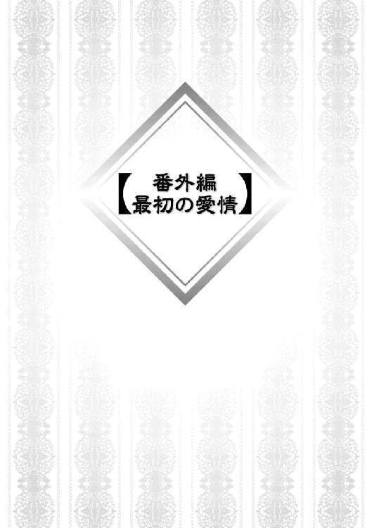

| 捨てられ勇者は帰宅中～隠しスキルで異世界を駆け抜ける～2 | |
| ななめ４４° | |
| TOブックス (2018) | |
霧の迷宮から脱出した優人たちが次に飛ばされたのは、広大なる大海原だった。そこで通り掛かりの船に拾われるが、旅路の途中で突然現れた巨大な怪物・赤クジラの襲撃を受ける。そして戦いの末に辿り着いた海の底で、優人は過去の勇者と聖女にまつわる悲しき物語に出会い、元の世界に帰るためのヒントを探し求めていく。――波乱万丈な展開が目白押しの、怒りの撤退ファンタジー！
illustration：雫綺一生
design：福田 功
教会の修復を終えて旅立とうとしたとき、突如、巨大な鷹のような鳥が現れた。
そして、そんな巨鳥が羽ばたくと、あり得ないぐらいの強風が巻き起こり、俺たちは空高く吹き飛ばされた。
俺は風に煽られながらも、必死に傘を開いて柄に右手でしがみつき、近くにいたエレノアを反対側の手で掴んでいた。
ヤバい、傘を開いたら開いたで風に煽られてぐるぐる回転した。気持ちわるッ！
台風の最中に傘を開いたら制御不能になって体を攫われてしまうのと同じだ。
重力に逆らい上昇を続けていた俺の体はとうとう雲を突き抜けた。
何なんだよこれ、どんだけの力で放り投げられたんだよ。つーか、あの巨大な鳥はなんだったんだよ。あー、でもそんなこと考えてる場合じゃねーな。
「おい、離すなよ！」
「......はいっ！」
俺は左手でエレノアのベルトを掴み、エレノアは月夜を腹から抱え、月夜はアランのメガネを咥え、アランは必死にメガネを両手で握っている。空中で離れてしまったら終わりだ。
というか、月夜、なんでメガネなんだよ。眼鏡で男性一人分の体重に耐えられると思ってんのか！
雲を突き抜けたということは、その分太陽に近づいたということで、めっちゃくちゃ眩しい。だが、逆に暑くなるどころか、上空はとても寒かった。あと空気が薄い気がする。凍える手でエレノアを掴むのも結構キツイ。気持ち悪くない体勢を維持できなくて、骨が激しく軋んでいた。
上空へ昇る力に耐えていると、ようやくと言っていいのか、一瞬空中で静止し、そして今度は落下の重力がかかり始めた。
ヤバい、キツイ！ だんだん重力が増して体が押しつぶされそうだ。
「ユートさん！」
エレノアが視線でどうしましょうと訴えかけてくるが、そんなの俺が知りてーよ！ こっからどうする？
「きゃー！」
加速する落下速度に、段々増す重力。このままだと確実に死ぬ。自分の落下地点がだんだん予測できるようになる。
眼下には青い海が広がっていた。
ん、いったい、いつの間にこんなところまで飛ばされてしまったんだ？
地面よりゃマシだが、水面だってこの速度で叩きつけられたら全身複雑骨折じゃ済まない。
考える時間は多少あるものの、いずれにしても不幸な結末しか思い浮かばず、背を流れる冷や汗すら煽られる風で吹き飛んでいく。
「なんか魔法ねーのか？」
こうなったら超常の力に頼れないかと考えた瞬間、俺達の落下に追いついてくる存在が現れた。それは紅の羽から金色の光を放ち、やがて俺達を背に乗せて再び舞い上がる。
温かくやわらかい羽毛に包まれて、ほっと息をつくと、俺は頭を上げて礼を言う。
「やるな、やきとり」
俺の声に答えて、やきとりは雄たけびを上げた。
ブルイヤール教会に飾っていた絵画のように、凛々しく輝く巨大化したやきとりがそこにいた。
振り返ってみれば他の連中も無事やきとりの背に乗っかっている。ただ意識は保っていられなかったようで、エレノアを含めアランも月夜も目を回して気絶していた。
そういや人間は落下すると気を失うらしい。よく崖から自殺するドラマとかがあるけれど、実際飛び降りると意識が途中からなくなってしまうから、死に方としては比較的楽なのだとか。まあ、それだとスカイダイビングしている人達がなんで意識を保っていられるのかという話になりそうだが、そこらへんは俺も知らん。聞きかじりの知識だからな。
とりあえず、よく意識を保っていられたなと自分を褒めておくことにする。だが、この状態も長くは続かないだろう。
「おいやきとり、お前この状態でいられる時間はまだ少ねーんだろ」
「ピギャー」
仮契約のやきとりが、本来のこの姿でいられるのはそう長くないはずだ。だったら早くどこか降りられる場所を探さないと。
そう考えていた矢先、自分が巨大な影の中に入ったのを意識した。雲かと思って見上げると、そこには、巨大化したやきとりなんかよりも数倍大きなドラゴンが頭上を飛んでいた。羽ばたくその動きはゆったりしているように見えたが、ものすごいスピードで通り過ぎていった。
思わず言葉を失う。
そのドラゴンはあっという間に遠ざかって消えてしまった。
「あれは......」
異世界に来てからというもの、あそこまで巨大で、深遠なものを見たことはない。言い知れぬ感情が湧き起こったが、今はそれどころではないと意識を目の前に戻す。
水面に近づき陸地を探そうとしたとき、ふいにポンッと音がなってやきとりの姿が消える。
俺達は海に投げ出された。
幸い水面との距離はそれほどなかったので怪我はないが、油断していたため鼻に水が入り、つんとした痛みに身悶える。
あ、あいつら気絶してるんだった！
エレノアとアランと月夜が沈んでしまわないように、俺は手を伸ばした。
「うえー、これどうすんだよ」
しょっぱい水にまみれながら弱音を吐く。服が水を吸収してしまったため重くなっている。そんな中、気を失った人間を抱えているのだから、途方に暮れないほうがおかしいだろう。
というか、基本的に自分が溺れているときは他人を助けちゃいけねーんだよな。俺、二人も抱えているけど。
小学生のときに着衣水泳の授業があった。あのとき、なんて教えてもらったんだったか。
そうそう、泳ごうとすれば水の抵抗を受けて服が邪魔に思うかもしれないが、実際は服自体の浮力と保温効果は大事なものだから脱いではいけないと言っていたっけ。
そして基本的に溺れたときは泳いではいけない。いかにその場にとどまり、助けを待つかが重要だとも言われたな。
俺は背泳ぎの体勢で泳がず、とにかく口と鼻が水面に出るようにした。そしてエレノアとアランも同じ体勢に変えてやる。これ以上、二人を抱えているのは無理だったから。
そして自分がそこそこ安定したところで二人を叩き起こした。
「おい、起きろ！ 死ぬぞ！」
何度か頬をぺちぺち叩くと、二人の瞼がゆっくりと開かれる。
「ええ!? 今どういう状況？」
簡単に状況を説明した。その間、全員、ぷかぷか浮く体勢で手を繋いで離れないようにしていた。
「助けていただいてありがとうございます」
「いや、まだ助かってないからな。礼は無事陸に上がってからだ」
「とはいえ、これからどうする？」
「こけー」
「にゃー」
おいやきとり、なんでてめーは一人だけ平気そうに浮かんでられるんだ。おまえいつ水鳥に転向した？
やきとりは、ぷかぷかと水面に浮きつつ、ぐったりとしている月夜を背に乗せている。
「どうするっつったって、ここで助けを待つしかないわな」
てか、さっきから気になってたんだが、俺の傘、海水に浸されて錆びねーかな。心配になってきた。一応、浮力はあるらしく、貴重な掴まりどころではあるんだが。
「助けって......来ると思う？」
アランが疑問を呈する。
俺は目だけで周りを確認する。海の水は見惚れるほど透き通った青だった。まるで南国のような海で、日がさんさんと降り注いでいる。その透明度のおかげでときどき自分達の下に大きな黒い影が見えた。思わず体を強張らせるが、今のところ、その影が襲ってくる様子はない。サメとかは血の臭いで寄ってくるらしいが、幸いなことに怪我をしている者はいない。
だが、この何もない場所で直射日光に当たり続けるのは結構辛い。顔の周りに塩ができてしまいそうだ。
どこまでも広い海のど真ん中。陸地は見えず、絶望的と言える。
本当に俺たち、どこまで飛ばされてしまったんだろう。
「無理だな」
「あはは、だよねー」
アランが苦笑した。エレノアはなにかずっと考え込んでいるようだ。
とにかく、俺達にできるのは浮かび続けることだけだった。ぷかーと浮かぶやきとりを見つめ、俺は考える。
「おい、やきとり。お前、巨大化して飛べるようになるまであとどれくらいだ？」
「こけ？」
「短時間でもいい。お前が巨大化して俺達を乗せさえできれば、少しずつでも移動できるだろ」
「こけー」
「なるほどね」
アランが納得の声をあげると、やきとりは羽を膨らませる。そして光り出したかと思うと、再び巨大化した。
「よし」
俺達はなんとか、やきとりの背中によじ登って一息つく。
これで少しは進めるはずだ。
陸地へ近づいているのか遠のいているのかはわからないが、全く進まないよりマシだ。しかし、やきとりが高度を上げる瞬間、再びポンッと音がしてやきとりが小さくなった。
あー、また海に投げ出される。
「うー、しょっぱい」
「きゃー」
「う......にゃー......」
月夜もようやく自分で動くことにしたようで、犬かきならぬ猫かきにいそしんでいる。けど、たしか猫って水苦手じゃなかったか？
心なしか月夜は不快そうだが、普通に泳いでいるよな......。
さて、いくらやきとりの巨大化に頼って、少しずつ進もうと思っても、この調子だと陸にたどり着くのはいつになることやら分からない。そもそも陸地がどちらなのかも分からなくなっている始末だ。
水の上を歩くなんてこともできないし、あー、こういう時空が飛べたらな。そういや俺今魔法が使えるんだっけ。空飛ぶ魔法と言えば、魔法の箒とか......。
そんな連想を巡らせている中にあって、魔法の箒が妙に頭の隅に引っかかる。
「魔法の箒か......」
確か俺は教会で風属性の魔法を使ったな。あの時の要領で、魔力に風の属性を付与して......。
もぞもぞと血液と反対に流れる魔力を腹の中で混ぜ合わせるイメージを膨らませていると、突如、下から波の動きを感じる。
「ユートさん、下から！」
エレノアの警戒の声で下を見ると、今まで近づいて来なかった黒い影が迫ってきている。アランが脅えた声を上げた。
「あわわわわわわ！」
「なんで急に！」
くそ！ これはどうする！
迷っている間にそいつは、俺の足に食らいついてきた。そして俺達は下からその巨大な何かに突き上げられる。
ぬるりとして冷たいその感触を受け、全身、嫌悪感が駆け巡った。俺はそいつを反対側の足で蹴り上げ、振り払った。
とっさに傘を開くと、さっき感覚をつかんだイメージのままに風の魔力を傘にまとわせた。
浮上していく傘の上に腰かけ、エレノアがすかさず俺の隣に座る。アランが傘の柄につかまった。
そして俺はふらふらのろのろと空中に漂いながら、今度はしっかりと自分の足を噛んだ物体を見る。そいつは全身透明で赤い、ぽっかりと口をもった巨大な生き物だった。
------------------------------------------------------------
《ステータス》
赤クジラ（実はクラゲ）
ＨＰ ５５５６６６／５５５６６６
ＭＰ １０１０
ＬＶ 42
途中略
【魔法属性】 水
【職業】《クラゲ》
------------------------------------------------------------
なんじゃありゃ！
「ぐううううううっ！」
「アランさん、がんばって！」
「ありがとう、その期待に応えるようがんばるよっ！」
いや、よくそういう余裕あるな！
傘を空中に浮かばせて更にそれに乗るという、未知への挑戦中である俺だったが、なかなかうまくいかない。どんだけがんばってもこれ以上水面から上に離れることができない。傘はそれほど大きくない。にもかかわらず男子高校生が一人またがり、少女が横座りしている。そこに座ることのできる隙間はほとんどない。その結果、アランは傘の柄の部分に掴まりぶらさがり続けるしかない。
柄を掴む手がぷるぷるしてるが、本当に大丈夫か？
「ふしゃー！」
「ここここ」
俺の肩に乗る月夜が警戒するような声をあげる。
あの赤クジラとやらはまだ海の中だ。だが俺達を執拗に追ってきていることが、海面下の影の動きから分かる。くそ、もうちょっと高度を上げたいが、どうすりゃいいんだこれ。もしこのままアランが落ちたり、海面近くまで落ちてしまったらまた攻撃されるかもしれない。
それにあの見つめると吸い込まれそうなぽっかり開いた口が常に俺達に向けられているのも気持ち悪い。
「ううっ、もう手が......」
おおおおい！ まだどうしたらいいか固まってないんだよ！ もう少しがんばれ！
そのときエレノアが懐から手ぬぐいを取り出した。
「これでアランさんを支えるとか、できないでしょうか？」
「ちょっと難しいんじゃないか？」
紐の代わりに使えそうだが、無駄に身長が高いアランを支えるには長さが足りない。あ、そうか。
「月夜、影でアランを包んでぶら下げられないか？」
「にゃー」
月夜はひゅんっと尻尾を振り、影を伸ばす。月夜のスキル、影を操って相手を絡めとる「影縛り」だ。そして風呂敷で包むように影を伸ばしてアランの全身を包み、傘に結び付ける。その形状だけ見ればちょっとした魔法使いの宅配人だ。運んでいるのは人だけど。
「ふぅ、助かった」
安堵の声が聞こえた。そしてアランは影の風呂敷で包まれながら、冷静にアレの説明をはじめる。
「あの赤いのはたぶん、巷で赤クジラと呼ばれてる魔物だね。魔物と言ってもその正体は不明なんだけど、よく船があれに襲われて沈められてるって話を聞くよ」
「あれ、船まで襲うのか」
ということはいつまたどんな風に襲われるかわからない。のろのろとほぼ前には進めない状況だ。この状態は非常に面倒くさい。
あたりが急激に暗くなった。空は厚い雲に覆われ、やがてぽつぽつと雨が降り始めた。それと同時に体に異常が現れ始める。
「やべ、なんか痺れる！」
体が足から徐々に痺れてきた。動けない。傘の高度も下がり始める。マジでまずい！
するとピロリンと音がしてステータス画面が現れる。
------------------------------------------------------------
《隠しステータス》
緒方優人 オガタユウト（呪）（マヒ）
ＨＰ 10 ／ 44
ＭＰ ３４４９８０／３４５２０００（危）
ＴＡ ３００／３２８
ＬＶ 43
途中略
【剣技】 《纏》
【魔法】 アンダーテイカー（地闇／攻撃）
ゲリール（治／回復）
ファイヤーボール（火／攻撃）
フレアテンペスト（火風／攻撃）
【魔法属性】 地水火風光闇治 以降増可
【称号】 異世界の旅人・〔本当の〕勇者・捨てられた勇者・神に加護されし者・乞食になった勇者・勇者になった勇者・旅立つ勇者・ホラーメイカー・半沢勇者・料理人・ちんちくりん・魂の記憶の探索者・獏人・呪われし者
【スキル】直感 ＬＶ22 逃げ足 ＬＶ８ 索敵 ＬＶ16 鍛冶 ＬＶ３ 魔力吸収 ＬＶ測定不能 解析 ＬＶ３
【職業】《勇者》《魔法使い》《鍛冶師》《薬師》《ジェネラルコック》《治癒術師ヒーラー》
------------------------------------------------------------
麻痺!? なんでだ！
『ユート君！ 体は麻痺してても魔力はまだ発動できるよね？ 風の魔力だけだと浮力に限界があるんだよ。火の属性も混ぜると、推進力が増すはずだ！』
ウィンドウ画面が立ち上がり、そこに神の言葉が連なっていく。
「ち......きしょ......」
「ユートさん!? 大丈夫ですか！」
だんだん背を丸める俺にエレノアが背を撫でる。
あー、無理！ 火の魔力がなんだって？
体の痺れに耐えつつ、神のコメントを必死に読んで体の内を探る。
赤クジラが水面をジャンプしてきた。
くそっ！ 間に合うか？
「はっ！」
真正面から大きく開いた口が迫ってきたところに、俺の後ろから剣が叩き込まれる。バランスのとりづらいこの状況で器用に傘の上に立ち、更に迫る赤クジラに剣を叩き込んで弾き返したエレノアの、一閃の際の踏込に押さえつけられた傘が激しく揺れる。
そのとき俺の魔力がうまく混ざりあい、急激に傘に推進力が加わって急上昇し始めた。
車のアクセルを深く踏み込んだように急発進した傘に俺は必死にしがみつく。その場から猛スピードで離れる際、やきとりは、エレノアが座り直したのを確認し、口から炎を数発飛ばし、海に落ちた赤クジラを追撃した。
激しい水しぶきが上がった。雨が海面を叩きつける中、がむしゃらに傘につかまった俺たちは進む。
「ユートさん？ 大丈夫ですか!?」
悪いけど今答える余裕はねーんだよ。
傘にしがみつく力もなくなってきた頃、進んでいた先に船が見えた。
「ユートさん、船があります！」
わかってるよ！
海面を叩きつける雨しぶきで視界も悪くなる中、船が徐々に近づき、そして辿り着いた時一気に力が抜けて船の甲板の上に転がり落ちる。
「くっ！」
「おい、大丈夫か？」
わらわらと甲板に現れる人を確認すれども、俺はぴくりとも体を動かせなかった。
ふと、意識が浮上して私は目を開けた。目の前は天井で、木目が見える。顔をわずかに横に向けると、ふかふかとは言い難いが白いベットの上に寝かされていたようだ。どれだけ眠っていたのか、窓の外は曇天と黒い海が広がっている。だいぶ日も暮れかかっているが、まだ夜にはなっていないようだ。手足の痺れはまだ残っている。
自分の状態を確認したところで、扉を叩く音が聞こえ、そして開いた。
「あ、ユートさん！ 目覚められたんですか！」
エレノアがほっとした笑みを浮かべて、手に持っていた水差しをサイドテーブルに置いた。
「調子はいかがですか？」
「......」
私は答えず、感覚を取り戻すようにゆっくりと足を動かし、手を握ったり開いたりしてから上体をあげた。エレノアがすかさず背に手をあてて補助する。
「毒......だな」
手の痺れから、あの赤クジラとやらが毒を持っていて、それを摂取してしまったのだろうと推測する。時間差で痺れが広がったのを見ると、この毒はやや遅行性で、全身に広がる可能性のあるタイプのようだ。心臓までこの毒が達していれば心停止も有り得たかもしれないが、毒の量が少量だったため全身に回るよりも体が毒を排出する機能のほうが勝っているらしい。
結果的に、エレノアが即座に赤クジラを弾き飛ばして遠ざけてくれたのがよかった。こういう毒を使う生物の近くにいるのは危険だ。
そしてここは海の上。解毒薬は作れなくもないが、材料を集めるのは無理だろう。海で採取できるもので作れるが、またあの赤クジラに遭遇することもあり得る。今の段階では解毒薬を作るのは無理だ。
ふと視線をずらすと、枕元に見覚えのある本が置いてあった。教会でユートを呪った魔導書だ。たしか、教会に置いたままだったはずだが。
「なるほど。ついてきた、いや。憑いてきたのか」
私がそれを手に取って中をめくると、なるほど確かに様々な種類の魔法が書かれている。そして、この本自体に紛れ込ませて術式を埋め込んでいるのがすぐにわかった。とはいえ、私だからこそすぐに分かったが、おそらくほとんどの人間が気づかないであろう巧妙さで隠している。
魔導書に手を翳して振ると、この本の表面に埋め込まれている魔法陣が光って浮かび上がった。ユートが【解析】スキルと呼んでいるものだ。私は、魔法陣に少し書き足していく。
「これで、少しはヒントになればいいがな」
「......」
ふう、と息をつくと、私の様子をじっとなにも言わず見守っていたエレノアに、私は目を眇めた。
「なぜ、なにも言わない？」
「え？ えっと......」
「お前は、とっくに私がユートではないと気づいているはずだ」
「え、ユートさんじゃない？」
驚きに目を見張るエレノアの様子に、私はなるほどと頷いた。
「そうか。気づいていないのは素か。だが、その鈍感さは本来のおまえではない......。元来の力を封じているからだな」
この娘はちょっとおかしいくらいに鈍感なときがある。もちろん生来の天然さもあるのだろうが、この娘は賢い。エルフの血を引いているし、なにより私の様子に騒がない。頭の隅のどこかで理解しているのだろう。私が何者であるかということを。
私は【索敵】を発動し、この船の中を探る。なるほど、この能力はなかなか便利だ。使い方を工夫すれば、更に得られる情報量が増えることだろう。だがその方法は、ユート自身が見つけることが望ましい。
そしてこの船、ちと厄介だな。
「おい、エレノア。お前、この船は警戒しておけと、次に目覚めたとき俺に言え」
「え、警戒ですか？」
「ああ、厄介なものを乗せている。それと、今の体の状態はあと六時間ほど休息が必要だ。解毒薬がない以上、体が自然に異物を排出する機能に頼るしかない」
「あ、では魔法で解毒を......」
「ばかもの。今の俺に魔法をかけたら、俺の中にぎりぎり収めている魔力がどうなるかわからない。とにかく落ち着いて寝かせろ」
「はい、わかりました」
「もし困ったときはこの魔導書を開け。多少の手助けにはなってくれるはずだ」
「え、えっと......」
そこまで一方的に伝えた私は、再び目を閉じて横になった。
目を開けると、木目の天井が見えた。窓からは眩しい光が射しこんで、俺は目を瞬かせた。
上体を起こすと比較的滑らかに起き上がることができた。うん、手足の痺れはもうないな。さて、どれくらい時間が経ったのか。とりあえず状況把握のためにベッドから降りる。なんとなく地面がゆらゆら揺れているし、窓から海が見えることから考えると、ここは船の中か。
俺の寝ていた白いシーツのかかったベッドと窓が一つ、そしてサイドテーブルがあるだけの簡素な部屋だった。サイドテーブルには水差しが置いてあり、その水に俺の顔が映る。
ああ、そういえば俺、獏の耳が生えてるんだっけか。
教会で白蛇と戦っている最中、月夜に手渡され、魔導書を手に取った。そして、ページを開いたとき、十八代の勇者という奴が語りかけてきて、気づいたらこの耳が生えていたのだ。
そしてその隣にあるのは......あれ、これって......。
俺は教会に置いてきたはずの魔導書を手に取った。
なんでこれがここにある？
パラパラとめくっていくと、なにも書かれていない白いページに辿りつく。そしてそこに急に黒い文字が浮かび始めた。
《ずっとあなたについてゆく》
「こわっ！」
慌てて魔導書から手を離すが、床に落ちた魔導書は白いページが開かれたままで、さっき浮き出た文字が消えて再び新たな文章が浮かび上がる。
《あなたへのレシピ》
ええー、これ中扉か？
おっかなびっくり、そっと手を伸ばして次のページをめくるとその先には解毒薬と書かれていて、ずらりとそのレシピが書かれていた。
「これって......」
読み進めていくと、解毒薬だけではなく様々な薬関係の内容をはじめ、それに付随することが書かれている。例えば解毒薬の材料の採集方法や生息地などだ。ページを進めると、白紙になる。しかし、じっと見つめるとまたなにがしかのレシピが浮かびだした。その中にはあのクロワのおっさんに使った石化解除薬もあった。
これ......。
なんか、頭の中から何かが吸い取られていくようだったが、それも違和感がなくて、不思議な感覚がした。それは、自分ではない何かなんだけど、自分の中から溢れだすものによって、その魔導書のページが作られていくように思えた。ページを戻ればまた白紙になり、何か知りたいと思うとそれに関連する項目がまた浮かび上がる。
今まで魔法について書かれていたページが白紙になっていくが、自分の心の中で知りたいと思えば浮かび上がってくる。
「これ、検索機能のついた百科事典みたいだな」
魔導書の後半になれば俺の持っているスキルに関する内容が書かれていたが、これは俺がステータス画面で見ていた内容と同じようだ。俺のステータスの称号詳細も魔導書で見ることができる。
「なんか、進化してるな」
この魔導書はいつの間にこんな機能を持つようになったのだろうか。
これはもともと、第十八代の勇者の仲間だという魔導士が、勇者の思念を込めたりしつつ、作ったものだった。「勇者の遺物」と呼ばれているものだ。そういう魔術が込められているのだろうか。
まあ、便利と言えば便利だし、とりあえず持ってはおこうか。とはいえ、ちょっとこれから船内を探索したいのにこの重い本を持って歩くのは大変だ。というわけでサイドテーブルに再び置いて部屋を出た。
部屋を出るとそこは廊下だった。途中にいくつかの扉が同じ距離感であるところを見ると、ここは客室じゃないかとあたりをつける。廊下の端に辿り着いて階段を上ろうとしたところで、その階段の一段に本が置いてあった。
「まさか」
そのまさかだった。サイドテーブルに置いてきたはずの魔導書だ。中を開くとまた白紙のページに文字が浮かび上がる。
《置いていくとか酷い》
「いや、憑いてくるとか怖い」
なんだこれ。俺、この姿に変身してしまっただけじゃなくて、それ以上の呪いを受けてしまったのだろうか。マジで勘弁してくれよ。
まあ、ついてくるならついてくるといいと思いつつ、そのまま本を放置して階段を上った。階段の上には甲板があり、何人か旅装をした人達が海風に吹かれながらそれぞれ思い思いに過ごしている。中には布の上に商品らしきものを置いて商売している奴もいた。
うーん、ここにあいつらはいないか。
甲板とは反対側にいって、客室とは違う風体の扉を進んでいくと、食堂に出た。簡素な食堂の中で、エプロン姿のエレノアが客から注文を受けている。
「えーと、Ｅ定食が三つですね！」
「いや、この食堂Ｅ定食しかないから」
客がエレノアに突っ込み、エレノアは困った表情を浮かべている。
「じゃあＡとＢとＣとＤはどこいったんだよ」
俺はそんな客の言葉にツッコミを呟いた。エレノアは俺に気づかず、くるくるとおぼつかない足取りでテーブルを縫い歩いている。
ていうか、あれ本当に目を回してないか？ 目がぐるぐるしてるんだが。ちゃんと注文覚えてるか？
「いらっしゃいませー」
再び聞こえ慣れている声が聞こえてきた。
なんでお前まで割烹着着てるんだよ、アラン。俺は半眼になった。
「ほれ次、Ｅ定食合わせて六つ！」
声が飛び交う。
アランは皿の上に料理を並べている。キャベツなのか何なのか分からない酢漬けと硬いパン、そして塩漬けで香辛料をまぶしまくった臭い肉を煮たスープのようだった。それを並べ終えると、ラム酒とともに差し出す。
「Ｅ定食六つお待ち！」
エレノアはアランからそれを受け取り、注文した客の元へと持って行った。
今俺がいるのはこの船の食堂で、一応この船の乗組員と乗客達に食事が振る舞われる場所のようだった。
客たちの不満の会話が聞こえてくる。
「なあ、もうこの食事何日目だよ......」
「バカ数えるな。余計辛くなるだろ」
「だけどよー、毎日毎日おんなじ食事でさ、この硬ってえパンも、だんだん変な味のするスープももう飽きたぜ。極めつけはこのキャベツの酢漬けだよ。まじーな！」
「文句言うなよ。俺らが持って来た食料は尽きちまったし、船でメシを提供してくれるだけマシだろ。そりゃ航海が長くなるにつれてメシがヤバくなるのは仕方ないだろ。前の旅なんかウジのわいたビスケットでも食わなきゃ餓死するハメになったんだぜ。今回は恵まれてるほうだ」
「でもさー、もう食事は諦めたから真水が飲みてーよ。俺あんま酒、好きじゃないしさ」
「それも我慢しろよ。水なんか貴重すぎてみんな我慢してるんだし。酒でも飲んでなきゃ干からびて死ぬぞ」
「だよなー」
とりあえず俺は今の状況をアランとエレノアに聞きたかったんだが、二人とも忙しそうで話が聞けるような状況ではなさそうだったので、俺も手伝うことにした。
だが、このいかにもうまくなさそうな食事と、それを食べる客たちのさえない顔が気になる。厨房を見ても、この食事以外材料はなさそうか。
振り返れば奴がいる、というわけではないが、厨房の端には塩漬けにされた色の悪い肉が詰め込まれた箱と、大量のキャベツらしき野菜の酢漬けが詰め込まれた壺、そして固まりきったパンが山のように積まれていた。それ以外の材料がおかれている様子はない。それになんかこう......異臭がする。
そしてそれを調理する料理人は一人。
その料理人は太い上腕二頭筋と鋭い眼光の持ち主で、料理がうまそうというよりも、腕っぷしが強そうというイメージしか受けない。
無口な男らしく、全く喋らない。俺が手伝うことに関してもなにも言わず、まるで監視するように俺達の働きを見ていた。
『いやいや、眼光しかわからないからね！ なんで目の部分しか開いてない袋かぶってんの!? どこの殺人鬼ですか!?』
ウィンドウ画面が立ち上がった。
っていうか、おい、神、あえて言わないようにしてたんだぞ！ あの料理人、不気味だからよ。
『だって包丁持ってるもの！ 全然動かないし食事の用意している雰囲気でもないのに腕組みながら包丁持ってるもの！ 臨戦態勢にしか見えないし！』
やめろ、それ以上言うな。怖いだろ。
『まあ、船の食事事情はよくないからね。単純に料理がうまいよりも、限られた食材でどう使いまわすかと、いかに食糧を盗まれないかってのが重要だからさ。必然的にそうなるんだろうね』
怖がる俺を安心させるためか、神はそう言った。
『にしても、この船、ほんとワケありだね』
なにか知ってそうな雰囲気を醸し出してるけど、おまえ絶対なにも知らないだろ。それらしいこと言ってるだけだろ。
『あれ、バレた？』
このやろう。
神だって言う割には何も知らないんだからな。もはや驚きもしない神の言葉を見て考える。
明らかに俺が船と聞かれて思い浮かべる現代日本の船とは構造が違う。あのテレビで見るような豪華客船でもなければ、島に行くためのフェリーでもない。この食事の様子を見るに冷蔵施設もなさそうだ。航海期間がどのくらいかは今の俺にはわからないが、食べ物は保存食で補っているんだろう。塩漬けの肉も、キャベツの酢漬けも確かに保存食だ。だが、保存食もちゃんと保存しないと悪くなっていくし、確実にこの船の衛生状態はよろしくない。
いろいろ考察しているうちに食べ終えた客が去り、エレノアが駆け寄ってくる。
「ユートさん！ 体の調子はいかがですか？」
「ああ、もう普通に動ける。俺はどれくらい眠ってた？」
俺とエレノアが話しているのを見て、アランが割烹着を脱いでやってきた。
てかさ、割烹着についてはつっこまなくていいよな？ まだなんかすこーし体がだるい気がするから、激しいつっこみとかは遠慮したいんだが。
『というか、優人君すっかりつっこみが板についちゃって......（ほろり）』
うるせー。
アランが俺の問いに答えるために窓の外の日の様子を見る。
「一度目覚めてからちょうど六時間ってとこかな」
「はい、ご自分であと六時間くらいの休息が必要だと仰ってましたもんね」
「......は、一度目覚めてから？」
「はい。体の痺れは毒のせいで、あと六時間体の休息が必要だと仰ってましたよ？」
「......そんなこと言った記憶は......ないんだけどな......」
俺が覚えていないだけか......？
それに毒って......。
「あ、あともう一つ仰っていたことが」
「もう一つ？」
「はい。この船に気をつけろって」
なんだよそれ。なんでそんな意味深なことを、俺が？
ぐるぐると思考を巡らせて考え込んでいると、頭の上から声が落ちてきた。
「仕事は終わりましたか」
「あ、はい。終わりました」
エレノアが慌てた様子で答える。アランが顔をあげてそいつに尋ねた。
「次はなにをしたらいいのかな？ 一等航海士テランス」
見上げると背が高くて、細めの鋭い眼光の男が、俺を見下していた。
白を基調とした制服っぽいものを着たその男は、全く感情が読めない目をしている。視線は俺やエレノア達を見て動くのに、表情筋がまったく動いていない。
「船長からの指示を伝えに参りました。客室は空いているので二部屋提供しましょう。最初に案内した部屋とその右隣です。あとそれがどちらの持ち物かは存じ上げませんが、自室にて管理していただくように」
テランスと呼ばれた男の視線が俺に向けられる。
〝それ〟と、〝持ち物〟だと？
「ユートさんはものではありませんし、彼は私達を助けてくれた恩人です。もう一部屋空いていませんか？」
エレノアが柔らかい笑みを浮かべて言ったその言葉に、無表情なその男の顔に微かな感情らしきものが沸き起こったように見えた。一瞬理解できないものを見るような目をして、そして瞬き一つで感情の波が消える。
「ということは、その獣人は所持者不明ということですか」
「......」
エレノアが微かにむっと眉を寄せる。
ああなるほど。そういうことか。
「俺の主人はそこのメガネの男だ。部屋はそちらに行く。他になにかありますか？」
「......。前にも説明しましたが、客船というのはその行程が長ければ長いほど食料の分配が厳しくなります。既にお乗りいただいているお客様の分しか基本的に用意しておりません。自前で食事を用意できるのなら構いませんが、そうでないのなら我々の作業を手伝っていただきます」
俺達を助ける対価が労働力ね。まあ、普通のことだな。
テレンスはアランを見た。
「それでよろしいか」
「元より、助けてもらってタダ乗りするつもりはないよ。だから今も食堂で働いていたわけだしね」
「ご理解いただけたようでなによりです。そこの獣人も労働力として期待しておりますので、よろしくお願いいたします」
そう言ってテレンスは背を向けて去って行った。
エレノアは険のある目でテレンスを睨んでいた。俺はエレノアの肩を叩いた。
「そうムクれるなよ、エレノア」
「でも......」
「確かに言われた俺もムカついたけど、向こうは俺を獣人だと思ってんだろ？ ここではそれが一般的な反応なんだよな？ 俺の気持ちとしては、獣人に対してのあの言葉は腹が立つけど助けてもらっているのは事実なんだ。コトを荒立てないにこしたことはない。な、アラン」
「うん。心苦しくはあるけど、とりあえずユートは僕に仕える獣人ってことにしておこう。下手に所属を決めていないと、誘拐とか酷い目に遭うかもしれないしね」
「それだけの商品価値が獣人にはあるってことか。皮肉だな」
俺は軽く自分の耳を触ってため息をついた。
俺達は船の甲板に出た。
青い空、白い雲、と言いたいところだが、現在の空模様はご機嫌斜めらしい。今にも降りそうな、というわけではないが、曇り空が続いていた。
「俺はこの甲板に突っ込んだとこまでは覚えている。んで、俺が気を失ったあとどうなったんだ？ そしてこの船はどういう船なんだ」
甲板には相変わらず旅人達や水夫達がそれぞれ時間を潰したり仕事をしたりしている。いや、さっきよりむしろ増えたか。なんかバケツを持っている奴が多い。
俺の問いにアランがこくりと頷きながら答えてくれた。
「ユートががんばって傘を浮かせて、ここまでたどり着けたおかげで、僕達は甲板に下りることができたんだ。そしてこの船の船長が出てきて僕らの話を聞いてくれた。とはいえ、教会のことは話せないから、旅をしているときにあの赤クジラに襲われて逃げてきたっていう説明しかしてないよ」
「なるほど」
この船に乗ってる乗組員の中にはどういう立場の奴がいるか分からないから、余計なことは言わない方がいいのだろう。
獣人たちを匿う教会のことは外に漏らさない方がいい。あの教会に突如現れた巨鳥に吹き飛ばされ、はるばるこんなところまで飛んできたわけだが......。
「この船は商業都市マルシェンダから夏を告げる港街ニーナまでいく客船なんだってさ。その行程は約三か月。現在はちょうど中間くらいで、あと一か月半の航海になるみたい。さっき一等航海士テランスが言ってた通り、この船が積んでいるのは、流通のための荷物と旅人、そして乗船者がギリギリ生きていけるだけの......いや、むしろ足りない食糧やら生活必需品を積んでいる。海では真水が手に入らないし、かといってずっと水を載せていたら腐るし、保存と維持はシビアな課題だから一日に配られる水の量は決まってるんだ。そこに僕らが入ったら一人当たりの水量が減るわけだから、結構みんなピリピリしてる。一応受け入れてもらえたのは船乗り達の相互扶助の精神のおかげだろうね」
「それだけみんな切羽詰まった状態だから、困ったときは助け合いましょうってことか。なるほどね」
「それで、この船に乗る条件が提示されたんだ。運賃を払うか働くか、ってね。というわけで、僕達は働いていたってわけ。その代わりに部屋と、貴重な水も与えられた」
「そういや、部屋に水差しが置いてあったな......。そんで、月夜とやきとりは？ さっきから見当たらないんだが」
「ああ、彼らは倉庫の治安維持に一役買ってるみたい」
「治安維持？」
「この船は港に物資を運んでるからね。中にはネズミがいたり、虫がいたりするからそれを退治してもらってるんだ」
「あいつら、そんなことやっているのか」
「眠ってた君の代わりに張り切って働いてくれてるよ」
ちょっとあとで様子を見にいってみるか。
そのとき、エレノアがおずおずと前に出た。
「あの......」
なんだよ。なんでそんな心配そうな顔してるんだ。
「ユートさんが一度目覚められた時、次にユートさんが目を覚ましたら、この船は厄介なものを乗せているから警戒するよう伝えろと、おっしゃっていました」
「俺が......？」
記憶を探るが、やはり一度目覚めた覚えはない。ただ単に覚えていないのか、それとも他になにかあるんだろうか。いや、起きたら伝えろと言ったということは、俺が記憶を失うことを見越していた......？
まさか神が俺の体を乗っ取って、話したのだろうか。
『いや、そんなことはしてないよ。誰か別の人じゃないかな』
即座に否定のウィンドウが立ち上がる。
別の人って誰だよ？ やっぱり俺の体を誰かが操っていたということか？
魔導書の件といい、本当にワケが分からないことばかりだ。
「わかった。俺からの伝言を聞くってのも変な感じだが、覚えておく」
「はい！」
それにしても、厄介なものを乗せてる......ね。
「さて、事情はとりあえずわかった。とにかくちょっと船を探索してくるわ。月夜達の様子も見たいし、船がどうなってるのかと、その俺の伝言とやらの真意も知りたいしな」
「わかった、僕らはたしか、次は船の掃除だったかな？」
「はい。甲板掃除ですね」
二人は腕まくりをした。
「船内の地図とか......はなさそうだな」
これが日本の客船とかであれば、壁に避難経路なんかが書かれた地図が掲示されていそうだが、この船にはないようだ。ただ、月夜達がいる船倉は一番下の階層にあるというのはエレノアから聞いた。
下り口は床にぽっかりと穴が開いた部分で、そこに梯子がかかっている。明かりがなくなれば、この穴に気づかず落ちてしまいそうだ。
一部天井が格子状になっていてそこから日光を取り入れているようだが、これ雨の時はどうするんだろうか。
注意深く見て歩いていくと、日の光が入らないこの場所も先が見通せている。壁にランプのようなものが釣り下がっていた。近づいて見てみると、温かいオレンジの光がぽうっと淡く光っている。
中心部はなんだか見たことがある気がする。
「ああ、魔石か」
教会で見たあの空っぽの魔石。形状がそれによく似ていた。ただあのときは透明だったが、今は色がついている。
『魔力灯だね。光属性の魔力を注ぎ続けることで明かりを発する照明器具の一つだよ』
光属性の魔力か。だから色がついているんだな。
そういえばさっきエレノアとアランと話したときにそれに類することを言っていた。船で過ごす上での注意点として、もし火を使う際は必ずあの無表情男のテレンスか、船長の許可がいるのだという。まあ確かにこの船は木製で、火を使って万が一のことがあればあっという間に燃えてしまうだろう。許可が必要だというのも納得できるし、船内の明かりもこんなふうに常に灯しておけるのなら火を使わなくても済み安全かもしれない。
この世界は地球のように電気のような科学技術はないが、その代わりに魔法によって、この社会の文明はまかなわれているようだ。
更に下りていくと、そこにはたくさんの人間が寝ていた。柱にハンモックがかけられて、かなり狭苦しい印象を受ける。それと同時になんか、なんとも言えない臭いが漂っていた。いや、上の階でも臭いはあったが、下になるとより臭いが増す。
どうやらここで寝ているのは水夫達らしい。船の航海に休みはないからか、おそらく交代制をとっているんだろう。ここの彼らは現在休息中なんだろうか。
それと同時にこの水夫達、よく見ると獣人のようだ。いや、何人か人間もいるな。だが、その多くは獣人であるというのは間違いないだろう。
全員疲れ切ったように寝ているので、起こさないように慎重に奥へと進んでいった。
俺は今まで船に乗ったことはないが、地球の船もこんなに天井が低いんだろうか。時々突き出している梁に頭をぶつけそうになる。
経験していないことにぶち当たると、テレビで見た知識を記憶から引っ張りだしてしまうが、そういう知識と現実はかなり違っている。まるで別世界にいるようだ。あ、ここ異世界だったか。
身を低くして進むと、再び下り口を見つけて更にそれを下りた。
そこは真っ暗で、俺は梯子にかけた足を止める。多分ここが一番下で、船倉だと思うんだが。
「つか、マジで臭いな、臭い。換気とか......は難しいのか」
海面に近いから、窓とかはないのかもしれない。
俺は下り口に顔だけつっこみ、息を吸う。
「おーい、月夜ー！ やきとりー！ いるかー？」
俺の声が反響するのが聞こえる。だが、返事はない。ていうか、マジで臭い！ 一番下の臭いが強烈すぎる。
俺はハンカチで鼻を覆いながら叫んだ。
「おーい！ 月夜ー！ やきとりー！」
「うおろろろろろろろ！」
突如そんな声と共に酸っぱい臭いが漂ってきた。
うっ！ なんだこの臭い！
咄嗟に鼻をつまむが、臭いの衝撃は少し尾を引く。
「こーけー」
「んにゃー！」
「おーいお前ら、ほらネズミそっち行ったぞ。今度はそっちだ。おええええ」
そんな声が聞こえてきた。
薄暗いが全く明かりがないわけではない。だが上のものよりかなり質の悪い魔力灯がぶら下がっているだけで、視界はよくない。
俺はそろそろと梯子を下りると、急に光が増して視界がよくなった。
『うー、わぁ......』
神は、そのあまりの光景に呆気にとられているみたいだ。
そこには舞い飛ぶネズミとそれを跳びまわって追いかける月夜と光り輝くやきとりの姿があった。
そしてそんな彼らの姿をはやしたてながらバケツを抱えている大柄な男がいた。
麻袋と樽がそこかしこに積み上げられている中、ネズミがちょろちょろと動き回り、時に壁や麻袋と樽を蹴り上げて縦横無尽に跳びまわっている。更にその下にはドロドロとしたヘドロのような悪臭が漂う水が溜まっている。
なんだこれ、ものすごく踏みたくないんだが。とりあえず少し段差があるので踏まないように進むことはできそうだ。
月夜がネズミを追いかけている姿は、まるでサーカスの芸のようだった。そしてその更に後ろでおろおろしているやきとり。
あ、ネズミに頭ふまれた。
なかなか捕まえられないうえに、果てしない数のネズミたちが蠢いていて、イライラの頂点に達した月夜は自分の足元の影を伸ばして網を作り、追い詰めはじめる。
「なんだ、こんな船底に今日はお客さんが多いな」
バケツを抱えた大柄な男は俺の気配を察知して、その赤ら顔をこちらにむけた。白いもじゃもじゃの髭が吐瀉物で汚れている。
そしてバケツに吐きだした。
「おろろろろろ」
「おい、大丈夫か！......て、あんた飲み過ぎたんだろ。酒臭い」
「うおえっ！ ばっかやろう。船乗りが酒に負けてどうする。船の上じゃ酒飲まないと死んじまうんだぞ。それしか飲むものがねーからな。これは船酔いだ」
「いや、それ船乗りとして酒が飲めない以上に致命的！」
船酔いだろうが酒に酔ったんだろうが、とりあえず酔い止めがあればいいんだよな。
「そういえば、魔法水なら酔いに効くんじゃ？ ここは常備してないのか」
「常備はしてるができるだけ使わないんだよ。海の上じゃなにが起こるかわからねーからな。船酔いぐらいで使ってられっか」
『船乗りでも船酔いすることはよくあるみたいだからねー。これで使ってたら何本あっても足りないってのは確かかも』
そういうものなのか。
「お前も気をつけろよ。今はそんなに揺れてないが、もう少ししたら雨が降る。雨自体は喜ぶべきことだが、風が強いとかなり揺れるからな。船酔いしなくてもするし、悪化することも多い」
「そうなのか。わかった」
「まあ、酔ったら救護室に行けよ。魔法水でも飲んだら治るさ」
「あんたは飲まないのに、俺には魔法水くれるのか」
「お前は客だろ」
「あー」
おっさんはにやりと笑った。
「ところで、あんたはここでなにしてるんだ？」
「その質問はそっくりそのまま返したいんだがな。俺はこの通り、荷物番よ」
「吐きに来たわけじゃなかったのか」
「それもある」
「あるのかい！」
おっさんはがはははと笑い、そしてまたバケツに吐いた。
「本当に大丈夫か？」
「いやなに、いつものことよ。んで、お前は何しに来たんだ？」
「俺は、そいつらの様子をみに来たんだ。一応主だからな」
「主ってつまり、こいつらはお前の使い魔か？」
「ああ」
「お前が？」
おっさんはじいっと俺の耳を見る。
「なにかおかしいか？」
「獣人が使い魔をもってるなんて初めてきいたからよ。そうか、こいつらはお前のだったのか。あの割れたメガネのひょろっこい奴のじゃなかったんだな」
「ひょろっこいって、あー、アランか」
「お前はあのひょろひょろのか？ それとも女のほうのか」
「ひょろひょろのほうのだな」
「ははははは！ お前、自分の主を悪く言っていいのか！ いや、言える時点で許されてるのか」
「......」
ああ、そうか。獣人は人間の言うことに逆らえないんだったか。ということは獣人が自身の持ち主の悪口を言うことが、普通の人にとっては奇異に映ってしまうのも頷ける。一度命令されたら従わざるを得ないからな。
「月夜、やきとり。お前らもこんな場所から早く出たいだろ。早く終わらせるぞ」
「コケっ」
「んにゃー！」
やきとりと月夜が俺の元に馳せ参じる。
「やきとり、明かりをもっと寄越せ」
「こけー」
「月夜、籠つくれ」
「んにゃー」
やきとりは羽をはためかせると光の球体を生み出し、船倉全体に配置する。月夜は影で格子の籠を作り出した。そして俺は教会で貰い受け、そして一度海水でびしゃびしゃになったチーズを取り出した。
「おい、何する気だ？」
「荷物は船室に置いているにもかかわらずなぜか持ち歩いていたこのチーズで、奴らを釣る」
と俺がチーズを掲げ持っていると、どさどさっと大きな音がした。
「え......」
「おい、これまずいって......」
麻袋などの後ろに隠れていたネズミが一気に姿を見せる。そしてその目はらんらんと輝き、俺の手に注がれていた。正しくは、俺の持つチーズにだ。
いや、さすがにそこまで大群だとは思ってなかったから！ こいつらに飛びかかられたりなんかしたら......。
しかし、予想に違わず一斉に俺に飛びかかってきた。
「うわあああああああああ！」
「うーーーにゃーーーーー！」
「こけー！」
ええええ。これはまずい！ ここまでのネズミの大群に襲いかかられるなんて予想外過ぎる。
月夜は俺の前に影の網を張り、やきとりがその網に炎を這わせてネズミを一気に焼きネズミにしてしまう。
それはまさにネズミホイホイだ。
しかし、その網を潜り抜けた数匹が俺に襲い掛かってきて、チーズを持っている俺の指をかじってきた。
その勢いに負けて体が後ろに倒れそうになる。
俺はネズミよりも、このヘドロにつっこむことに恐怖を覚えていた。
嫌だ、嫌すぎる！ この何が混ざったかわからない液体に浸かりたくない。臭いといい見た目といいこの環境といい、この水が無害なわけがない。
その一心で体勢を立て直そうとしているときに、月夜が俺の指にかじりつくネズミに襲い掛かり、そのおかげで俺の指は救われたが、俺は再び後ろにのけぞってしまった。
「あ......」
そこから先、俺の記憶はない。
「くっ！ いって......」
「おまえ......おもしろい奴だなー......」
「は？」
髭の男はなかば呆然としながらそう言った。俺は突如襲った頭の痛みで意識を取り戻す。あれ、俺意識飛んでたのか。
「おまえ獣人なのに魔法が使えるのか」
「んと、俺今なにかしたか？」
『特大のまだ名称のついてない魔法使ってたけど......』
「あれ、なんか臭いが......、それに綺麗になってる？」
きょろきょろと周りを見回し、そして自分の綺麗になった体を見て俺は首を傾げた。その様子を見て、月夜とやきとりがはあとため息をつき、それぞれへたりこむ。少しだけお疲れのようだ。
『それでは、ユート君が意識を飛ばしたあとの行動を、どうぞ』
神がそう言った瞬間、俺の頭の中に映像が浮かび上がってきた。
そこには俺自身の姿が映し出されていた。俺のすぐ頭の後ろからの映像──おそらく、それは神が普段見ている視点なのだろう。
俺がドロドロの汚水の中へと倒れ込み、そして沈んでいく。すると、その汚水がボコボコと発酵するように泡立っていった。
「なんだ、誰か屁でもしたか!?」
髭の男はそう叫んで鼻をつまんだ。泡立つ水から屁のような臭いがするのだろう。そしてザザザッと水が吸い上げられるように立ち上がった。様々なゴミが中途半端に混ざり合い、泥になりかけ、腐った臭いを放つヘドロが浮き上がってはベチャッ......ベチャッと滴り落ちて飛沫をあげる。
俺は虚ろな目でぶつぶつと何か呟きながら立ち上がる。
「月曜日は燃えるごみの日、火曜日は燃えない......」
すると、汚水が固まっていって浮き上がっていく。
「にゃー、にゃにゃー」
「こけー、こけこけ」
俺は自分があのものすごく汚い水に全身突っ込んだことに拒絶反応を起こし、意識を半ば飛ばしたまま魔力を操っているみたいだった。
もちろん俺の意思に則って魔力を支えているのは月夜とやきとりだが、その様子はすさまじいの一言である。
「水曜日は資源ごみの日。木曜日はペットボトル。金曜日はカンとビン」
俺の口から言葉が発せられるたびに、その汚水に混じっていたゴミが仕分けられていく。肉の骨や腐った魚、人、虫、ネズミの糞とその他の雑多な虫の死骸やら髪やら木くずやらは燃えるゴミとして。誰かが落とした鎖や金属片は一塊にまとめられる。そして仕分けられたゴミはやきとりによって灰塵と化した。ヘドロは燃やされ土のようなものになり、泥岩のように固められる。
火を使うときは船の許可が必要だったが、意識を失っている俺は、そんな注意など覚えていないのだろう。
しかし、常人には見えない【繋がり】という糸が俺と月夜、やきとりを繋いでいる。その糸があるおかげで月夜はいっそのこと決壊してしまいそうなほどの量の荒れる優人の魔力を鎮めつつ、やきとりが絶妙なコントロールで制御し方向修正されていることによって火が船に燃え移ることはない。
砂は砂に、泥は純粋な泥に、ゴミは灰にまとめられ、それらによって水は透明に変わってゆく。そしてこの換気のできない淀んだ空気の船倉に風が渦巻き、濡れた床を乾かし、淀んだ空気は下り口から遡って外へ排出される。それと同時に黒いテカテカとしたあの果てしない生命力を持つ虫も風に引きずり出されて燃えていく。
カビなどは削り取られ、船を安定させるために敷かれた石は変なぬめりやコケが覆っていたが、まるで磨きあげられたかのような輝きを取り戻した。
「掃除をしない悪い子は〜、いねーがー」
そう呟きを漏らした瞬間、俺はその場でくずおれて地面に頭をしたたか打ちつける。
俺は、意識を失っていた時に起こった映像を見て、唖然とした。
「マジか......」
っていうか、神、おまえ、こんな力も持っていたのか。
『君が意識を失う瞬間、視野記録の力を発動してみたんだ。初めてだけど、うまく見れたみたいだね』
べつにこんなの、見たくもなかったけどな......。
『でもこれ、めっちゃ疲れる、二度としない』
さいですか。
「うー、にゃー」
「こけー、こけこけ......」
「よくわかんねーが、よくがんばったよ、おめーら」
俺が額を押さえてうなだれる中、がははと髭の男は笑う。そのとき、上から声が降ってきた。
「船長！ 船長どこですか？」
誰かが誰かを探す声が聞こえたあと、船倉への下り口からひょっこり顔が出てくる。
「ああ、あなたはまたこんなところに。ちゃんと船長室にいて指示出ししてください」
「おおー、悪いなテレンス」
船長と呼ばれた髭の男は申し訳なさそうに頭を掻く。
何、この男が船長だって！
「船長が船酔いしてたのか......」
「まあな！」
船長は俺の呟きに答えたあと、テレンスを見上げる。
「おい、今こいつのおかげでここはすっかり綺麗になった。また水が入ってくる前に補修しとけ」
「わかりました。補修係を呼んで来ます」
テレンスはすぐに頭を引っ込め去っていく。あの地獄のような状態から綺麗になったと言われても、あの無表情男は大した反応を示さなかった。本当に感情というものがないのか？
「さてと、んじゃ上に上がるか」
船長はそのまま上に上がり、俺と月夜とやきとりはその後ろに続く。
「ふう......」
「ああ、雨が降ってきたな」
船長の言葉通り、甲板に雨の打ちつける音が聞こえる。そのまま船長は甲板に進んでいった。
甲板に出ると、その場は大騒ぎになっていた。
「おい、はやくバケツ！ バケツ持って来い！」
「ああああ、バケツ足りないぞ！」
「おい、それおれのバケツだぞ」
「なに言ってんだ！ これは俺のバケツだ！」
「コップでも洗面器でもなんでもいいからとりあえず水を入れられるものをはやく！」
おそらく船に乗っていた旅人であろう人間達が雨の水を得ようとあちらこちらにバケツを置いてまわっている。
あ、旅人だけではないか。乗組員達も右往左往しているようだ。
「おい、てめーら！ 雨もいいが帆を畳め！ 風が強くなりすぎると船が傾くぞ！ ついでに雨避けの魔法を重ね掛けしとけぇ！」
船長のその声にはっとしたように乗組員達がバタバタと柱を上ったりロープをほどいたりして帆を畳む用意を始める。
俺はそれを横目に、甲板の端に立つエレノアとアランに近寄った。
「おい、なにしてる」
「ああ、いや、甲板磨きしてたんだけど、磨いたあとすぐに雨降ってきたから、また汚れるなーと思って」
「ああ、なるほど」
遠い目になるアランの様子で、甲板磨きがとても大変な作業だったことがうかがえる。彼の手には四角い石が握られていて、それが甲板を磨くものなんだろう。なるほど、なかなかその石も重そうだし、この広さだからやはり重労働だったんだろうな。
「んで、お前はどうした？」
「え、えっと......」
アランの横でこちらに背を向けて座り込んでいたエレノアが振り返る。その目には涙を浮かべていた。
「おい、どうした」
「か、壁が......」
「壁が？」
「穴をあけてしまいました」
「は？」
エレノアの前の壁をよくよく見ると、たしかに木の壁に穴が開いている。というか、かんぜんな人型のくっきりとした穴が開いている。
「甲板磨きをしていたら勢い余って突っ込んでしまって......」
「だからって普通壁に穴はあかないだろ!?」
「ほら、雨が降り始めたところだったから滑りやすかったし、それで勢い余ったみたいで」
「だからってこんなくっきり人型がわかる滑り方するとか、どんな滑り方したんだよ」
「こう、雑巾がけの要領でやってたんですが......」
いや、甲板磨きで雑巾がけするみたいにやるってできんのか？ その穴はそれはもう見事な人型だった。まるでその形にのこぎりで切り取られたみたいだ。
「すみません」
「謝るのは俺じゃないしな。それより、壁に突っ込んだなら怪我はないか？ どっか打ちつけたりとか」
「今のところはなんともないと思います」
「ならいいが、なにか異常があったらすぐ言えよ」
打撲というのは、今は何ともないからと考えて油断していると後から激痛に襲われることもある。
「は、はい。ありがとうございます」
エレノアはしょんぼりとうなだれて、謝りにいくためだろう、立ち上がり指示だしをしている船長のところに歩き出した。
「ユート、僕はもう少しここにいるよ。よかったら部屋に戻ってて。病み上がりだし、顔から疲れが滲み出てるよ」
「あー、わかった」
確かに、体が疲れているのは感じていた。
部屋に戻るとそこには当然誰もいなかった。
「ふぅ......」
「にゃ〜」
「こけ〜」
俺がベッドに腰掛けて息を吐くと、同じように部屋に入った月夜とやきとりも疲れたように息を吐きだし伸びをした。
「お疲れさん。悪かったな、いろいろ迷惑かけて」
「にゃー」
「こけー、こけこけ」
『気にするな、だってさ』
神が翻訳してくれる。
「そうか」
一羽と一匹はそれぞれ頷くと、指示を待つように俺の前に並んだ。
「ああそうか。もう休んでいいぞ。......そのまえに、お互い寝る準備が必要か」
するとやきとりも月夜も心得たもので、月夜はテーブルの上に置いてあったタオルに向かって飛びあがり、タオルを咥えて着地する。そして器用に口と手足を使って足裏を拭きだした。体の柔らかい猫ならではの動きだと感心する。
やきとりはくちばしを使って毛繕いをはじめた。俺もマントと制服を脱ぎ、シャツだけの状態となる。
寝巻きとなるようなものは持ってきていないし、荷物になるので用意もしていないから、これからも寝るときはこの状態が続くかもしれない。とはいえ、同じ服を着続けるのも問題があるだろう。多少の汚れはいいとして、同じ服だけだと消耗が激しい。異世界にたどり着いてからというもの、今まで着続けているシャツを着て、ますますどうにかしないとなという思いが強くなる。
学ランのインナーとして着ているシャツはすでによれよれになっていた。袖口はほつれはじめていて、先端の折れ目がぱっくりと口を開けている。
この世界で違和感のない服を手に入れられればマントで隠す必要もないし、学ランを傷めずに済む。理性的に考えればそうだが、脱いでしまうのは少し躊躇われた。
学ランを着ていることが、俺はこの世界に完全に染まらないという決意の表れだったのかもしれない。とはいえ、いまだに帰る手がかりもほとんど得られることがなく、これは覚悟を決めて、それこそ一旦腰を据えて問題に向き合う必要があるのだろう。
まあ、要するに意地という俺の気持ちの問題なのだが。
「ボロボロにしてしまうわけにはいかないからな」
若干手遅れな気もしないではないが、日本に戻ったとき制服が着られないととても困る。制服代だってタダではない。
俺はとりあえずラフな格好になったことでほっと息を吐いた。全身が軽くなったと感じると同時に、疲労感が増す。けだるい体に力を込め、月夜が体を拭いているタオルを手に取って水差しの水で濡らす。
今、この船の上で飲み水は貴重だが、正直まだ俺はここの水を飲むことに抵抗があった。なんというか、腹を壊しそうだ。
さっき乗客達が雨を必死に溜めていたが、俺はそのまま雨水を飲むことができない。手間であっても、最低限、沸騰させたい。やはり自分は恵まれた国に住んでいたのだと実感する。蛇口を捻れば清潔な水が流れて、どこでも水が手に入る状況が【普通】であるということは、やはり【特別】なことなのだ。
とりあえず一応飲み水としても使われているぐらいだから、体を拭く分には抵抗はない。
俺は月夜を膝の上にのせて足を拭ってやる。
「んにゃ〜」
月夜は気持ちよさそうに鳴いた。足の次は体、尻尾も拭いてやる。月夜はリラックスした様子で満足げに髭を揺らした。
「こ、ここここ」
その様子を羨ましげに見ていたやきとりに、俺は視線をやる。
「ほれ」
月夜をベッドの上に移動させて、入れ替わるように膝に乗ったやきとりの足をぬぐってやる。鶏の足は細いのにゴツゴツしていて、やはり鉤爪は鋭い。爪と爪の間も拭いて、そのあと羽も拭いてやる。
「こここここけ〜」
「ぷっ」
その鳴き方が、「いい湯だ〜」と言っているように聞こえて思わず吹き出す。
そんな様子を見ながら、俺は自分のことをこいつらに話すかどうか迷った。
自分と契約した使い魔。おとぎ話でしか聞いたことのない存在だが、これから俺はこのよく分からない世界を旅するうえでこいつらを連れてまわすことになる。それなら自分がどういう目的で旅をしているのか、同じ旅の同行者として伝えておくべきなのだろう。もし自分がどこに向かっているかわからない状態で旅に連れて行かれたら、不安とか、迷いとかが生まれそうだと思うからだ。
だが同時に、所詮は月夜もやきとりもこの世界の借り物だ。いつかはこの世界に、誰とも知れない誰かに返す者達だとも思う。
「あんまりこの世界に未練になりそうなものは残したくないしな」
いつの間にか月夜もやきとりも寝息をたてている。おそらく俺がなにも言わなくてもこいつらは文句も言わずついてくるのだろう。ある意味月夜とやきとりの寛容さに甘えている。だとしても......。
俺はやきとりをそっとベッドの端におろし、寝転んだ。
『優人君。これからどうするの？』
仰向けに寝転ぶとウィンドウ画面が目の前に現れた。今はこの部屋に俺の声を聞く者はいないから、声に出しても問題ないだろう。
「とりあえず、この魔導書が俺のところに来るときに聞いた、勇者の遺物って奴を探していこうと思う」
どこまでも俺についてくるこの魔導書の、勇者の遺物があるという場所の書かれたページを開きながら、体勢を横に変える。
『その魔導書が言ってたの？』
「ああ、魔導書を開いたとき、俺より何代か前......確か十八代だったかな、その先輩勇者が出てきて言っていたよ。帰る方法を探すなら、今までの勇者について調べたらいいんじゃないかってな。その手がかりが勇者の遺物だろ」
『そうだね。確かに遺物は彼らが作ったものだし、その周囲には彼らの足跡が残っている。僕も彼らの旅路を詳細に見ていたわけではないから何ともアドバイスできないけど、帰る方法を研究していた人もいた気がするし、いいんじゃないかな』
「だとしたら、この方向性で間違ってないんだな」
ぱらぱらとページをめくる。
俺が普通に触れている分にはこの魔導書に変な文字が浮かび上がるという変な現象は起こらない。
後ろのほうのページには、この魔導書の製作に関わった勇者が見つけたであろう勇者達の遺物の名前と、その在処が書かれている。
俺が求めているのは勇者達の足跡と、帰る方法に関わる情報だ。だから、そのいくつかある遺物のうち、一つに視線が止まる。
「十代目勇者の遺物......勇者の日記か」
『十代目......ああ、彼か......』
「覚えているのか？」
『うん。とっても臆病な幼い子だった。長い時をこの世界で過ごして、ちゃんと魔王を封印してくれた勇者だよ』
「......」
それ以上、神はなにも語らなかった。
勇者の日記ならば、勇者のことや帰り方についてわかるだろうか。これがある場所は、デルトナ学園と書いてある。学園ということは、学校だろうか。十八代目がいた頃から今はどれくらい経ったのかはわからないが、はるか昔ならその学園とやらがまだあるかも怪しい。だが、調べてみる価値はありそうだ。
俺は目を閉じて眠りについた。
なんか、こう狭い！
そんな思いで目をぱちりと開けると、俺の足に絡みついている足と、顔の横に顔、腹の上に猫、脇の下に鶏がいた。
「いや、確かにシングルベットにこんだけいるとそうなるだろうけども！」
狭い一人用のベッドで俺とアランと月夜とやきとりが寝るとどうなるか。とんでもない絡み合いになるということがわかった。男と絡み合ってなにが楽しいよ。これがエレノアとかだったら男冥利につきるんだろうが......いや、それも問題だな。
それにしても息苦しい。身動きがとれない。
「おい、とにかく離せ！」
『とか言いながら小声の優人君にお人好しの匂いを感じずにはいられない、神様なのでした』
なに朝っぱらから話が終わるような言い方してんだよ！ 一日はこれからはじまるんだよ！
なんとか絡みから抜け出し息を吐く。窓の外を見ればまだそれは薄闇だ。あと少しで日が昇るだろう。
昨日は疲れて後回しにした荷物の整理でもするかと、俺は鞄に手をかけた。
海水に浸かってぬれてしまったが、教会から持ち出した地図を広げてみると、表示される地図の部分が増えていた。全体から見るとちょうど真ん中あたりの海の地形が増え、自分の現在地が矢印で表示されている。
水に濡れて滲んでいないか心配だったが、その点は大丈夫そうだった。これも勇者が作ったものだからなんだろうか。
その他の多めに買っていたビンに詰めた薬草や種、実などはちゃんと封をしていたからかこれらも無事そうだ。
「それ、君が作ったのかい？」
「うおっ！」
後ろからアランがメガネに手をかけて興味深げに覗き込んでいた。
「ああ、これか。俺が作った」
「この実と一緒に入ってる液体は？」
「ああ、油だ。油漬けにしてちょっと保存がきくようにしてある」
「へえ！ この実は？」
「実自体は確か、ベルーの実......だったか？」
『ベルーの実......油分を多く持つ実。同質の油に浸けると周囲の油も吸い取り、実の内側に溜めこむ性質を持つ。種を土に植えると七年かけて芽吹き、芽吹いたあとは一日で大樹に成長する希少な植物である』
と、採取したときと同じウィンドウ画面が現れる。この実を見つけたときこの画面の説明を見て油に浸してみると、みるみる油を吸った。そしてそれを絞ると、どこにそんなに蓄えていたのかと思うほどの油が出てくる。これは油の保存にいいと思い、実自体に油を吸わせるのと、実自体の保存のために油漬けにしてみた代物だ。
「へえ、はじめて知ったなー」
研究者であるアランはその気質からか興味深げに俺の荷物を見て、いちいち質問を始めた。さすがに俺も全部に答えるのはしんどくて、いつの間にか朝日が差し込み始めている頃に扉がこんこんとノックされてほっと息を吐いた。
「あの、すみません！」
「あ、エレノアさんだね」
アランが立ち上がり扉を開けると身支度を整えたエレノアが立っていた。
「あ、おはようございます！ 朝ご飯、食べに行きませんか？」
「あ、そうだね！」
「こっけこっこー！！！」
「んにゃーー！！！」
「んごげっ！」
朝日を浴びたやきとりが朝の声を上げると、それまでまだ眠っていた月夜が目を覚まし、やきとりを殴り飛ばした。とても華麗な猫パンチだ。
「ははは、まだ眠たかったみたいだねぇ」
「だな」
食堂につき、そしてまだ他の人がいない時間に朝食を食べる。相変わらずな塩漬けの肉と、今度は豆のスープ、そして硬いパン。
そういえば昨日はなにも食べずにいたから、これがこの船で初めて食べる食事だ。まずは豆のスープに口をつける。
うーん。かなりの薄味だ。そしてなんとも言えない草っぽい臭いがする。なんというか、ああそうだ。パクチーに近い味がする。俺はあまり好きではない味だ。
そして今度は肉に口をつける。
「くっ、ごほっ！」
「大丈夫ですか？」
思わずせき込んだ。辛い。塩辛すぎる。喉を通るときになんとも言えない塩味の引っかかりがあって呑み込みづらい。
「くっそ......！」
出された物は完食したいが、これは厳しいぞ。
ふと顔を上げるとアランは普通に食べていた。俺がじいっと見ていると、苦笑して答える。
「僕はほら、旅も長いからこういうの食べるのも慣れちゃったんだ。好んで食べたいとは思わないけどね」
エレノアを見ると、彼女も涼しい顔で食べている。そしてよく見るとナイフとフォークの使い方が美しい。確実に皿とナイフが触れているのにカチャカチャとかこすれるキーという音が一切しない。
「お前、食べ方が綺麗だな」
「えっ!?」
エレノアが思ってもみないことを言われたような顔で頬を染めた。
「そ、そうでしょうか。初めて言われました」
「味は......大丈夫なのか？」
「え？ ああ、そうですね。ちょっと食べにくい......ですね」
エレノアは苦笑を浮かべる。
うーん、やっぱりかなりキツイんだよな、これは......。
この肉、防腐のために塩漬けにしてあるが、やっぱり時間が経っていて何とも言えない臭みがある。そのうえにこの塩分量と考えると......。
「腹壊すうえに高血圧になりそう」
塩分の排出にはカリウムがいいんだったか。だけどカリウムが多く含まれているのは野菜で、それこそすぐ腐るからこういう長旅には向いていないんだろう。冷蔵庫があれば話は別だったんだろうが、この船にそういう物がある様子はなかった。
「ユート？ どうかした？」
考え込む俺の様子を訝しみアランが声をかける。
とにかく、目の前のものを食べられる状態にするのが最優先か。ふと、エレノアを見つめる。そういやこいつ、昨日は壁にぶつかって粉々にしていたな。粉々......か。
粉々という単語で、硬くてかなりの唾液を必要とするパンに視線を移す。そして飲めないが受け取ってしまった酒。今回はエール、要するにビールだ。この世界では十六歳が成人らしく、俺も酒を飲めるらしいが、俺の法律は日本基準なのでまだ成人はしていない。だが、酒はあるわけだ。
「うーん」
「ユートさん？」
『優人君？』
俺は立ち上がり、食堂のカウンターに向かう。そしてそこで仁王立ちしているシェフを見上げた。シェフは無表情で俺を見下し、逆にそれが威圧感を与えている。
「なあ、他のお客さんが来るまで厨房貸してくれないか？」
「......火を扱うなら、そして食材を使うなら船長の許可がいる」
「なるほど、そっか」
俺はわかったと頷き、くるりと背を向けて食堂を出ようとする。
「ちょっと船長のとこ行ってくるわ！」
「え、ユートさん!?」
「ユート!?」
「こっけー」
「にゃにゃー」
困惑するエレノアとアラン、そして行ってらっしゃいと声を投げるやきとりと月夜に手を振り、俺はおそらくまた吐いているんだろう船長のところへと向かった。
俺が何をしようとしているかを説明すると、割とあっさりと船長の許可は下りた。船の厨房に立った俺はクロワのおっさんがくれた、ほとんど肌身離さず持っている刃物セットと今まで採集した木の実や薬草を入れたビンを並べ、一番の難関である肉と向き合う。腐りかけなのは逆から考えるとむしろ熟成していると言える。残る肉の問題は臭いと塩味だ。
俺が今まで集めた実や草はそれ単体が持つ効能や特徴についてはウィンドウ画面でわかった。だが、これがスパイスや薬味などに使えるかどうかは表示されたことがない。
「確かこれがカラスミ草、こっちがジャンネランス。ガルムマルサにルナグラス」
この世界の薬草だから当然聞き馴染みのない名前のオンパレードだ。だが、それぞれ匂いを嗅ぐと、日本で料理に使うこともあるハーブ類と似た匂いを感じることもある。
俺は油漬けにしておいたベルーの実を絞って油を出すと、鍋に半分ほどの油を得ることができた。一個の梅の実サイズのみからこれだけ油が出てくるのが驚きだ。
そのあと肉を赤ワインで洗った。そして細かく刻んだ薬草をまぶし、そして小麦粉もまぶして、卵がないので代わりに溶かしたバターに浸す。
そして調理台に硬すぎて食べにくいパンを置き、俺は船長から借りたハンマーをパンに向かって振り下ろす。なんで船長がこれを持ってたかははなはだ疑問であるが。
「ユート、大丈夫？」
「あわわわわ」
「やべー、ハンマー重い」
一発振り下ろすだけで手がびりびりする。エレノアとアランが厨房の外から心配そうにこちらを見ていた。
「おい、それは俺がやる」
「え」
今まで仁王立ちでこちらの様子を静観していたシェフが俺の手からハンマーを取り、そして振り下ろす。
「おお、すげー」
それは見事なハンマー捌きだった。俺がやると狙いが定まらず、粉々になりはしても飛び散っていたパンが、粉々になりながらも飛び散らない。これは確かに、俺がやるよりも良さそうだ。手伝ってもらえるというのなら、ありがたくそれを受ける。
「じゃ、じゃあここはよろしくお願いします」
シェフは無言で頷いた。
「やきとり、出番だぜ！」
「こけ」
とことことやってきたやきとりは、口から釜戸に向かって火を噴きだし、俺はその上に油の入った鍋を置く。そしてしばらくじりじりと待った。
「よし、そこ！ その温度で維持！」
やきとりが火力をそこで定める。
そしてシェフが粉々にパンを砕いたことでできあがったパン粉をまぶして、それを油に投入する。
じゅわっと心地よい油の音が響いた。水の撥ねない油は心地よいくぐもった音を奏でる。あとは火加減に注意しながら中に火が通るのを待つだけだ。
赤ワインに浸したことで、塩分は落ち肉は柔らかくなっているはず。薬草で臭みを消し、硬くて食べにくいパンは揚げられることでサクサクの食感を生み出す。
俺はじっと油の音に耳を傾け、衣の浮き沈み具合と箸から伝わる肉の振動で揚げ具合の情報を得る。
「よし、今だ！」
ほくほくとした綺麗なきつね色。香ばしい香りが厨房に広がり、覗き込むエレノアとアランもくんくんと鼻を動かす。
「いい香り......」
「よし！」
まな板の上にさっくりと揚がった日本でいうところの牛カツに包丁を入れて皿に並べ、アランとエレノアの前に持って行く。
「ほら、ちょっと食べてみてくれよ」
二人の前に置いた皿に、二人は釘付けになりごくりと喉を鳴らす。そしてフォークをゆっくりと近づけ、刺した。それは口に運んで噛んだ瞬間、さくりとした軽い音がなる。
「っ！！！！！」
「これはっ！」
二人はそれを口に入れた瞬間、目を見開いた。
「お、美味しい！」
「なんだろう、このさっくりとした食感のあとに肉の柔らかさと旨味がふわりと舌に乗るこの味は！ 揚げ物なのに油がとてもさらりとして胸やけにならないし、微かなハーブの爽やかな香りが口の中にさりげなく広がって、肉の臭みも全くない！」
『アランは、食事のレポーターの称号を得ました』
ええー、まさかのそんな称号をここで得るのかー。
と俺が遠い目をしていると、後ろで皿に残ったカツを食べたシェフがぼそりと、
「うまい」
という。
うん、ウケはよさそうだ。これで今日はまだ食べられる食事ができるだろう。俺ももう一度カツを一切れ口にすると、ふむと頷いた。
「うーん、やっぱ卵でやるほうが衣が美味いだろうな。まだちょっと塩が強いけど、これなら食べられるか」
と自分で評価していると、そのとき食堂がばっと開いてそこには旅人達がいかつい顔で立っていた。
「その料理......俺達にも食わせてくれ！」
最前列にいた旅人がそう叫ぶと、一気に食堂に人がなだれ込んできた。
「ええー」
「お、俺達もその料理食いたい！ っすっげー良いにおいがする！」
「わ、私も！ その料理分の代金を払ってもいいわ！」
「あ、ずりーぞ、俺も！ 俺も払うからそれ食わせてくれ！」
ええー、マジかー。
二日も経てばぐずぐずとした天気も去った。部屋やら船内にばっかり目が行っていてあんまり気づかなかったが、甲板にいると結構楽しい。
天気の悪くない日だと乗船者達は甲板に集まって、商人であれば布を広げて商品を並べたり、なにかしらの職人であれば、旅の途中で壊れた物を修理する修理屋を簡易的に開業したり、旅人達はそれらの簡易的な店を覗きながら旅人同士で集まって情報交換をしたりしていた。
「あんたのその身に付けてるペンダント、聖地巡礼者だね。どこから来たんだい？」
「ルタール国の東に位置する小さな村だよ」
「ルタールか。確か魔大陸と海を挟んだ場所にある国だね。魔族は大丈夫かい？」
「海沿いのほうに村があったわけじゃないから詳しくはわからないけど、最近魔族がちょこちょこ出てきてて、ルタールも戦いの準備をさらに進めてるって聞いた」
顔を寄せる別の男が会話に入る。
「ということは、魔王が復活したって噂も本当かねー。近々戦があるかもしれないな」
「エネルレイアで勇者が召喚されたって話は本当みたいだし、そんで今その勇者様はルタール国に向かいながら修行中だとよ。となると、魔王復活も信憑性高いよな」
「あー、確かに教会のシスターが昔、勇者召喚が成功したときは魔王が復活したときだって言っていた気がするな。復活してないときはそもそも召喚すらできないとか」
更に旅人らしき格好の男が会話に入った。
「あー、その話、村の司祭が話してた」
「てことはルタールは武器と食糧を集めはじめてるだろう。よく巡礼に出してもらえたな」
「まあね。村を出たときはまだ俺の村まで食糧を差し出す王令は出てなかったから」
「そうか。しかし、ルタールに行くにはもう少し情報が必要だな。今年はコロシアムは開催されるのか？」
「今は万が一に備えている時期だから、むしろ闘技場は盛り上がってるよ。強い奴を集めるのに闘技場はもってこいだからな」
「なるほどな」
「そうそう。ギルドにも依頼を出して傭兵と魔法使いを集めているみたいだな。だけど、魔法使いの集まりが悪いらしい」
「まあ、傭兵よりは魔法使いは貴重だからな。わざわざ戦場に行かなくても金は稼げる。となると、リーブルにも魔法使いの派遣依頼がいってるんだろ？ 最近はどの国も派遣されてないみたいだが」
「そりゃ、あそこは優秀な魔法使いの宝庫だからな。ただ、あそこの校長が自分の生徒達を派遣するのを最近渋ってるらしくてな。それで全然派遣されないのよ」
「ええー、あそこって各国の寄付金で成り立ってる学校だろ？ 学生を派遣させるからそのためにいろんな国が寄付金出してんじゃねーの。なのに派遣しないとか、それ大丈夫なの？」
「さあなー。いずれ限界が来るんじゃないか？」
「まあリーブルのことはさておいて、次の巡礼はどこだ？」
「ここ、ゼファー海の下だよ」
「あー、そういやこの船、昔の戦場跡の上通るんだっけ？」
「ああ。まあ、本当にこの海の下に昔の勇者様が眠ってるとは限らないけどね」
「そだよなー」
「そっちのお姉さんはどこに？」
「次はフロジェッタに行こうと思ってるんだが、最近の街道はどこで魔物が湧き出てるかわからないからね」
「あー、フロジェッタならアマカドから終焉の谷を通らないとだしね。アマカドで護衛を雇ったほうがいいかも」
「やっぱりそうかい。懐もそんなに余裕があるわけじゃないんだけどねー」
会話が漏れ聞こえてくるが、なんか耳慣れない言葉のオンパレードで理解できることは少ない。たくさんの地名が出てきた。そして勇者という言葉も。
「あいつは、ルタール国とやらに向かってるってことか」
洋一の情報は、あいつが勇者である以上離れていてもどこにいるかくらい得られると安易に考えていたが、俺自身が人里から離れていたせいで入って来なかった。まあ、離れていたというか、それどころじゃなかったというのが正確な話なのだが。
とりあえず、今のところは無事と思ってもいいのか。
そして魔族とやらもルタール国にちょっかいをかけているのか、がっつりと戦っているのか......。だが、正確と考えてもいい情報としては、まだ魔王は復活していない。
「はあ、いったいどうなってるんだか」
「にゃー」
ぼーっとそれらの声を聞きながら、俺は目の前でやきとりの吐きだす火によって煮沸される水を見ていた。
この船の水を試しに一口飲むと、しばらくして腹がゴロゴロと言い出した。アランやお姫様であるエレノアが飲んでも問題なかったということは、やっぱり日本の水はとても綺麗な水だったということなのだろう。要するに俺に耐性がなかった。
というわけで、水蒸気があたる部分に磨いた平たい石を被せ、その周りを昆布？ で覆って水蒸気を逃さないようにし、石にあたった水滴の下にコップをおいて蒸留水を集めていた。
非常にめんどくさい。そして時間がかかる。だが、腹をくだすよりはマシだろう。蒸留水が溜まるのを待つ間、甲板の観察もできるし、他にも考え事ができる。
甲板の端に片膝を立てて座っていると、先ほどまで商品を並べていた商人のオヤジが俺達を覗き込んだ。
「お前、さっきからなにしてるんだ？」
「あー、飲み水の確保」
「飲み水の？」
なにこいつ、なんでこんなめんどくさいことを？ というような顔をされたので、慌てて俺は言葉を添える。
「あと、献立を考えてた」
「ああ、乗船者はみんな同じような食事に飽き飽きしてるからな。あんたの料理はありがたい」
「みたいだな。ちょっと調理法変えただけであの騒ぎだったわけだし」
先日の牛かつを作ったときの乗客達の興奮を見れば、料理に対する飽きや鬱憤がどれだけ溜まっていたかがわかる。乗客達の訴えによって夕飯も任された俺は肉をミンチにしてハンバーグ的なものを作ったが、食べた奴らはもはや味が変わればなんでもいいという様子だったように思う。
それにソースなども自分の手持ちの食材と薬草でなんとか作り出したが......作り出したといっても俺の良く知るウスターソースとかの味には程遠かったにしても、それらも無限にあるわけではないし、このまま無償で使うのも躊躇われる。なにせその採集には俺の労力を使っているのだ。
ちなみに、俺達三人がこの船に乗船する対価は労働力の提供だ。まあ、料理ならそこそこできるしいいかと引き受けた。
「まあ、バリエーションも問題だが、なにより栄養の偏りが大きいだろ」
「偏り？」
「肉とパンのみ。あっても豆だけ。確実に野菜が足りてない。とはいえ、野菜そのものがないしな。調達しようにもここは海の上。このままだと、栄養失調になるんじゃねーかな」
栄養失調ってのは、たとえ腹いっぱいにごはんを食べていてもなるらしいと聞いたことがある。まあ、聞きかじりで正しい知識とは限らないんだが。
「ついでに言うと塩分過多だよなー。これもあんま良くないんじゃね？」
「......途中から何言ってるかわかんねーが、お前まじめだなー」
「あ？」
オヤジがカカカと笑って俺の前に胡坐をかいた。
「別にそんなに真剣に考えなくてもいいだろー。別におめーはこの船のシェフじゃねーし、誰もそこまで全員の体調について気を配ってるわけでもない。そんでお前さん獣人のくせにご主人以外のことを考えて、自発的に行動している。全く奴隷らしくないし、普通の人間だってそこまでする筋合いはないだろー。食事のことは乗客達がわりと勝手にお前さんに押し付けたんだ」
「......頼まれたわけだし、俺もそれに了承したんだ。だったらできるかぎりのことをするのは、おかしいか？」
「......はっ！ やっぱりお前まじめだなー。そんで、やっぱり獣人らしくない。お前を普通の、いや変わった人間を相手してるみてーだ！」
そりゃ、俺は獣人じゃないしな。そんで奴隷でもない。地球でだって日本人の性質はまじめだとかなんとか言われていたんだ。ここでそう言われたとしても、そういうもんか、としか俺には言えない。
「はは、まあ、お前が悩む分いい食事にありつけるというならオレっちはありがたいけどよー。そうなるとお前の負担が大きいわなー」
オレっちって、その見た目でいうと何歳だ？ 五十代か？ それでオレっちって......。
と俺が内心動揺していると、オヤジはふむふむと頷いてにかっと笑った。
「よし、じゃあ食材はそれぞれが持ち寄るってのはどうだ？」
「は？」
「乗客にはオレっちが話つけといてやるよ。食材が足りないなら、みんなが持ってるものを持ち寄ったりすればなんとかなるかもしれないだろ。他の奴等も、普段とは違う食事ができるとなれば協力的になるはずだしな」
「そうなれば、まあありがたいっちゃー、ありがたいが......」
しかしなんでこのオヤジがそこまでする？
俺の訝しげな視線でなにを思っているのか察したらしいオヤジは苦笑した。
「そりゃ、俺もここの食事には飽き飽きしてるしな。それに、何日も同じ奴等と顔合わせて、暇つぶしも底をつきてきたんだ。そこにこういう話を持ち込めば、全体が気晴らしになるだろ。俺も手持無沙汰だからなー、もしかしたら盛り上がるかもしれない」
思いついちまったら試してみたくなるもんだろ？ とオヤジはにっかり笑った。
そんなお祭りみたいな感じにされても俺からはなんとも言えないんだが、まあ確かに良い暇つぶしになるかもしれない。
逆に俺も珍しい食材を見れるかもしれないし、それはそれで楽しいかと思う。
「じゃあ、暇つぶしをがんばるかー」
相変わらず煮沸されて湯気を上げる鍋を見つめながら、そういえばと空を見上げて思い出した。
昔、俺の義理の父親、敏和さんがテレビを見ていたとき、ぼそりとこぼした言葉だ。その敏和さんがみていたテレビは日本の残業問題だとか、日本人の働き過ぎな毎日について考える内容だった。横で同じテレビを見ていた俺に視線は寄越さず、敏和さんは言った。
「なあ優人、知ってるか。人はな、退屈でも死ぬんだぞ」
俺の周りも、俺自身も、毎日せわしない日常を送っていた。宿題は毎日あったし、それ以外はほとんどバイトに費やしていた。同級生達も部活やら受験にむけての塾やら、そして友達付き合いやら遊びやら。なにかしら毎日忙しかっただろう。
暇なときはスマホと向き合ってＳＮＳを見たり、世の中の情報や流行に触れたり、音楽を聞いたり、なにかしらずっと関わっている。
俺がこの世界に来たあとも、生きるために食べ物を探し、職を探し、いろんなことに巻き込まれ、巻き起こし、今に至る。だから、やっぱりずっとせわしなかった。
だからこそ、今この火を見つめるだけで甲板の上でなにもせず、ただぼーっとしている時間があることが最初は珍しく、そして体の中のいろいろ溜まった不安やら怒りやらがこちゃまぜになった感情やら精神的疲労やらが抜け出していく感覚が心地よかった。
甲板にいると空に雲がないと暑かった。帆が作る日陰に腰をおろし、潮の香りがする風に吹かれながら、ぼーっとしている時間はとても気持ち良かった。今はなにもしなくてもいいし、なにも考えなくてもいい。こんな時間は久しぶりだ。
正直に言えば、勝手のわからない世界にいることは常に緊張感をもたらした。考え続けなければ、いつ危険に足を踏み入れているのかわからないだろうといろいろ気を張り続けていたからだ。けれども、この船の上で強制的にもたらされる退屈さはその緊張から解放してくれた。肩が楽になって、動きはしないが体はとても軽い気がする。
とはいえ、やっぱり人間というものは退屈が過ぎるとまた頭を巡らせはじめるものなのだ。
今なにが必要かな、次はなにをしようかな、と。
途中参加の乗船者でいる俺よりはるかに長い退屈に浸っていた乗船客達は、一人の男の呼びかけに即座に応えた。自分達が持っている食材になりそうなものを鞄の底からひっくり返し、かき集め、それに飽きたらず自ら新たな食材を得ようとする動きまではじまっていた。
そしてとにかくなんでも得た物は俺の前に持ってきて、こう言うのだ。
「これ、食べられるか？」
と。
正直に言おう。知るか！ と。
俺はあくまでこの世界は初心者なのだ。それをこの世界の住人にこれ食べられるか？ と聞かれて答えられるわけがない。むしろ俺が聞きたい。それはほんとに食べられるのか？ と。
かつて扱ったナルスのように根っこはナスだが葉っぱは大根だとか、地球に似ているがちょっと違う食材なんてのはこの世界だといくらでも有り得るのだ。そして俺が可食なのか判断できるわけがない。例えば西瓜の見た目をしていても、そこに毒があるかもしれないわけだ。世界も違えば生態系も別だろう。俺にどう判断せよというのだ。
と、俺も最初は戸惑っていたわけなんだが......。
一組の男女がもって来たのは巣ごと持ち去られてきた卵だった。帆が張られているマストの隙間にいつのまにやらなにかしらの鳥が巣を作り、卵を産んでいたらしい。そしてそれが食べられるかどうかは、ステータスウィンドウと魔導書が教えてくれた。
ステータスウィンドウが名前を表示し、その詳細が書かれた魔導書のページが自動で開かれる。
『片割れやもめの卵』
『片割れやもめの卵とは、片割れやもめという魔鳥類の一種の卵。片割れやもめは卵から子孫を増やすわけではないにもかかわらず卵を産む不思議生物。実際は体の一部を切り離すと離れたその肉片がやがて成体と同じ姿になり、増殖する。そのため産卵は不要だが、なぜかときどき卵を産み温める。まれに卵から成長する鳥も存在する。卵は食べることも可能。体は白く、翼部分は黒や灰色の羽をはやしている』
ということは、この卵は食べられるのか。
「この卵は食べられるみたいだな」
「ほらっ！ やっぱり私の言った通り！」
女のほうが手を叩いて喜ぶ。というわけでこの卵は俺の後ろに積まれた、かき集められた食材達の入れられた箱の中に並ぶ。
そしてその男女が去った後、俺の前に立ったのはにこにこしたアランとエレノアだった。
「お前らも参加してたのか」
「うん。船長にも許可もらったしね」
アランがにこやかに答えると、今度はエレノアがどんっと網を俺の目の前に置いた。
「これ、使えますか？」
網に引っ掛かってたのは一・五メートルほどの大きさの魚。そして長々とその魚に絡みついているのは巨大な海藻。なんだこれ、昆布か？
「捕まっている時点で昆布締めされているとはこれいかに」
「......使えませんか？」
エレノアの眉が悲しげに寄る。
「いや、もちろん使える。しかもこれ、大物だろ？ よく捕まえたな」
「アランさんがこの魚の習性をよくご存知で、それで捕まえることができました」
「魚の習性？」
俺とアランとエレノアは話を続けながら網から魚を外すために手を動かす。
「これ、カツヲドスって魚でね」
「は、カツオ？」
「うんん。カツヲドス。これね、海面にいる小魚を狙ってやってくる鳥を食べる魚なんだ」
「弱肉強食がひっくり返ってるがそれでいいのか......」
「ん、なんか言った？」
「いや、なんでもない。それで？」
「うん、それでね。たまたまこの船に片割れやもめって鳥がいたからそれに縄を括りつけて海の上を飛ばしてたらね、やっぱりこの魚が来てね。それをエレノアさんに網で捕まえてもらったんだ」
「男と女の役割も反対な気がするんだが......。てかその鳥ってもしかして、さっきの男女が持って来た巣の主なんじゃ......。片割れやもめって、その手に持ってるヤツか？」
「うん、この子だよ」
アランの肩には、足に紐がくくりつけられた、やきとりとはまた違う間抜けな顔をしたカモメっぽい鳥がぬぼーとこちらを見つめていた。
「まるきし目つきの悪いカモメだな。それで？」
と今度はエレノアが言葉を継ぐ。
「網を投げるところまではうまくいったんですけど、この魚もなかなか手強くて、海に落ちそうになってしまったんです。それを見た船員さん達が助けてくださいまして、無事魚を捕まえることができました！」
「いつの間にそんな大捕り物してたんだ......」
ずっと甲板にいたが、そんなことには気づかなかった。
「ユートはずっと他の人達と話して忙しそうだったから、気づかなかったんだよ」
「それで、ユートさんにお願いが......」
「お願い？」
「あの、船員さん達のごはんも一緒に作ることはできないですか？」
「船員達も？」
エレノアの視線を追うとマストの影からこっそりとこちらを窺う顔がトーテムポールのように並んでいた。その頭には、獣耳がある。
「獣人の船員達か」
「はい」
「彼らが手伝ってくれたんだよ」
「そうか。どちらにせよ大量に作らないといけないし。今更何人か増えたところで作業は変わらない」
と俺が言った瞬間、マストのトーテムポールの顔の数がにょきっと増えた。ああ、更に食べさせる人数が増えたな。
「と、とりあえず、こんだけ材料があったら量はなんとかなるだろう」
「そうですか！ よかった！」
エレノアとアランがハイタッチした。いつの間にやら仲間意識が芽生えているらしい。よくよく魚を見るとその周りの網にはいろんな海藻がくっついている。これも使えそうかと思ったその時、甲板の上のどこかから叫び声があがった。
「あ、あれナースステーションじゃないか？」
「は？ ナースステーション？」
俺がふと海を見ると、そこには海藻ではない植物の葉がぷかぷかと浮いていた。しかもそれは見覚えのある葉っぱだった。
「あれって......」
「ああ、ここらへんは野生のナルスの群生地なんだね」
「ナルスって、あのナルスか」
「あの？ 僕らが普通によく食べてるナルスだよ」
アランの言葉に俺は目を見張る。
クロワのおっさんのところで使ったナルスという野菜。根がナスのようで葉が大根のあれは海で採れる野菜だったのか！
「栽培してるやつは、木の棒とかを格子状に組んだものを海に浮かべてそれに絡ませて育てるんだけど、野生のナルスは主に海面を漂う海藻に巻きつくんだよね」
「それがなんでナースステーションなんて呼ばれてる？」
「船乗りにとってナルスは貴重な海で採れる食材なうえに、ナルスのある海域は穏やかなんだ。船乗り達にとってはしばし休んだり船の中を整えたりすることができる駅みたいなものなんだよ。だからナルスステーションがなまってナースステーション」
「俺の場合、その名前だと別のものを思い浮かべてしまうんだがな」
ぷかーと波に揺られながら見た目大根の葉を揺らす群生に棒を伸ばしてすくい上げると面白いくらいに見慣れた紫の野菜がイモのようにくっついてくる。
「貴重な野菜を手に入れられたな」
さて、これだけの食材でなにを作るかな。
乗船者達がかき集めた食材は本当に様々だ。船の板を剥がして持ってこられた時はどうしようかと思ったが、それはまな板として使わせてもらうことにする。そして久しぶりに訪れるおっさんの刃物セットが活躍する機会だ。
俺はまずエレノア達が捕まえた魚をまな板の上に置き、鱗を剥がしていく。青空料理教室のはじまりだ。
俺はこのカツヲドスという魚の身に包丁を当てて鱗を飛ばしていく。こんなに巨大な魚を捌くのは初めてだ。経験があるのはせいぜい鯛とかアジとかサバぐらい。変わり種だとカレイやイカ、タコなんかは捌いたことがあるんだが。
腹と背に包丁を入れ、内臓を取り出し海水で洗い、三枚におろしていく。
「す、すごい......！」
「なんてなめらかな包丁捌き！」
そんな声が俺の手元を見ている連中から聞こえた。
これは俺の腕がいいんじゃない。この包丁の切れ味が抜群にいいからできる芸当だ。これだけ大きな魚なら、俺の手で扱える大きさの出刃包丁だと切りにくいはずだがこの包丁はあまりその切りにくさを感じさせない。身の中にある太い骨ですらそこまで力を入れずに切ることができる。
カツヲドスの身はその名前から連想される赤身ではなく、綺麗な白身だった。どちらかというとブリとかカンパチに色が近い。そして切れ味がいいので刃は軽く通るが、切り取った身はずしりと重かった。
「そりゃ、鳥を食べるんだもんな。大食漢だよな。なあ、ちょっとひっくり返すの手伝ってくれないか？」
「はい！」
エレノアとアランに手伝ってもらいながら身を置き、三枚に下ろし終えると真ん中の骨の部分を掲げて持ってみた。うん、いい透け具合だな。
すると周囲からおおーという感嘆の声と拍手が軽くおこった。
「なあ、あんたらは魚を普段生で食ったりするか？」
「え、いや大体は火を通したものかな。生は食べたことないなー」
とアランが答える。なら、刺身で食べるのは避けた方が無難か。
「よし、じゃあ今日は、鍋な！」
船長の許可を受けて簡易釜戸を甲板のあちこちに複数設置し、その上に鍋を置いていく。さすがに炊き出しみたいにするのはめんどうだったので、とにかく材料だけ切ってあとは自分達で好きな食材を入れていくセルフバイキング形式にした。そのため鍋がたくさん必要だったが足りず、中には鎧の兜を逆さまにして鍋の代わりにしているグループもある。
あのカツヲドスに巻きついていた昆布で基本的な出汁をとった。そのまま水炊きにしてもいいし、他にも用意したスープを出汁に使ってもいいようにいくつか用意した。例えば乗船者達がかき集めてきた食材の中にはクルミっぽい種があったので、それをペースト状にして、エレノアが使った網についていた白いホヤのようなものを熱すると豆乳のような液体ができたのでそれを混ぜ合わせて豆乳鍋風のスープを作ったりした。クルミは旅人が保存のきく食料として持っていた物だがそのまま食べるのに飽きたそうでもって来たと言っていた。あ、白い液体はちゃんと食べられるらしい。あとは肉からとった出汁なども用意した。
食材は魚介類や海藻やキノコだ。船の中にキノコが生えていたらしく、それを目の前に持ってこられた時は気絶しそうになったが、魔導書によるとちゃんと食べられるらしい。ナルスは明日の食事に使う予定だ。
そして小麦粉はあったので塩と混ぜてうどんを作った。口に合うかはわからないが鍋のしめとして使えるだろう。
俺の前にはエレノアとアランが箱に腰掛けて、俺が火加減を見ている鍋にじいっと視線を注いでいる。
「......」
「......」
アランの喉がこくりとなった。
こぽこぽと吹き始める鍋の中で、キノコが丁度良い煮え具合で、なおかつカツヲドスの切り身が煮え過ぎない絶妙なところで火を弱める。なぜかキノコから手っぽい部分が生えて煮え立つ出汁に合わせて踊っていたりするが気にしない。気にしたら負けだ。
------------------------------------------------------------
《ステータス》
オドリマツタケ（魔物に非ず）
ＨＰ ３／３
ＭＰ ３／３
【職業】 一応キノコ
------------------------------------------------------------
ステータスが表示されようと、気にしたら負けだ。魔物ではないって出ているしな。うん。
「よし」
「も、もういいのかな？」
「い、いいんでしょうか？」
「ああ」
俺が頷くと二人は手にもつ椀にフォークで煮えた食材をすくい、湯気を上げるそれに息を吹きかけて冷ます。そして口に入れた。
「は、は、あつい......！」
「でも美味しい！ 温かい旨味が体に染みる！」
二人のたまらなさそうな笑顔を見て、俺は安堵した。そしてそれからしばらく、はふはふと食べることに集中する。
「んにゃー」
ああ、悪い悪い。
不満げに声を上げた月夜の前にも鍋の中身を移した椀を置く。
熱いから気をつけろよ。
一方やきとりはせっせと釜戸の火加減の調整に全力を費やしているので、まだ食事に手を付けられない。
俺達と同じような光景が、甲板の上では複数繰り広げられていた。あらかた鍋の中身が減ったとき、ようやく三人とも人心地がつく。
「ふはーっ！ あったまるしいいねー、これ」
「そうですね。みんなで囲んで食べるのも楽しいです」
「夏に鍋はちょっと厳しいけどな」
アランは曇ったメガネを外して布で拭いた。
「ユートの作る料理はあんまり見たことのないものが多いけど美味しいね。どこで学んだの？」
「うーん、まあ俺の故郷の料理がベースだからな。確かに見慣れない料理が多いかもしれない」
「ユートさんの故郷はどこなんですか？」
その質問に、俺は一瞬だけ答えに詰まった。
「ずーっと遠くだよ。ここら辺とは全然文化も違うしな」
「なるほど。確かにそれなら料理もこれだけ馴染みがないのも納得だね。でもよくこれだけ作れるね。故郷ではコックだったとか？」
「いや、あくまでこれらは家庭料理の延長だ。俺がいつでも一人で生きていけるようにって、美都子さんが仕込んでくれた」
「ミツコ......さん？」
エレノアが首を傾げる。
「美都子さんは俺の義理の母親。俺は養子だったからな。俺を引き取ってくれた時、美都子さんとその夫の敏和さんは俺の祖父母と言ってもいい年齢だったから、俺がいつ一人になっても生きていけるようにって、いろいろ仕込んでくれたんだ。料理はそのうちの一つな」
「そう......だったんですか」
養子の話にアランとエレノアは視線を逸らす。
「そんな気にしてもらうことじゃない。実の親以上に親らしく俺を大事に二人は育ててくれたんだ。あの二人の子供であることは、俺の誇りだよ」
「そうかー」
「ユートさんは、ご両親のことをとても大切に思ってらっしゃるんですね」
「実の親はろくでもない奴だったからな」
エレノアは微笑ましげに俺を見つめる。
「自分の両親を誇りに思えるってすごいことだと思うよ。僕の親はまあ、自分の役割をきちんと果たしていたと言えるんだろうけど、僕とは合わなかったから。誇りとまで思うことはないしね」
「アランのとこは親と仲が悪いのか？」
「うーん。一応古くから続く家系だったからね。次男だったから見逃してもらえてるけど、今みたいな民俗学者でフィールドワークをしてるのは不満そうだったし、そもそも反対されてたしね。それでも抜け出して続けてるんだから、縁を切ったと思われてるんじゃないかな」
「そんなのほほんと言う内容じゃなくね？」
「いやいや、両親にとって僕は家督を継ぐ予備だったし、それは兄が健在な時点で僕の役割はそんなになかったんだ。だったら僕は両親に都合のいい存在じゃなくて、自分で決めた自分の役割を果たしたいと思う。それは僕の中で決定事項だからね。親不孝をしている罪悪感は確かにあるけれど、天秤にかければ自分の定めた生き方に傾くんだ。だからそんなに真剣に迷うほどのことでもないんだよ」
のほほんとした雰囲気のアランからしっかりした覚悟を聞くと、さすが大人なんだなと思った。人は見た目によらないってのは本当だな。
「自分の役割を自分で定められるなんて、素晴らしいですね。私は、自分の役割を果たせない力不足の自身に、過ぎたる役割を定めたものにずっと悲しみを覚えていました」
エレノアは笑顔を全く変えず、そう言った。
「生まれや能力は誰も選べないからね。確かに自分に求められるものに応えられない時は辛いよね」
「まあ、確かに選べないわな」
エレノアは皇女と聖女という地位と役割、アランは貴族の地位と役割、俺は自分の生まれた場所をそれぞれ思い、同意する。
「でも、それはきっとどんな人にもあることで、それぞれ折り合いをつけて生きていくしかないんですよね。私の妹も、いろんな思惑や意思に翻弄されながら、流されまいと抗っている。そのやり方はかなり、いろんな方に迷惑をかけるものでしたけど......」
そうだな。迷惑かけられたな。
俺は心中で同意しながらでもそうか、と思った。リリアもいろいろあったんだろう。だが、俺にした仕打ちを許すつもりはないが。
「あの子はいずれ、自分のしたことを清算しなければなりません。......だからどうか、あの......をゆる......ないで......さい」
「ん？」
最後のほうの言葉があまり聞き取れなかった。
「いえ、ちょっと妹に対して思うところがいくつかありまして」
「エレノアさんには妹さんがいるんだね」
「はい。たった一人の妹です。小さい時はよく私についてまわって可愛かったんですけど、もう何年もあまり話してないですね」
「ああ、年頃の妹さんだとそういう時期があるらしいね」
......あれはそういう時期とかいう問題なんだろうか？
「アランさんにはお兄さんの他にご兄弟はおられるんですか？」
「ああ、兄の他は弟が一人いるよ。男ばっかりだったからね。ユートは兄弟はいるの？」
「......まあ義理の兄は二人いるな。と言っても俺が引き取られたときは既に二人とも家を出てたからあんまり関わったことがない。むしろその長男の娘、俺の義理の姪か。そっちのほうが歳も近かったし関わることが多かったよ」
「へー。なるほどねー」
ふと星の少ない空を見上げる。敏和さんと美都子さんは元気だろうか。この世界と地球の時間の流れが同じなのかはわからないが、心配をかけているかもしれない。
あの二人に迷惑をかけるのは嫌だな。心配させるのも、嫌だな。
「そういえば、今は夏の終わりくらいだよな」
「え、うんそうだね」
「ちょうどナスに近い野菜もあることだし......」
俺は食材の入った箱から取り出したナルスに折った枝を四本さす。
「なんですか、それ。動物？」
アランとエレノアが俺の手元を覗き込む。
「そうそう、これ、牛な。本当はキュウリもあればよかったんだけど」
「牛......ですか」
夏の終わりのこの時期、お盆の季節に毎年敏和さんと美都子さんが作っていた。この時期に帰ってくる先祖の霊が早く帰ってくるように馬の乗り物としてキュウリに棒を刺して置いておき、そのあとあの世に戻るときはゆっくり帰ってもらえるようにナスに棒を刺して牛を作る。この場にはナルスしかないから、ゆっくり霊には帰ってもらうしかないが、まあそもそも異世界に俺のご先祖が帰ってきてしまったらなんかそれは違うってなってしまうしな。
「俺の故郷にはこの時期にそういう風習があるんだよ」
「へえー、興味深いね」
アランは学者だけあって俺の話に興味があるようだが、俺が故郷の名を言わなかったことから詳しくは話したくないということは察しているんだろう。深く聞きはしなかった。
そんな話をしている時に、船長が甲板にやって来て声を張り上げた。
「みんな楽しんでるとこ悪いが連絡事項だ。明日補給船と落ち合うことになってて、荷物を出し入れするからあんまり部屋から出ないでくれ。一応予定では午前中に終わる予定だから、それまでよろしく頼むぜー」
「「「「はーい」」」」
連絡事項を告げると船長はすぐに船室に戻って行った。
「補給船？」
「この船はマルシェンダに向かってるけど、マルシェンダ以外宛ての荷物だったりなくなった食糧の補給だったりをする船だよ。船と船を繋いで受け渡しをするから、ナーステーションがあるとこくらい波が穏やかな海域じゃないとできないんだ」
「だから明日なわけか」
異世界の運送事情もなかなかおもしろいな。
次の日の朝、目が覚めるとアランは同じベットですやすやと眠っていた。
「はあ、狭いけど仕方ないよな」
なにせベッドは一つしかない。寝かせてもらってるだけありがたいことだ。窓の外は朝もやが漂い、徐々に明るくなりつつあるところだった。夜明け直前といったところか。
俺はさらっとマントだけ羽織り、甲板に行こうとした。特に理由があったわけではないが、甲板から日が昇るのを見ようという気になった。
「ああ、まだ寝てていいぞ」
俺が部屋から出る気配にうずくまっていた月夜が微かに顔を上げた。俺の言葉に再び目を閉じる。
廊下に出れば早朝だからか少しひんやりする。その時、なんとなく胸騒ぎがした。体の底が微かにざわざわする感覚だ。
「なんだ？」
だが、俺はそれを無視した。少し寒かったから身震いしただけかと思えば納得する程度のものだったからだ。
甲板に出て横を向くと、自分の乗っている船に並んで、もう一つ船があった。多くの人の声や物が当たる音がする。
昨日船長が言っていた補給船だろう。午前中とは言っていたが、こんなに早くから運び込みをやっているのかと、ちょっと興味を惹かれて覗き込む。
視線の先には両船の船員達らしき男達が荷物を交換しているようだった。その中には昨日エレノア達と魚を捕まえてトーテムポールをしていた男達もいる。
船底の船倉まで続く格子は開けられ、そこから荷物を吊り上げて上まで運んでいる。そして積み込まれるものはその格子から降ろされている。
確かにこんなに大きな荷物を忙しく運んでいれば、乗船客がうろうろしていたら邪魔だろう。
俺も部屋に引き上げるかと踵をかえそうとしたところで、船員達の一人が運んでいた荷物が手から滑り落ちてがしゃんと音を立てた。
「おい」
見ると、もう一つの船からさっとこちらに移ってきた女が、ドスの利いた声音で箱を落とした男を殴りつけていた。バキッという打撃音が響いた。倒れ伏したその男の額からは血が一筋流れる。
「それ、こちらの奴隷なんですから傷つけないでくださいよ。船長をごまかすのは面倒なんですから」
そう女に話しかけたのは、あの長身の無表情男、テレンスだ。女はふんっと鼻を鳴らす。
「だから殴るだけにしてやっただろ。うちのだったら殺してたさ。おい、いつまで寝てんだい。さっさと中身を確認しな！ 壊れてたりしたら本当に殺してやるよ」
すると倒れた男はよろよろと立ち上がり、箱のフタを引きはがす。出てきたのは大きな白い球体だった。まるでダチョウの卵のようなものだ。中身がどうにもなっていないのを確認してからその白い球体を箱に戻してフタを釘で打ちつけると、再びなにも言わず運び始めた。その男には獣耳があった。獣人だ。そして伸びた前髪の隙間から見えたその瞳は虚ろだった。
手当てとかそういう場合じゃない。その場に漂う危なげな雰囲気に、このままここにいるのはマズイと頭は判断してるのに、体がうまく動かない。それでも後ろに一歩体を引いたときに、その女と目があった。
しまった。
そう思う間もなく女はあっという間にその距離を詰めてきて俺に迫り、俺の腹に拳を叩き込む。
「ぐっ！」
口から血が飛び出した。痛い。全身をくの字に折り曲げ倒れる。
「あんたこれ見たね」
女は冷たい声で言うと腰から湾曲刀を抜き放ち一気に振り下ろした。
「待ってください！ それは客の奴隷です。殺すのはまずい！」
「そんなこと言ってる場合か」
「くっ！」
俺を斬りつける直前で止められた刃はまだその位置で止まったまま、俺の首元に突き付けられている。
死ぬかと思った。いや、まだ危機は去ってない。
ちくしょう、この女何なんだ。
------------------------------------------------------------
ツェツィーリエ・ディラ・イリューシュナ
ＨＰ ７０００／７０００
ＭＰ ７００／７００
ＴＡ ６００／６００
ＬＶ 52
途中略
【魔法属性】 風
【称号】 伯爵令嬢 女海賊 船長 密猟者
【スキル】 直感 ＬＶ46 逃げ足 ＬＶ77 風読み ＬＶ41 操船 ＬＶ62 鑑定 ＬＶ66
【職業】 《伯爵家令嬢》《海賊》《船長》
------------------------------------------------------------
海賊......！
薄目を開けて見れば目の前に表示されているステータスウィンドウ。だが、この船を襲っているというわけではなさそうだ。だとしたら......、密輸......か？
「それは奴隷です。何も言うなと命令すれば誰にも言わないでしょう」
しばらくテレンスと睨みあっていたツェツィーリエは湾曲刀を抱えたまま、俺の服に手をかけた。
「うわっ」
そのままマントを取られ、シャツも半ば割けつつはぎ取られた俺の上半身を見て、ツェツィーリエは鼻を鳴らす。
「いくら奴隷でも奴隷印がないんじゃ従わすことはできないね」
テレンスは目を見張った。
「下も確認してもいいが、奴隷印は基本的に下には押さないからね。省くか」
そう言うと再び湾曲刀が俺に迫る。しかし、俺の前に身を滑り込ませた者がいた。その人物から血が噴き出る。肩がぱっくりと割れて、俺の顔に血がかかった。
それは、獣人の船員だった。話したことはないが、エレノアやアランと関わり、顔見知りではあった少年だ。
少年はゆっくりと、その場に崩れ落ちた。
「な、なんで......」
思考が停止しようとする。血の臭いが、現実感のなさが現実逃避させようとする。だけどその時、聞こえるはずのない声が聞こえた。
『思考を止めるな！』
いったい、誰だ？ 女の声......頭の中に響いて......。神以外にも、俺の中には誰かいるのだろうか？
「くっ！」
逃げたくなる気持ちを振り払い、何も考えたくなくなる衝動を底力に変えて体を動かす。そのとき湧き上がるのは怒りだ。自分に対しても、この女に対しても。
怒りによって冷静な思考ができるようになった瞬間、あの魔導書が俺の前に浮かんでいた。そして俺にとって必要なページが開かれる。
「親しき者に救済を 悪しきものに断罪を アギオ・フェルノーレ！」
聖属性と火、水、風属性が融合した雷属性の魔法が記されている。魔導書の導きのままに魔法を放った。バチバチと電気が渦巻いてツェツィーリエに対して飛んでいく。
「おっと、獣人のクセに魔法が使えるのか！」
ツェツィーリエは咄嗟の反射神経で、魔法の直撃をかわしていた。バックステップで身を遠ざけ、雷によって焼けた腕をぺろりと舐めた。
しかしふいに顔をしかめ、視線を空に向ける。
「ちっ。だから嫌だったんだ。おいお前ら！ 荷物は今の分だけでいい。ずらかるよ！」
「はいよお頭！」
そのあとは唖然とするぐらい素早く海賊の手下達は船に戻っていく。
ツェツィーリエが見た方向に目をやると、黒い点々が空にいくつか浮いていて、それはだんだんこちらに近づいてくる。
そしてそれが何かわかると、俺は声を上げた。
「みんな起きろー！ ドラゴンが襲ってきたー！！！！」
それは大きな翼を羽ばたかせているドラゴンの大群で、確実にこちらを目指してきていた。
黒い粒だったものはすぐにその姿形がはっきりわかるまで近づく。しかも、一匹や二匹ではない。
「うわ！ いったい何事だ？」
「本当だ！ 本当にドラゴンがこっちに来てる！」
「おい、武器はどこだ！」
俺の叫び声に船長と乗船客達が外に出てきた。空の様子を目にした者からバタバタと動き出す。
「ユートさん！」
「エレノア、アラン！」
「んにゃー！」
「こけっ、こけっ」
エレノアは俺に傘と荷物を差し出した。月夜とやきとりも駆け寄る。
「大丈夫ですか!?」
「とりあえず服も持って来たよ」
「サンキュー、助かる！」
上半身裸の俺を見て、部屋に置いたままにしていた学ランを持ってきてくれていたアランから受け取りとりあえず羽織る。
エレノアは俺の足もとで倒れる獣人に気づきしゃがみこんだ。
「彼は......」
「そいつを診てやってくれ。俺をかばって切られたんだ」
「......。大丈夫です。肩を切られたんですか？ 傷も塞がりかけてますし、血も大丈夫そうです。安静にしていれば」
「そうか、よかった」
アランは船上の状況に目を走らせながら、空を見上げる。
「切られるっていったいなにが起こったの？ それにブルードラゴンの群れ......。なんで生息地が森のドラゴンがこんなところに......」
「それに、とても怒ってますね。何に怒ってるの......？」
エレノアの呟きで俺は自然と海賊達が残していった荷物の箱に視線が行く。月夜とやきとりもその箱をかりかりと引っ掻いている。
「補給船が海賊船だったんだ。そんでこの船から荷物を運び出してた」
「あの箱？」
アランは俺の言葉に疑問を差し挟まず確認する。俺が頷くと箱の中を開けて中の白い球体を取り出した。
「これ、ドラゴンの卵だ」
「え!?」
アランの顔が青ざめる。
「卵を取り戻そうとドラゴンが来てるんだよ。だから怒ってるんだ！ 怒り狂ったドラゴンの大群が来たらこの船なんてひとたまりもないよ！」
「え、どうしましょう！」
その時、海賊船がゆっくりと動き始めた。この船見捨てて逃げる気か！
「逃がすかよ！ やきとり、月夜、なんとかしろ！」
俺は助走をつけて積まれていた樽を踏み台に離れ行く海賊船に跳び移る。距離がだんだん開いていくために届かないかと思ったが、月夜が伸ばした影とやきとりが起こした風に支えられて、海賊船に転がり込んだ。
「おや、まさかこっちに来るとは」
ツェツィーリエは腕を組んで俺を見下した。いつの間にかテレンスもこちらの船に移動していたらしい。
海賊の手下どもは俺を囲みこんでいる。俺が転がり込んだのに遅れて月夜とやきとりが俺の前にさっと降り立った。
「魔法だけじゃなく魔獣も従えてるなんて、獣人のくせにおかしな奴だね。捕まえたら、高く売れるかね？」
「お前らに捕まる気なんかさらさらねーよ！」
「これだけの人数に囲まれて、なんとかなると思ってるのか？」
「思ってなけりゃこっちに来たりしない」
嘘だ。ただ逃がしてはなるものかという衝動だけでここまで来た。だけどいろんなことのケジメはこいつらにつけてもらわないと、俺の怒りも収まらない。それに、あのドラゴンの卵とやらを返してもらわないと。それで向こうの船を襲っているドラゴンの怒りが収まるかはわからないが、やらないよりはマシだ。
先手必勝。俺の意思を正確に汲み取り、月夜は一気に影を伸ばして手下達の足をすくい上げた。
「うわああ！」
「ああああ！」
「うーにゃっ！」
ざわざわと影が船板を這いまわっていき、次々と手下達の足をからめとっていく。そして俺の周りに敵が近づけぬよう、壁を作っていった。だがその隙間を縫って、猛烈なスピードで俺の目の前にツェツィーリエが迫り寄ってきた。咄嗟に傘をかざすとがきんっと音をたてて刀が交差した。だがツェツィーリエの力に押し負ける。なんとか傘でしのぐが、一撃一撃が重い。本当に女か！
ツェツィーリエは押し負ける俺ににやりと笑い、足払いをかけた。
「くっ！」
体幹がよくないどころかへろへろの俺は簡単に浮かび上がり、頭を床板に打ちつけた。しかしやきとりが吐きだした炎がツェツィーリエに飛んでいく。
「ちっ！」
ツェツィーリエが炎に向けて手を振った瞬間、風が渦巻き、彼女の顔を直撃したはずの炎が雲散した。バランスを崩して尻もちを付いたものの、ほとんどダメージを受けていない。先で結んでいた髪がほどける。
「動きはド素人同然なのに、厄介だね！」
ツェツィーリエが腕を振るうと風の刃が飛んできた。やきとりは翼をバサバサと羽ばたかせて自分の羽を飛ばし、その攻撃を弾き返す。
すげー、今のどうなってんだ。
ツェツィーリエは腕を激しくふるって小さな竜巻を巻き起こしてから、風の刃を飛ばしてきた。やきとりの迎撃だけではその威力を防ぎきることができず、俺に迫ってくる。
俺は咄嗟に傘を開いて、迎え撃った。
竜巻は消失した。
「何ッ！」
ツェツィーリエは驚きに目を見張る。
ビックリしたのは俺も同じだ。この女、本当に何なんだ──。
俺はふと横目で客船とこの船の距離を見て一瞬考えた。船は完全にドラゴンに襲われている。そして海賊船は戦っている間にも動き続けていたため、その距離はだいぶ遠ざかってしまっていた。
ツェツィーリエも俺の心のうちが分かったのだろう、ニヤリと笑った。
「さて、あんたが一人で頑張ってる間に船は離れた。まだ離れきったわけじゃないが、あんたがもう戻ることができないことは変わらない」
「......」
俺ははんっと鼻で笑ってやる。
「どうでもいい」
「なんだと？」
「帰りのことは後で考える。今はどうでもいーんだよ、おばさん」
まあ、いざとなればやきとりに踏ん張ってもらえばいいしな。
「へえー。もうあんたに後なんてないけどね」
後ろからガキンッと音がした。海賊の手下が俺に斬りかかっていたのを月夜が弾いた音だった。
しかしなにせ、手下は数が多い。それをキッカケに、手下達が一斉に飛びかかってくる。彼らの攻撃をかがんで避けようとした瞬間、白い布が飛んできてそれは俺を包み込んでいった。
「そのまま押さえろ！」
ツェツィーリエの声が飛ぶとそのままいろんな手が伸びてきて、その布でぐるぐる巻きにされる。布越しに拘束されて嫌悪感がぶわりと肌にわいた。
なんだ、吹き飛ばすか!?
「とーーーーーりゃーーーーーー！」
聞き覚えのある声が聞こえた瞬間ドガッという音と共に大きく船が揺れた。
「な、なんで碇が!?」
「えええええ」
「ふ、船が、船がああああ！！！」
困惑する野太い声が聞こえるが、俺の視界は真っ白だ。いったいなにが起きてる!?
「ユートさん、動かないでくださいね！」
やはりその声は、エレノアだった。彼女の言うとおり動かずにいると、布に亀裂が入り視界が開ける。
そこから外の様子をうかがうと、剣を抜いて手下達の足を狙い確実に戦力を減らしているエレノアの姿があった。
「はあああ！」
「エレノア、お前どうやってここに......」
「てめえら！ それでも海賊で海の男か！ 情けない姿さらしてるんじゃないよ！ お仕置きされたいのか！」
「お頭、それは勘弁して！」
ツェツィーリエは、襲いかかってくる月夜の影を風で弾き飛ばす。片や、素早い斬撃を月夜は尻尾で弾き返していた。
そんな激闘の中にあっても手下達への檄を飛ばしている。すごい女だ。そして血をだらだら流して動けなかった手下達も立ち上がりだした。
というか、この船の縁にどかんと食い込んでいる碇はなんだ。
『エレノアちゃんが投げて、その鎖の上を渡ってきたんだよ......』
なるほど、船の間はだいぶ距離が離れていたが、そうやって渡ってきたのか......って、あいつは曲芸師か何かか!?
『激しく同意だけど、今回気にするとこはそこじゃなくない!? あのでかい碇を投げたんだよ!?』
まあ、バカ力に関しては、エレノアだしな。
『それで済んじゃうんだ!? この碇で船同士が結ばれたおかげで、これ以上離れることはないけども！』
そんな最中、新たなウィンドウ画面が立ち上がる。
『エレノアは、火事場の怪力娘の称号を得ました』
その称号は女子として、大丈夫なんか。まあ俺が気にすることじゃないけど。
『いやいや、そもそもウィンドウ画面が見えるのは優人君くらいなんだから、君が気にしてくれないとスルー案件になっちゃうんだけど』
ぱたぱたとウィンドウ画面が浮かびだす。どうやら神もこの戦いの観戦に戻ってきたようだ。
「今話すことじゃないが、仕事は終わったのか？」
『終わってないよー。優人君もすやすや寝てたからしばらく目を離しても大丈夫かなーと思って世界の管理に戻ってたのに、ふと海の上に目を向けたら戦ってるんだもん。油断も隙もあったもんじゃない』
「あんたがこっちに味方したところで、この状況を覆せるような助け舟を出してくれるなんて全く期待できないんだが？」
『確かにその期待には応えられないけど、でも解説くらいはできるよ。ツェツィーリエの腕輪が厄介なんだ。あれは魔法剣と性質は同じ魔法道具だよ。魔法を無詠唱で使うには高度な技術が必要だけど、あの腕輪は魔力を通すだけで魔法が顕現する。とにかく発動が早いから使いやすい』
「てことはあの腕輪を壊せばいいんだな？」
『少なくともあの風は止められるね』
「やきとり！」
俺はだっと駆け出し、月夜が相手をしているツェツィーリエに斬りかかる。流石に注意が逸れていたのか、俺の刀は避けられたがツェツィーリエの髪を切り裂いた。そして彼女が驚愕している隙をついてやきとりが小さな体を生かしてツェツィーリエの腕輪を嘴で砕く。
俺は素早く身を引いてツェツィーリエから離れた。
「お前、よくもやってくれたね」
「髪だけで済んだのを感謝しろよ」
「髪だけじゃないさ」
ツェツィーリエが押さえている首筋からは血が流れている。どうやら俺の刀は首にとどいていたらしい。月夜の影に拘束されながら、ツェツィーリエは瞳孔を開いて俺を見た。ひゅんっと、何かが縮む心地がする。
これまでとは、女海賊から立ち上る怒気が違う。
「取引きを邪魔されたことも、船を壊されたことも、女に恥をかかせたことも」
「いや、恥はかかせてないから」
つい言葉を挟んでしまったが、ツェツィーリエはそれには反応しない。
「責任、とってもらうよ」
ごうっとツェツィーリエから凄まじい風とともに陽炎が立ち上った。それは更に強くなっていき、小さな台風が圧縮されたようになる。
「な、なんですかあれ！」
『いけない、この場所で魔力暴走されたら！』
「月夜！」
魔力暴走。俺が以前やりかけたあれだ。あの時は月夜がいたから抑えられた。だからこそ俺は月夜を呼んだのだが、月夜は首を横に振る。
どうする、どうする!?
頭を働かせても何も思いつかない。だが、気が付けばそれはぽっかりと口を開けていた。
「赤......クジラ？」
ばしゃんっとその巨体に似合わないくらい小さな音で海から飛び出したその赤い生物は、目の前でツェツィーリエを船の半分と共に呑み込んだ。
「え......」
一瞬の出来事ののちにごおっという音と地響きが俺を襲った。
「ユートさん！」
とっさにエレノアが伸ばした手に俺も手を伸ばすが、その前に船が傾き端に転がり落ちる。必死に床にしがみつくが傾きによる重力に負けて俺はそのまま海に放り投げられた。
海水が鼻に入って激痛が走る。それどころか、船が沈むせいで起こる海流に捕まり振り回された。苦しい、内臓やら脳やらが揺さぶられて気持ち悪い。圧倒的な水流の暴力と酸素不足のせいで頭も働かない。
その時、ふわりと唇に何かがあたり空気が送り込まれた。目を開けると波に巻き上げられる金髪と、そして空気を送り込んだあと離れていくエレノアの顔があった。このままだと渦に巻き込まれて離される。
無我夢中だった。離れていくエレノアに手を伸ばすが、意識を失いつつあるエレノアの目が閉じられて、俺の手は届かずに彼女は流されていく。ちくしょう！
エレノアから分け与えられた有限の酸素を使って素早く周りに視線を走らせた。
砕かれた船の木片が激しい勢いで渦に巻き込まれている。それと同じようにぐるぐると流されているのは木片だけではなく、おそらく船に積まれていたのであろう荷物や四角い檻のようなものも流され沈んでいく。その中には獣人の姿のようなものや動物が入っていた。海賊に売り物として捕まっていた連中だろうか。
何ができる、この状況で。ただの人間であるこの俺に。
人間がこういう自然の驚異に晒されたときなんにもできないことはわかっている。だけど......！
酸素が減ってきた。また思考が止まる。だが、前も同じような経験をしなかっただろうか。
水に拘束されて呼吸ができず、絶体絶命だったことが。
あの時はできたのだ。自分を取り巻く環境を、魔力を通すことで支配下に置いた。傲慢にも、魔法という形式をとりながら命じた、あの時は。
俺はただの人間だが、そうありたいと思っているが、どうやらこの世界では俺は特別な存在らしい。勇者なんて役割を認めるつもりは毛頭ないが、それのおかげで助けられた部分はやっぱりある。
ならば今回もできるはずだ。
どうすればいい、どうしたらいいんだ。伸ばした手が届かないということは、大事なものを取りこぼすということだ。
それだけは絶対に、嫌だ！
んにゃ〜。
ふと、月夜の声が頭の中で木霊した。そしてぐわりと俺から影が伸びたのを見る。これは、月夜のいつも扱うあの影だ。そういえばあいつは近くにいないが、この力は月夜のものだということは感覚的にわかる。おそらく使い魔という繋がりを通して、俺はあいつの力を使えるのだろう。
俺の全身から溢れ出した影はその腕を伸ばし、流され落ちていく人や物、さらには船までも水中に縫いとめた。
こけっ。
更にやきとりの声も聞こえる。でもやはりその姿は見えない。だが俺から放たれた赤い光が、俺が縫いとめる檻を壊し、中のものを解放する。赤い光は水中にとけ、渦巻く流れすら止めてみせた。
そして影に導かれてゆっくりと俺の手に戻ってきたのは、エレノアだった。硬く目を閉じて意識はないが、俺の手に戻って来る。
だが、俺自身も呼吸が限界だった。とにかく彼女を抱きしめるが、なんとか海上に戻らなければ。
そのとき、白いイルカが俺に近づいてきた。黄色に光る泡をまとっている不思議なシロイルカだ。
「ぷはぁ！ お前......」
白いイルカはしばらく俺を見つめた後、イルカの泡が分裂して俺とエレノアを包み込んだ。その瞬間、呼吸ができるようになる。はっと気づいて抱きしめたエレノアの口元に耳を近づけると、きちんと呼吸をしていることが分かった。
その様子に安堵してすぅっと息を吸い込み、そして全部吐きだした。どうやらこの光の泡の中にいれば呼吸ができるようだ。
周囲の状況もいくらか落ち着いて把握できる。
よくよく見ればアラン達客船に乗っていた連中も海に落ちたらしい。いくつかある白い玉はドラゴンの卵だろうか。伸ばした影に包まれて今のところ無事だが、気を失っているようで急がなければ溺死してしまう。そう考えた時、俺の前にいた白イルカは気絶している奴等に泡を分け与えた。ということは、そいつらも呼吸は問題なくなったということだろうか。
「それより、月夜ややきとりはどこだ？」
事態が落ち着いたことで探してみるが、あの黒と赤金の姿が見えない。
『優人君！ 後ろ！』
ばっと振り返れば、赤い巨体が口をぱっくりと開けて迫ってきていた。ヤバい、今の状態では動けない。せめてエレノアだけでもどうにかしなければ。
そんな考えが頭をよぎった時、その口の中から金色の目と白い雫が浮かび上がった。それを見た瞬間、俺はそれに向かって手を伸ばす。
赤クジラの口から飛び出た月夜ががぶりと俺の手に噛みつき、滂沱の涙を流しながら彼女の尻尾にしがみつくやきとりが引きずり出される。そして、なぜかやきとりの足を白い手ががっしりと掴んでいて、一緒に出てきたのはツェツィーリエだった。
言うべき言葉が思いつかず、今更手を離すこともできないので呆然としたまま引きずり出した一匹と一羽と一人は俺の属する泡に入ると一様に空気を思い切り吸い込んでむせた。だがそれは同時に赤クジラが極限まで近づいているということで、今度は俺を巻き込んで再び呑み込まれそうになる。
何かが腹に体当たりして俺は吹き飛んだ。そしてそれは失速することなく、そのまま慣性の法則にさらされる。
「今度は何だ！」
よくよく見れば先ほどの白イルカが俺を背びれに引っかけてものすごい速さで泳いでいた。俺はそれに引きずられる形で、そしてさらに俺の魔力に繋がれて他のもの達も引きずられてついていく。
俺はエレノアを抱え直しながら、なんでツェツィーリエまで俺の足にしがみついているんだと半眼になる。蹴り落としてやろうかと考えるが、とりあえずそれはやめておいた。もう片足には月夜とやきとりが引っ付いて離れない。
それにしてもこの白イルカ、たぶんあの赤クジラから助けてくれたんだよな。そして、白イルカが止まる気配はない。後ろを振り返れば赤い体がまだ見える。追いかけてはこないようだが、ここからできるだけ離れられるのはありがたい。しかし、どこに連れて行かれるんだろうか。
白イルカの泡のおかげで呼吸はできる。
ひとまず知り合いや目に入る人間達は助けることができた。この白イルカも俺を傷つけるようには思えず、異世界の海の中を観察する。やはり俺の知らない奇妙な生物が泳いでいた。亀の甲羅らしきものを背負ったウサギの顔の生物が横切っていった。
なんだあれ気持ち悪い。
そう思いながら白いイルカに引きずられていくと、やがて海の底に辿り着く。底に近づくごとに周囲は暗くなっていたが、急に淡い光が見えた。そしてその光の中には海底の宮殿があった。白イルカはそこを目指しているらしい。
「こんなとこに宮殿が？」
『ここは......』
なんだ、知ってるのか？
『知っているというか、うん。かつての勇者の仲間の子孫がいる場所だよ』
なんだと？
白い光がぼうっと赤い宮殿を照らす不思議な場所だ。近づくほどその宮殿の巨大さがわかる。宮殿に続く道に敷き詰められた均等な正方形の石が人工的で、こんな海の底で目にすることに違和感があった。宮殿前の石畳に降り立つと、白イルカはふよふよと俺の周りを漂う。
「なんだなんだ、侵入者か!?」
「な、なんでこんなにたくさんいるの！ ただでさえ今は兵が少なくなっているのに！」
わらわらと出てきたのは魚の頭に中華風の服を着た生き物達と、女性の姿に魚の尾びれを持った、これまた中華風の服をまとった生き物達だった。武器こそ持っていないものの、警戒したように俺達を囲む。
「ふーん」
海底に辿り着くとツェツィーリエは俺からすんなりと手を離し、俺達を囲む者達には目もくれず、宮殿を眺める。さっきまで戦っていたとは思えないあっさりとした態度で、俺に対しても何のアクションもない。
「何事ですか!?」
その場に凜とした声が響いた。宮殿から出てきたのはヘーゼル色の長い髪を結ったこれまた中華風の、確か襦裙という服を着た女性だった。飛仙髻の髪型が余計に中国っぽい。
その女性が現れるとざっと俺達を囲んでいた連中が道を開けた。そしてその女性ははっと俺の近くにいた白イルカを見ると嬉しそうに駆け寄る。
「あら、どこに行っていたの？ しばらく帰ってこないから心配していたのよ」
「きゅー」
白イルカが駆け寄ったその女性に頬ずりして、きゅーきゅーと鳴きだす。何事かその女性と話したあと、女性は困ったように目を伏せた。
「そう、そんなことがあったの......」
イルカの言葉を理解できるようだった。
その女性はちらりとツェツィーリエを見て、そして俺の後ろで月夜の影に包まれている気絶した人々に視線を移した後、両手を掲げた。すると彼らは泡に包まれた状態で月夜の影から離れ、少し女性っぽい仕草でふよふよと浮かぶ。
「我らの仲間を助けて下さったようでありがとうございます。わたくしはこの水聖殿の主、ミツハ・ワダツミと申します。彼らは宮殿医に診てもらいましょう。こちらでお預かりいたします。詳しいお話は中でお伺いしてもよろしいでしょうか？」
女性はにっこり笑ってそう言った。俺は少し考えてとりあえずそれに頷く。なんとなく、彼女からは敵意を感じないし、今の俺には従うほかないだろう。このままの状態というわけにもいかない。それにしても異世界に来てから疑ってばかりだ。仕方ないこととはいえ、非常に疲れる。
内心ため息をつくと、腕に抱えたエレノアの瞼が震えた。ゆっくりと目が開かれる。
「ユート、さん？」
「気が付いたのか。よかった」
「ここ......は......」
「あら、お連れ様もお目覚めになられたようで。お体は大丈夫ですか？ 部屋を用意いたしましょう。少しお休みになられたほうがよいのでは？」
ぱちぱちと何度か瞬きを繰り返し、エレノアはゆっくりと立ち上がる。そして気遣わしげにこちらを見つめるミツハを見て、そして首を横に振った。
「いえ、大丈夫です。あの、ここは？」
「はい。いろいろお話をさせていただかないといけませんね。あなた方のご事情も伺いたいので、中でお話させていただいてよろしいですか？」
ミツハは改めてそう言い、その場にわらわらと集まっていた魚人達に指示を出して俺達を宮殿の中に誘った。
ミツハに案内されたのは宮殿の奥。おそらく応接に使われる部屋だった。そこに辿り着くまでに気絶している船の連中や海賊の手下達は医者に診てもらうために違う部屋に運ばれていった。
ミツハと向かい合いイスに座ると、海底なのにおかしな話だがよく手入れされた庭がしっかりと見えた。
海の底より濃い青の池。池にかかる石橋と凛とたたずむ白い花が咲いた木。薄紅色の実をつけた小低木。配置にこだわられたであろう緑の岩。
それが赤い格子越しに鑑賞でき、格子を枠として切り取れば一種の絵画のようだった。
丸い机の周りに、俺とエレノア、ミツハ、なぜかツェツィーリエまでもが座り、女官が茶の用意をする。そしてすっと置かれた茶碗を見て俺はぎょっとした。なぜか小さな茶碗には茶ではなく小さなタコが入りぎょろりとこちらを見つめていたからだ。
「地上の方には珍しかろうと思いご用意させていただきました、タコ茶でございます。どうぞ召し上がれ」
いや、これのどこが茶なんだよ。どう見ても固形物だよ、しかもこいつ生きてるよ！
俺とツェツィーリエが驚愕のあまり固まっていると、ミツハはおほほと口に手をあてて笑った。
「というのは冗談が過ぎましたね。こちらを召し上がりください」
素直に茶碗に口をつけようとしてタコに逃げられたエレノアはミツハの言葉に恥ずかしそうに茶碗を置き、新たに侍女が持ってきたちゃんとした茶の入った茶碗をぎゅっと握った。ツェツィーリエは茶碗に口をつけることはなかったが、小さなタコが飛ばすタコ墨を上体だけ傾けて避けていた。
「この子に聞きましたが、この子が大変お世話になったようで。あつく御礼申し上げます」
ミツハは傍に浮いている白イルカの頭を撫でて俺に頭を下げた。次いでツェツィーリエには笑顔を向ける。
だが、このお世話って絶対二つの意味だろ。俺に対しては文字通り、ツェツィーリエには嫌味として。
なぜなら白イルカはツェツィーリエの海賊船に捕まっていたのだ。そしてツェツィーリエもそんな言葉の裏の意味を正確に読み取ったのだろう。ふんっと鼻を鳴らす。だったらどうする、とミツハの出方を窺っているようだ。
「それぞれ申し上げたいことはございますが、それよりも。お三方が海底にいらっしゃったのは赤クジラに襲われたからだとか」
「ああ、その通りだ。その言い方、あんたはあの赤クジラとなにか関わりがあるのかい？」
ツェツィーリエが尊大に聞き返す。
「直接的な関わりはございません。ですが、この水聖殿に赤クジラは墓守であると伝わっております」
「墓守？」
「赤クジラの生息地はかつて勇者と魔族が戦った古戦場なのです。そこには多くの屍が未だ残り、勇者様の残した宝と共に眠っているのだとか。事実はわかりませんが、そこで眠っている者達を守っているのが赤クジラと代々ワダツミ家には伝わっておりました。事実これまでは赤クジラがその古戦場から離れることはなく、我ら水聖殿においても、その姿は見かけはしますが関わらない隣人といった存在だったのですが、二年ほど前から棲みかを出て周囲のものを襲うようになりました。この水聖殿も度重なる赤クジラの襲撃を受け、そのことで頭を抱えておりまして」
ふぅ、とミツハは物憂げにため息をついた。
「我ら水聖殿は水底の目付け役。赤クジラが暴走するのなら本来は我らが止めねばならぬこと。しかし我々の力不足で皆様方のような被害者を出してしまいました。これは我らの責任です。申し訳ございませんでした」
「......」
そう謝られても、どう答えたらいいかわからない。ふと何も言葉を発していないエレノアに視線を向けると、エレノアは無表情でミツハを見つめていた。なんだろうか、エレノアらしくない表情に内心戸惑う。
『時と共に忘れてしまったんだね』
いつもと違いすっと現れたウィンドウ画面にはそう書かれていた。
時と共に忘れた？
『赤クジラの棲んでいる場所の鎮魂が、彼女達ワダツミ家が受け継いできた役目だよ。鎮魂と監視のために海底に残ることを選んだ当時の勇者の仲間の子孫が彼女だからね。赤クジラは......まあ墓守と言って差し支えないだろうけど』
「ふーん、宝......ね」
ツェツィーリエの呟きで俺ははっとそれに気付く。勇者の残した宝ってのはもしかして、勇者の遺物じゃないのか？
だが魔導書にはこんな海底の遺物については書かれていなかったように思う。十八代目が知らない勇者の遺物ってことなんだろうか。
「それで、地上に戻ることはできるのかい？」
「はい、この海まで続いている地下水脈がございます。その流れに乗って皆様を地上に送ることは可能です」
「なるほど。それで、あんたはこの私もその道を使わせてくれるんだね？」
「......はい」
「なるほど。甘ちゃんばっかりで助かるね」
ツェツィーリエは俺をちらりと見た。
「無礼者！ ミツハ様の心遣いに対してなんて物言いをされるのか！ 赤クジラの件が無ければ誰が我らが眷属を売ろうとした者を無事に帰そうなどと思うものか」
それまで控えていた侍女がツェツィーリエを睨みつけた。それに対してツェツィーリエは受けて立つ。
「だから甘ちゃんって言ったんだよ。責任なんか感じず敵として処分すりゃよかったんだ。そんなことしてたらいつか足元すくわれるよ」
「ご忠告は心に留めおきましょう」
「まあ、私はそのまま甘ちゃんでいてくれたほうが都合がいいけどね」
「そうでしょうね」
ミツハが苦笑を浮かべた瞬間、外でどかんっと音がした。そして地響きがこの部屋まで伝わる。
「なんだ!?」
「これは......」
ミツハは素早く立ち上がった。
「おそらく赤クジラです。皆様はここでお待ちください」
「ちょっと待て、あんたは？」
「私はここの主としてこの場所を守らねばなりません。今はここが一番安全です。ですのでここから動かれないようお願いします」
そう言ってミツハは見張り兼護衛を残し、部屋を出ていく。しかしその後も地響きは続き、揺れはおさまらない。
部屋の外でバタバタと足音と叫び声が響いた。
「マズイ、もう結界が限界だ！」
「結界が破られたらここはもう終わりだぞ」
「その前にミツハ様をお助けせねば！」
その声を聞いてエレノアは立ち上がった。
「私も行きます！」
「待て！ お前、体は大丈夫なのか」
「え？」
「俺が船から落ちた時、俺を助けるためにあんたが溺れかけただろう。死に掛けたんだぞ！......俺のせいで。そこからまだそんなに時間も経ってない」
「えーと」
エレノアはぱたぱたと体を確かめ、片腕を掲げた。
「大丈夫そうです。ご心配ありがとうございます」
「......本当か？」
「はい！ それにユートさんのせいではありません。あれは私が行動した結果ですから」
「だけどな......」
エレノアは微笑みながら一歩も引く様子がない。
------------------------------------------------------------
《ステータス》
エレノア・フェレーナ・エネルレイア
ＨＰ ４４７０／５０００
ＭＰ ４００／４９１
ＴＡ 91 ／３３０
ＬＶ 45
途中略
【魔法属性】 水光聖治 以降増可
【称号】 聖女・エネルレイア皇国第一皇女・対を成すもの・愛すべき天然？ 忌むべき天然？・おバカちゃん・捜すもの・リリアの姉・ハーフエルフ・聖女林・時を受け継ぐ者・魔の揺り籠・秘めたる歴史・火事場の怪力娘
【スキル】 聖語読解 ＬＶ１２５ 魔法陣読解 ＬＶ99
【職業】《聖女》《魔法使い見習い》《剣士》《巫女》
------------------------------------------------------------
うーん。確かにステータスには異常は表示されない。ということは、本当に大丈夫と思っていいんだろうか。
「じゃあ俺も行く」
「え、ユートさんこそ一番安全な場所にいてください！」
「俺も赤クジラに用ができた」
それに、助けてもらっといてそいつを送り出して自分だけ安全な場所にいるなんてできるわけがない。
ツェツィーリエは腕を組んで目を閉じ、この場所にいるつもりのようだ。
エレノアは俺を留まらせようとしたがツェツィーリエを見て言葉を飲み込む。この場に俺と二人きりにするのは望ましくないと思ったようだ。
そして俺はそれ以上止められる前に部屋を出た。
「あ、えーと、え！ お待ちください！」
ミツハにこの場を任された護衛と侍女は俺達を止めようとするが、俺達はそれを無視して宮殿の外に出た。足元には月夜とやきとり、そして俺の周りを白イルカがついてくる。
護衛達もどちらかと言えばツェツィーリエを監視したいはずだから、追いかけられずにいるようだ。
宮殿の外に出てみれば宮殿の門の辺りから先に赤クジラが三頭うろうろしていた。そして何度かこちらへ突進を繰り返しているそれをその門の先から半球状に宮殿を覆っている透明な壁が弾き返している。だがそれもいつまでもつのか。壁越しに対峙しているミツハと水聖殿に属する者達は手を掲げて力を注いでいるようだが、ぶつかられる度に壁はパキパキと軋んでいる。
「ミツハ様、これ以上は！」
「............。いたしかたありませんね」
『結界が限界だ』
彼らに近寄ると、この場を覆う結界も限界ということがわかる。そしてそれに力を注ぐこの場の者達もだ。頭上の一番高い場所から白いヒビが入っているのが見える。それにしてもあらためて見ると赤クジラはでかい。そして結界を通してなおぶつかられると伝わる衝撃がその力強さを見せつける。
ミツハは結界にまわしていた魔力を止め、別の魔力を練りあげる。恐らく巨大な魔法だ。ミツハは呪文を唱える代わりにゆっくりとその場を舞い始めた。その舞の動きこそが魔法陣の代わりであり、見ている分には美しい。しかし、俺はその舞が舞われるほど、そして周りの者達が結界に力を注げば注ぐほど、なにか黒いどろりとしたものが微かな煙のように立ち上るのが見えた気がした。そしてそのあと、赤クジラが醜い声を上げる。更にぶつかってくる衝撃が増した。
「ダメです、ミツハ様！ 赤クジラには魔法が効かないとユキシロ様が！ それに、もしかしたらあの中に彼の方がおられるかもしれないのですよ！」
「わかっています！ でも、これ以上私はあなた方を失うわけにはいかないのです！」
結界の維持に力を注いでいた人魚がミツハに叫んだ。しかし、ミツハがそれに叫び返した瞬間、結界が崩れ落ちた。そして赤クジラはそのまま雪崩れ込み、一直線にミツハに向かう。ミツハは覚悟を決めて留めていた魔法を解放した。ギュルギュルと水中なのに竜巻が起こり、その中に雷が混ざる特大の魔法。しかしそれは赤クジラに傷一つつけず、むしろ威力は弱まり消失してしまった。
赤クジラがミツハに迫りよってくる。
俺が動いたのとエレノアが動いたのは、ミツハが魔法を放ったのと同時だった。ミツハの前に体を滑り込ませた俺は傘を開く。同じく俺の隣にいたエレノアは俺が先程見た黒い煙を切り払った。
赤クジラと俺の傘が衝突し、エレノアの剣は黒い煙とぶつかり、衝撃音が響き渡る。
そして白銀の光が飛び散った。
俺は衝撃で弾き飛ばされるが、水中にいるおかげで予想よりも体の軋みは少なく立ち上がれる。
「やっぱり、この傘。弾くのか！」
ツェツィーリエと戦ったときに気づいた。彼女が繰り出してきた風の刃の魔法をこの傘が打ち消したこと。
そして今回の赤クジラとの戦いで確信した。この傘は水聖殿を覆っていた物と同じ。結界が纏われていたのだ。
『纏の応用だね』
『スキル《属性付与》、《機能付与》を習得しました』
ウィンドウ画面が開かれる。なるほど、俺の魔力をまとわせることで属性やら機能やらを付けることができるってことか。
『さすが日本人。そういう道具を作り出すのは得意みたいだね』
それは日本人に関係があるのか？
そんなことよりも、赤クジラは俺に弾かれてぷすぷすと焦げた煙を上げている。弾いた時のイメージが雷だったからか、雷撃として攻撃できたようだ。
「......あの、赤クジラに傷を？」
ミツハ達は呆然と呟いた。
俺とエレノアは間髪入れず動いた。赤クジラにダメージを与えたとはいえその一頭はまだ動けるし、残りの二頭はぴんぴんしている。
赤クジラの衝突で被ったダメージはまだ残っていて、体がいつものようには動かない。俺のそんな体の状態を察知した月夜とやきとりが赤クジラに向かう。
だが、二匹の攻撃はいつものようにはいかなかった。
月夜が伸ばした影は正確に赤クジラを捉えるはずなのに、捕まえることができない。まるでつるつるとすべって結べない紐のようにすり抜けてしまう。一方のやきとりは勢いよく燃える炎を吐きだすものの、それが赤クジラに到達する頃になると、威力は弱火程度になっていた。
こうした赤クジラの特性を見ていると、ミツハ達が、俺の傘が赤クジラにダメージを与えたことを驚いた理由が分かる。
この赤クジラ、魔法が効かない。かと言ってここは海の中だ。縦横無尽に泳ぎ回る相手に剣を当てるのも難しい。となると、今できることは赤クジラを自分達に近づくように仕向け、この魔力をまとわせた傘をあてるかエレノアに攻撃してもらうかだ。
そう俺が考えた時に奇声が聞こえた。
「ふんっにゅ〜」
「うおおおおお！」
「ふぁあああああ！」
奇声の原因はエレノアとミツハの部下達だった。魚人と人魚達は数人でかたまり、赤クジラに砕かれた巨大な石を持ちあげていた。
「せーっの！」
そしてそれをまた近づいてきていた赤クジラにブチ当てた。
いや、確かに物理的な攻撃が有効かもしれないとは思っていたが、いくらなんでもそんな攻撃の仕方は予想外だ。
赤クジラはぐおおおおおおお！ という声をあげて微かに悶える。
岩自体は砕かれてしまったが、攻撃が有効だったことは間違いない。とにかく一頭の動きを止めることができた。
しかしまだ二頭いる。そしてなぜか赤クジラは俺やエレノア、やきとりや月夜には目もくれず、ミツハや魚人達に狙いを定めて攻撃している。
なぜだ？
そのことについて集中して考える暇も与えてくれず、赤クジラの猛攻撃が続く。一度身を引いて、勢いを付けて飛び込んでくるのだ。
奴らの最大の武器はその巨体だ。ただぶつかって来るだけで天災のような被害をもたらす。だが、向こうから近づいてきてくれるなら好都合と言えるんじゃないか。なぜなら奴らの動きが予想できて、先回りできるからだ。
俺は魚人達の元へたどり着き、傘を広げた。
「やきとり、月夜、支えろ！」
月夜の影で固定され、やきとりは俺の足に抱き着く。そして指示を出していないエレノアや俺の後ろにいた魚人達もわらわらと俺の背中に手をあてて支えた。
「来い！」
いまだに不慣れな纏だが、思いっきり傘にまとわせる。開いた傘は俺の視界を遮るが、近づいているのはわかる。
このままぶつかってくれれば退けられるはずだ。
腹と足に力を更に込めた時、その巨大な質量は小さな傘にぶつかった。そしてバチバチッと特大の音がして、体が攫われそうになった。しかし、その場にいる者の支えによって踏ん張れる。
「とりあえず、家帰れーーー！」
勇者と魔王が戦った古戦場──その棲みかへ......。
渾身の力で、開いた傘を押し返す。白銀の光はそれまで以上に輝き、その傘を中心として結界がぶわりとひろがった。そしてそれらは赤クジラの巨体を超え、ぶつかってきたものを弾き返した。ぷしゅんっと言う音が響き、ごおっと今度は反対に体が前に持って行かれそうな勢いに襲われる。
だがそれは俺たちが押し返そうとしている勢いであって、赤クジラがかなりの勢いで退けられたことを意味していた。
くるくると回転しながら赤クジラは遠ざかっていく。そしてやがてその姿が見えなくなると、俺は尻餅をついた。
「大丈夫ですか！」
ミツハが列になって折れ重なるように倒れる俺達に駆け寄った。
「はぁ......」
俺はほっと安堵で寝転んでしまいそうになる心を抑え込んで立ち上がる。
「さて、追いかけるか」
「え、追いかけるですか!?」
「俺は赤クジラ......というか、勇者の残した宝に用がある」
「ええ!?」
赤クジラはかつて勇者と魔王が戦った古戦場に生息していて、そこには勇者の宝があるとミツハは言った。だとすれば、俺の目的地はそこだ。
ミツハがあわあわと動揺していると、同じように俺を支えてくれていた魚人達もやめときなはれ！ と俺を止める。
てかなんで関西弁。今までそんな言葉使ってなかっただろ。
「追いかけたとしても、海の中では地上の人であるあなたはうまく身動きできないでしょう。そして確かにあなたは赤クジラを退けられはできるでしょうが、倒すことはできません。古戦場にはかなりの数の赤クジラがいるはずです。危険すぎます」
「危険だろうがなんだろうが、俺の目的のためには勇者の足跡を追うことが必須だ。なんとしてでも俺は行く」
こんな海底なんて、二度と来られないかもしれない。全く手がかりがなかった、現実世界への帰り道に一歩近づけるかもしれないのだ。
かつて、この世界へ召喚された勇者たちがどうやって、元の世界へ戻っていったのか。そこには、そのヒントとなるものがあるかもしれない。
この機会を逃してなるものか。
ミツハは両手を握りしめ、うなだれる。
「決意は固いのですね。せめてなにか助力などをしたいのはやまやまですが、我らにはその力やお渡しできるものがありません。ゆえに、どうぞこの子をお連れ下さい」
「きゅー」
ミツハが手渡したのはあの白イルカだった。
「お前は」
「きゅー、きゅきゅきゅー」
「にゃー、うにゃうにゃ」
「こけーこっこ」
白イルカがなにごとか話しかけ、月夜とやきとりがそれに答えている。
「この子が傍にいれば呼吸も移動も難なく行えるはずです」
「......いいのか？」
「この子も、あなたについていくことを望んでいますから」
俺は改めて白イルカを見る。全身真っ白で小さくて、そして頬だけ薄紅色をしていた。つぶらな瞳がじいっとこちらを見つめている。
「......じゃあありがたく借りるよ。俺を助けてくれるか？」
「きゅー！」
白イルカは嬉しそうに俺の周りを泳ぎ、そして月夜とやきとりと戯れはじめた。その様子を見ていると、なんだか視線を感じる。そちらに顔を向けると、エレノアも俺のことをじいっと見つめていた。
「......なんだよ」
「私も一緒に行きます」
「は？」
エレノアが辛そうに眉を寄せながら言った。
「過去の勇者様方が関わった土地なら、私にも無関係ではないかもしれませんから。ことの真相を確かめることと、解決させることは私の役目の一つです」
「......」
そうか、エレノアは聖女だったな。だったら確かに勇者が関わっていた場所を気にするのも頷けるかもしれない。なにせ、勇者と聖女は並々ならぬ繋がりらしいし。
そして俺は今さらながらに思い出した。
そう言えばエレノアが旅をしているのは勇者──つまり、俺を探してるんだった。けど、その天然すぎる頭のせいか、ずっと一緒にいるのに俺のことを勇者だと気づいていない。彼女は勇者の名前が「オガタ・ユウト」だと知っているが、俺が「ユート・オガタ」だと名乗ると、名前は似ているけれども別人だと解釈してしまった。
まあ、そこは深く考えないことにして、俺が勇者の遺物を探すことをエレノアに見られて大丈夫だろうか。仮に、エレノアが、俺のことを勇者だと気づいたからといって、それを悪用するような人間でないことはもうわかる。
ただ、一緒にくっついていきたいと言い出すかもしれない。ここまで一緒にいればもはや共に旅をすることになったとしても不快ではないのだが、まだ自分が勇者であるとは知られたくはない。
このまま魔王なんかとは戦わず、何も知られずに家に帰るのが俺の理想だ。
そもそも今ここで俺が勇者だと名乗ったとして、世間に認められている勇者（洋一）がいる以上、俺が本物だと思う奴らなんていないだろう。
仮に俺が勇者だと証明なんかされてしまったら面倒なことこの上ない。それは、あの性悪姫と勇者のパレードを見ていればわかる。クロワのおっさんと神の話を総合すると、つまりは魔王は復活していないが、エネルレイア皇国を守るために他国を牽制し、国をまとめるのに利用するために召喚は行われたと考えられる。そんな理由で勇者となり、何も知らない世界中の人達の期待を背負わされるなんて状況。絶対あんなのは嫌だ。
俺が嫌だと思うことを洋一に背負わせていることになるが、最初あんまり勇者となることを嫌がっている様子はなかったし、今更俺が本当の勇者だと名乗って信じてもらえるとは思えない。あいつをあの場所から引きはがそうと思えば本人がその気になってくれなければ不可能だ。だとすればこのまま勇者でいてもらって俺が帰る方法を見つけてから、あいつに選んでもらおうと思う。もちろん帰り道が見つからなくても、あいつが勇者なんて嫌だと言えば俺にできることはしたいという心積もりはある。
思考が逸れたな。つまりはやはり、エレノアとはこのままたまたま行く先が同じなだけの旅人として付き合っていきたい。
『勇者の遺物を探してるのは君だけじゃないよ。この世界の人間にとってはかなりレアで中には異世界の利器や発想を形にしたものもあるからね。トレジャーハンターやそれこそ海賊だったりが狙ったりするし、学者や研究者も探していたりするから、勇者の遺物を探すこと自体が直接君が勇者であるという結論に繋がるわけではないと思うよ』
なるほど。敵は赤クジラだけじゃない可能性もあるっていうことか。
つまり、あの胸糞悪い海賊共も──。
だったらむしろエレノアについてきてもらえるのは安心と思っていいのか。流石に未だ剣にも不慣れな俺が一人で戦闘するのはキツいし、何より信用できるからな。
「わかった。俺もお前についてきてもらえれば助かる」
「はい！」
というわけで古戦場に行く方針は固まったわけだが、その前にツェツィーリエの様子とアラン達の様子を見るために水聖殿に戻ることにした。
最初に案内された応接室に入ると、護衛兼監視として立っていた兵士と侍女が部屋で倒れていた。慌てて駆け寄って様子を見ると、息はしていることは分かった。気絶しただけのようだ。その他には誰もいない。
慌てて医務室へ向かうと今度は海賊の手下達もおらず、残りは未だ気絶している船の乗船客達と、これまでの赤クジラの襲来で怪我を負って療養している水聖殿の眷属兵士達だけだった。床に倒れていた医者以外は皆無事だったので、胸をなで下ろす。医者も気絶していただけで、どうやら背後から頭を殴られて気絶していたらしい。
これはとんでもないと宮殿中あの女海賊を探してみるが、どこにも姿が見当たらない。
ミツハと共に部屋を巡り回っていた俺達は、最後に宝物庫へたどり着く。ミツハが溜息混じりに呟いた「宝が減ってますね」という言葉に、俺たちは舌打ちした。
部屋には美術品らしきものや様々な道具、そして金貨や宝飾品が所狭しと並べられていた。最初がどのくらいあったかわからないが、ミツハが一目見てわかる程度は減っているのだろう。今でも多いと思うくらいだから、最初はどれほどあったのか。
「水妖の涙がなくなってますね」
「水妖の涙？」
「つければ水の中でも呼吸ができるようになる耳飾りです。あれはたくさんあったんですが、全部なくなってますね。城の外に出るのに使っているのかもしれませんね」
「あんのクソババア！」
「まあ、宝ぐらい構いません。命を取られなければなんとでもなりますし、この海底でこんな宝もそんなに役に立ちませんしね。それに、湧水道を使った様子もありませんでしたから、まだ地上には戻られてないと思います。ならばまたどこかで出会うでしょう」
「んなのんきな」
ミツハは気にした様子もなく、ふふふと笑う。
俺は嫌な予感がした。赤クジラの棲みかが、古戦場であり、そこには勇者の宝物が置かれているという話は、あの海賊女も聞いていたのだ。やはり、またあの女とやり合うハメになるのだろうか......。
それにしても、この宝物庫の奥の壁に描かれた大きな壁画が気になった。
黒く描かれた異形の者達と、その他の色彩で描かれた武器を持って戦う者達。その絵柄のせいか、どちらも顔が鬼のような形相に見える。
そしてその隣に黒以外の色彩の者が手を広げ、なにか四角いものを作り出していた。
そして更に隣ではおそらく男女だろうか。二人が花畑の中で手を取り合って箱を掲げている姿もあった。
「あの壁画は遥か昔からここにあると伝え聞いております。なにを描いているのかはわからないのですが......。ただ私の母が幼い頃に、この絵は願いであると、申しておりました」
「願い......」
何を願っているのだろうか。
出がけにそんなすったもんだがあったが、ミツハ達に見送られて俺とエレノアは海の底をまるで地上を歩くように歩いていた。
と言いつつも、海底は柔らかい砂地だったため、非常に歩きにくい。歩くのがしんどいなら泳ごうと水をかけば浮遊できるが、慣れない泳ぎを続けるのもしんどくて普通に歩くことにしたのだ。
呼吸に関しては白イルカの泡のおかげで不便はない。水深がかなり深いところにいるため、相当な水圧がかかっているはずだが、これもイルカの泡のためだろうか、それに押し潰されることもない。
最初は気にならなかったが水聖殿の結界の外に出て離れるほどにひんやりとした空気に包まれている感覚がする。
進めば進むほど水深が深い場所に向かっているようで、だんだん日の光が届かなくなってきた。ひんやりとした感覚から段々肌がちくちくする程まで冷えてくる。俺はやきとりを腕に抱え、エレノアは月夜を抱きかかえて暖を取った。
おーい、月夜。エレノアを引っ掻こうとするなー。
薄暗いのを通り越して闇が濃くなってくると、進む先が見えにくくなってくる。変な白い浮遊物がいくつも流れ、だんだん変な形の生物が増えてきた。それらの生き物が泳いでいる様子が視界に入るが、近づいてくることはない。
『そりゃー、今の君は魔力全開になってるからね。危険物には動物は近づかないよね』
俺は危険物扱いかよ。というか、魔力全開って......。
『月夜ちゃんが抑えてるけど、君の魔力は器より過剰状態が続いてるんだよ。その魔力に押されるものは近づいて来ないと思うけど......』
......まさか逆に近づいてきた奴は強敵ってか？
『そうならないといいね』
そうして白イルカの案内で辿り着いたのは、まるで谷の底だった。切り立った崖の狭間の道を進んでいくと、これまでの地形とは全く違う場所に出た。
「なんだ、ここ」
谷を抜ければ明らかに人工の建造物のようなものが現れた。整然と並べられた石が組まれた小部屋のような空間があり、左右に道が続いている。そして異様なのが左の道だけものすごい勢いの水流があり、その流れに乗って大量の魚が泳いでいた。いや、あれは泳いでいるというよりは流されていると言ってもいいのか？ どこから湧いてくるのかその魚が途切れることはない。
「目的地は、ここより先なんですか？」
「きゅー」
エレノアが尋ねると白イルカは頷く。
するといつものウィンドウ画面が音と共に表示された。
『海底の古戦場 エンリケ』
なるほど、一応目的地には辿り着いたわけか。だが、この水流だと左の道には進めない。
「とりあえず、右の道に行ってみるか」
「そうですね」
俺達は右の道に進んでみた。すると、再び左右に道が分かれている。覚えやすいようにさらに右に進むと今度は三つの道に分かれていた。
「ここは、もしかししなくても迷路になってるのか」
「そうみたいですね。このままだと入口に戻って来るのも大変そうです」
「そうだな」
今のところ罠のようなものに遭遇していないが、これが人工的に作られた迷路なのは確かだろう。
ところどころ出現している水流も故意に生み出したものに違いない。となると、ここは抜けるかどこかに辿り着くための正しい道筋が存在しているはずだ。
ゲームとかのダンジョンならどこかに正解のヒントとかありそうだが、今のところそれらしきものはない。
侵入者を阻むためのものならそもそもヒントとかも残したりはしないか。となると、時間はかかるが一つずつ潰していくしかないな。
「時間はかかるだろうが、一つずつ道を潰していこう。どの道を通ったかわからなくなって抜け出せなくなるのはマズイ。手間だが地図を作るか」
「おお！」
なにかメモをする紙がなかったか鞄を漁ると、ぱっと出てきたのは教会で手に入れた地図だった。さすがにこれはメモには使えないかと思いつつも広げてみると、俺は首を傾げる。そしてエレノアを見上げた。
「なあ、これって今いる場所じゃないか？」
「え？」
「こけ？」
「んにゃ？」
「きゅー」
全員が俺の手の地図を覗き込む。
その地図には当初、教会の周辺一部だけが記入されていたはずなのに、今はこの迷路の一部だけが書き込まれている。しかも、以前は土地全体の地図だったのに、今はこの迷路に絞って表示されているようだ。
更にこの地図上にある三角、俺達の現在地を示してるんじゃないか？ まるで、ゲームのマッピングのようだ。
......マッピング、か。
「まあ、確認してみるか」
俺はちょいちょいとエレノア達に合図して、地図を広げたままさっきは選ばなかった道を進んでみた。すると、通った道が浮かび上がって記入されていく。そして俺たちが動くのと並行して、三角の記号も移動している。
「これ、私達の動きに合わせて動いてる？」
「みたいだな。メモする手間が省けそうだ」
これも勇者の遺物だ。
なるほど、今までの勇者が次に召喚される勇者のために残した物ってのは確からしい。こういう冒険に役立つアイテムを作ってくれたということだ。
それにしては、この俺について回る魔導書は俺を呪ったりしてくるし、便利アイテムとは言えないかもしれないが......いや、俺の使う魔法の補助もしてくれるし異世界知識の補完もしてくれていると考えるとやはり役には立っているのだろうが。
となるとますますこの獣人の呪いが意味がわからない。
「とりあえずこの地図がどれだけ正確かも確認が取れてないわけだし、念のため選んだ道に印をつけながらあるいてみるか」
「あ、なるほど。印をつければ帰り道がわかりますね！」
俺は足元に落ちていた貝殻を拾い、それを選んだ道の壁に擦りつけて白い印をつけながら歩いた。それと同時に記入範囲の増える地図も確認していく。やはり、この地図は自分達が歩いた道を表示してくれている。
その地図のおかげで道を一つ一つ潰して歩いていると、一気に広い空間に出た。
「ユートさん！ 海の中に噴水がありますよ！」
エレノアが目を輝かせて声を上げた。その言葉通り、海のはずだったのに、広い部屋の中心に噴水らしきものがあって、光る水が噴き上がっている。
そしてまた落ちた水は幾筋もある水路を通り、部屋の壁を突き抜けて別の場所に流れているようだ。
水の中に水が流れている水路があるというのはなんだか不思議な光景だ。
「ここは、なんのための場所なんでしょう？」
確かに、ここが人口の建造物である以上、この部屋にはなにか意味があるはずだ。
ここが古代の街の遺跡とかであれば、生活のための水道技術の跡という可能性もあるが、ここはそんなものではないはずだ。
ここは迷路状になっているから、その迷路の維持に必要な物なのだろうか。
いや、別に飲み水の供給とかそんなものではないだろう。だとしたら、迷路を攻略するヒント......でもあるのだろうか。
「うーにゃー！」
部屋の奥まで行っていた月夜がとある壁の前で声を上げた。その場所にいってみると、壁に文字が書いてある。
「『囚われしものを解き放ち正しき順番に進め。この場を最も知る者の導きを探れ。黒は最後の導き手』だと？」
壁にそう書かれていて、更にその下に『赤、緑、青、紫、黄色、橙、白黒』と色の名が並んでいる。
「ユートさんすごいですね！ 聖語が読めるなんて！」
「は？」
せい......ご？
「今は失われて聖書の原典や古文書でしか残っていない文字なのに、覚えておられるなんてすごいです！ 貴族は教養として勉強するので私も読めますが、なかなか覚えられなくて苦労しました」
「そうなのか」
......と言われても、俺はなんとなく読めてしまうのでどう答えたらいいのかわからない。だが、エレノアのこの口ぶりからすると聖語が読めるのは一般的ではないのか。それはあんまり目立ちたくない俺としては注意しないといけないんじゃないのか？
俺は改めて壁の文字を眉根を寄せて見る。
まずい、普通の字と聖語とやらの見分けがまったくつかない。
「まあそれはともかく、たぶんここは迷路を抜けるための仕掛けを解いたりヒントをもらったりする部屋なんだろうな。先に進むにはちょっとここを調べたほうがいいかもしれない」
「なるほど。えっと、具体的にどういうものを探したらいいのでしょうか？」
「それは今の段階だと何とも言えねーな。とりあえず見つけたもの、変わったところ、気になるところは全部教えてくれ」
「わかりました！」
エレノアと月夜達はそれぞれ散らばって調べに行く。俺自身もこの部屋を端から見ていくことにした。
端っこから全体を見てみると、この空間の不思議さが把握できる。
まず水の中に噴水と水路があるというのもおかしいが、光る水が普通の水と混じることなく流れているということ。次に、水路は壁を突き抜けるだけではなく壁自体にも走っていて、天井を突き抜けているものもあって、しかもちゃんと光る水は流れているということ。更に、天井の中央にくっつくように半球状の光る水の塊があること。
「うーん。不思議すぎるということしかわからん」
再び水路に近づくと、エレノアが水路をじいっと眺めていた。
「ユートさん、これなんでしょう？ たくさんある水路の中で何本かだけ、そのそばにさんごだったり、イソギンチャクだったり、海藻の株がくっついているみたいなんですが」
「確かに、ちょっとわざとっぽいな、こういう配置」
「こけっこけー」
この部屋には水路のそば以外にサンゴやイソギンチャクや海藻は生息していない。そして、その上、全ての水路にそういうものがあるわけではない。特定の水路だけというのは不思議だ。
「んにゃー！ んにゃー！」
「どうした月夜」
声を上げた月夜に近づくと、月夜は天井を見上げている。俺も視線を上げればさっき見えた半分の水球の真下だった。
「あれになにかあるのか？」
「んにゃっ！」
何故そんなに目を輝かせている。そして何故そんなに跳びはねている。
水球をよくよく見ると、何かの影が見えた。あれは、魚か！
「おい、よだれでてるぞ」
「んにゃっ!?」
月夜は前足で口元を拭いた。
『乙女にあるまじき失態......って言ってるね』
「乙女って......」
俺の呟きに気づかずエレノアも水球を見上げる。
「あのお魚達は、あそこから出てきませんね」
「そうだな」
「さっきの壁の言葉ってなんでしたっけ？」
「確か、『囚われしものを解き放ち正しき順番に進め。この場を最も知る者の導きを探れ。黒は最後の導き手』だったか？ そうか、囚われしものって、あの魚か？」
「そうかもしれませんね！」
となれば、あの水球から魚を出さないといけないのか。
「やきとり！」
「こけっ！」
「きゅー」
白イルカがやきとりを乗せ、水球に近づく。そしてやきとりがその水球をくちばしでつついた。すると水球は簡単にばちんっという音をたてて割れた。
「お、うまくいったな！ って月夜、お前食うなよ！」
「にゃ〜」
「そんな残念そうな顔してもダメだからな」
「ユートさん、後ろ！」
「は!?」
エレノアの叫びで振り返れば、ぴろりんという音と共にステータス画面が現れ、そして剣で切りつけられる。
「んーにゃ！」
月夜の影がそれを弾き、俺はその場を離れた。
------------------------------------------------------------
《ステータス》
鉄仮面 （欲しい物 笑顔になれたあの日々）
ＬＶ 41
ＨＰ ０／０
ＭＰ ５５６３／５５６３
以下略
------------------------------------------------------------
鉄仮面のくせにとんでもないもの取り戻したがってるぞ！ てか鉄仮面のくせに笑顔になれたことがあんのかよ！
俺を襲ったのは全身鉄の鎧と鉄の仮面を被った魔物だった。......被ったというか、顔のありそうな位置に浮いているというか。
「とうあっ！」
「ががっ！」
エレノアがすらりと剣を抜き、俺がつっこみを入れているうちに切り伏した。
『エレノアのレベルが１上がった』
「ユートさん大丈夫ですか!?」
「俺は大丈夫だが......」
エレノアが一太刀浴びせただけなのに、バラバラに崩れて鎧鉄仮面は散らばった。エレノアは自分が倒した鉄仮面に近づくとバラバラになった欠片を持って振り返った。
「ユートさん、これすごいですね！ 鉄板が正方形です」
「そう......だな」
バラバラになった鉄仮面の欠片は全て正方形の鉄板だった。
「これ、何かに使うのか？」
「え？」
「だって、こんなに見事な正方形になるなんておかしいだろ」
この鉄板が使える場所が、どこかにあるのだろうか。
そう思って周りを見てみると、さっき水球から解放された魚達が、水路の近くの珊瑚や海藻の中に潜っていくのが見えた。
「そうか、あれはあの魚たちの棲みかなんだ」
「あ、じゃあお家に帰れたってことですね」
「......そうだな」
うらやましいことだ。
水路の方を調べてみると、その淵に小さな溝があった。もしかして......。
「エレノア、鉄板をここにはめてみろ」
「え、ここですか？」
エレノアが持っていた鉄板はその溝にぴたりとハマり、水路の水を堰き止める。だが、なにも起こらない。
「なにも起こらないか。だが、ここまでぴったりだったらこの鉄板で水を止めるのは間違ってないと思うんだが」
「あ、ここのお魚は黄色いんですね」
「......そうか！」
水路のそばの小さな珊瑚礁に戻った魚の色を見て気づく。
壁に聖語で書かれていた色の羅列はこの魚の色のことだ。確認してみれば、他の魚も壁にあった色の種類だった。この水路のそばの珊瑚礁やら海藻やらイソギンチャクは魚を留めるためのものだったわけだ。
「ということは最初は赤、次に緑、以降青、紫、黄色、橙、白黒の魚がいるそばの水路をこの順番で堰き止めればいいのか」
「なるほど！」
俺達はそれぞれの水路に鉄板をはめ込んでいって、最後の鉄板をはめ込んだ瞬間、ゴゴゴゴという音と共に噴水の水が止まった。
「......変化はあったが、ここからどうすればいいんだ？」
水が止まってしまった以外は変化がない。
「この水って、どこに繋がってるんでしょうね？」
「そうだな」
エレノアと同じように、壁の向こうに繋がる水路を見つめる。
その瞬間、その場が急にセピア色になった。そしてエレノアと月夜とやきとりと白イルカの存在が消えてしまった。
「なんだ!?」
いったい、エレノアやあいつらはどこにいったんだ？
場所は変わってないのに、先ほど止まったはずの水が再び流れ始めている。
そのとき、この空間に二人の影が入ってきた。
〈ここに来るのも久しぶりだな〉
〈そうね。ほとんどここに来る人もいないし、でもときどきメンテナンスしとかないとね〉
〈まあな、いつかここを訪れる誰かが、俺達の願いを叶えてくれることを祈って〉
〈他力本願になって申し訳ないけれどね。いつか、この場所にこの先召喚される勇者が来てくれれば。そして彼の思いを解放してくれれば嬉しいわ〉
〈まあ、勇者とは限らないが〉
〈そうね。勇者であろうとなかろうと、解放してくれるなら誰でもいいわ。でも、たぶん彼の心に触れられるのは、勇者だけかもしれないけれど〉
〈そうだな。同じ立場の奴しかわからないからな。それまでここは、中の魂を外に逃がすわけにはいかない〉
〈これ以上、魔王の元に魂を向かわせるわけにはいかないものね〉
二人はそんな会話をしつつ、まるで俺のことが見えていないかのように横を素通りしていく。いや、これは本当に見えていないんじゃないか？ なんとなく、二人のうち、一人の女性にはミツハの面影があるような気がした。その格好も似たような感じだ。
〈それにしても、この文言これでいいのか？ この場を最も良く知るものって、あの魚達のことだろ？〉
〈そりゃ、長年この場所に住んでる魚が一番この場所を良く知っているのは当たり前じゃない。嘘は書いてないわ〉
そう答えた女性は壁のヒントを見ることなく、天井の水球を壊すこともなく、自分達で持って来た板で水路を正しい順番で塞ぎ、水の流れを止める。
〈それに、私がいる場合は私に聞けばいいのよ。だってここは私が作ったんだもの。この場所を一番よく知っているのは私だわ〉
〈違いないな〉
〈さ、これで向こうの水流が止まったはず。先に進みましょう。儀式の準備もあるし〉
〈ああ。できるだけこの場所を長くもたせるために、鎮魂はかかせないからな〉
〈本来の黄泉路にあの魂達をおくってあげられないのは申し訳ないけれど、せめてもできることを、ね〉
〈ああ、じゃあ行こう〉
そう言って二人の男女は入ってきた道を戻って行く。そして姿が見えなくなった瞬間、セピア色の世界に現実世界の色味が付いていった。
エレノア達もちゃんと存在していた。
「ユートさん、大丈夫ですか？ 急にボーっとされましたけど」
「きゅー」
「こけっ？」
「......あ、ああ」
今のは、過去の記憶......なのか？
「いや、何でもない。ここはこれで良いらしい。さっきの道に戻ってみよう」
「あ、はい。わかりました」
地図には、これまで通った道の記述が為されている。そんな道を除外した上で、これまで水流で通ることができなかった道を選択すればいいはずだった。
そんなわけで最初の分岐がある道に戻ってみれば、水流によって進めなかった道が通れるようになっていた。
「あ、通れるようになってますね！」
「そうだな。あの水路、ここに繋がってたのかもな」
「んにゃー」
魚を見てから月夜がずっとそわそわしている。猫って意外に生魚食べないんじゃなかったっけ？
『月夜ちゃんは精霊だからねー』
精霊は生魚が好きなワケ？
『いや、そういうのは聞いたことないかな』
じゃあ精霊うんぬん関係ないじゃねーか。
「んで、あの壁の文言で最後に残ってた一文は......」
「黒は最後の導き手って仰ってましたね。黒ってなんのことでしょう？」
「黒と言われて最初に思いつくのは......」
「うーにゃー」
「まあ、月夜じゃないわな」
「そうですね」
さっきは魚をヒントにした仕掛けだった。黒は最後の導き手という部分だけ切り取れば意味不明だが、前文の文脈的にまた魚を使った仕掛けじゃないか？
となると、黒ってのは黒い魚......。
そこまで考えたところで俺の目の前を黒い物体がすいーっと泳ぐ。
「って黒い魚！」
「んにゃあーっっ!!」
「だから喰うなっつってんだろ！」
「こっけー！！！」
黒い魚に飛びかかる月夜をやきとりががんばって押しとどめる。
あー、まるで俺がちゃんと食事やってないみたいじゃねーか。
「ってそんなことしてる場合じゃなかった。あの黒い魚を追いかけるぞ！」
「ええっ！」
俺達が黒い魚を追いかけるとその魚は急に泳ぐ速度を上げた。
「おい！ なんか速くなったぞ！」
「み、見失ってしまいます！」
ここは水の中だ。足で魚に追いつけるわけがない。ヒレがほし......くはない。もうこの獣人の耳だけでも手一杯だ。
「きゅー！」
そのとき白イルカが前に出て黒い魚を追いかける。
咄嗟に月夜が影の糸を白イルカにくっつけた。
なるほど、同じ海の生き物である白イルカならあの魚を見失うことはないだろう。俺達はその糸を追って地図を片手に道を進む。何度か角を曲がってぐるぐるとしているうちに、俺は首根っこを掴まれて後ろに引かれた。
「ユートさん危ない！」
目の前で銀の剣が振り下ろされた。このまま進んでいたら首が飛んでいたと理解した瞬間、心臓がバクバクなる。
俺を救ったエレノアは剣を抜き、俺に剣を振り下ろした存在を間髪入れず切り払った。ガチャガチャと音を立てて崩れたのは人の骨だった。ああ、骨だ。骨が鎧を着たまま襲ってきた。
ぴろりんと遅ればせながら表示されたステータス画面は、これまでと違う表記がされていた。
------------------------------------------------------------
【恨】
ＬＶ 怨念執念妄執
ＨＰ 恨恨恨恨恨恨恨
ＭＰ 悔恨嫉妬リア従爆発
------------------------------------------------------------
もはやステータスの役割を果たしていない！ てかなんなんだこれ、アンデット系の魔物？ みたいなのはわかるが、説明が説明になっていないので全く正体がわからない。一部なんか違う言葉が入ってる気がするけども！
さらにステータスウィンドウがだんだん恨みとか怨念とかそういう字で埋め尽くされ始める。
さっきの空間で二人の男女の幻影が、この場所の鎮魂をするとか何とか語っていたが、全然鎮魂できてないじゃん！
「ここに来てなんだこれ、ヤバいだろ」
エレノアに切られた鎧骸骨は動かなかったが、道の先で我先にと剣を持ち、盾を持ち、弓を構えた骸骨たちがガシャガシャと音を立てて近づいてくる。
「きゅー！」
そして、武器を振り回す骸骨たちに、俺達の道標である黒い魚がザンッと切られてしまった。
「んにゃー！」
月夜、お前今の叫びはどういう叫びだ？ 道標を失った悲しみか？ それとも見事な三枚おろしになってしまった魚に感動してるのか？ 後者じゃないよな？ 食べる気じゃないよな？
『月夜ちゃん、気をつけないと食いしん坊キャラになっちゃうよ......』
俺達がそんなこんなしている間にもエレノアは素早い動きで骸骨たちを倒していく。
が、湧いてくる数にキリがない。俺も魔導書を用意するが、ファイヤーボール以外には大技しかないことにふと気づく。こんな狭い場所であんな広範囲大規模な魔法をぶっ放したらこの場が危ないんじゃないか？ かと言って水の中で火の魔法を使うのもどうだろうか。いや、こんなこと考えている場合じゃないか。
俺が呪文を唱えようと身構えた時、とんっと背中を叩かれた。
「お困りの様だね、坊や」
耳元で囁かれてはっと振り向くと、ツェツィーリエが部下を従え立っていた。
「お前......！」
「おい、やっちまいな！」
「「「「へい、お頭！」」」」
海賊の手下達がエレノアと共に湧き出てくる骸骨を切り伏せていく。あっという間に足元は骨だらけになってしまう。誰かが踏むたびに落ちた骨は砕けで跳ね飛んだ。
そうこうしているうちに一通りの骸骨は片付く。
「さ、て。あらかた片付いたようだね」
「......」
俺はツェツィーリエに肩を抱かれて硬直していた。
やきとり達は俺が動かないせいで、唸り声を上げるだけで攻撃しようとしない。だが、いつでも動けるように身構えている。
ツェツィーリエは再び俺の耳元に口を寄せて囁いた。
「あんた、獣人じゃないね？」
「なんでそう思う？」
「行動の全てが獣人らしくないのさ。さっきの部屋で聖語が読めたことも、魔法が使えることも、この魔導書を持っていることも」
あのときから、こいつは俺のことを監視していたのか──。彼女はつつつと、俺の前に浮かぶ魔導書に指を滑らせる。
「世の中は広いんだぜ。こういう獣人がいることだってあるだろ」
「確かに一つ一つを見ればあるかもしれないが、全部を合わせるとやっぱり獣人らしくない。あたしはお宝を見る目はあるんだ。経験則でだいたいこれがどういうものかわかるときがある。これ、かなりのレアものだろ？」
俺がちらりとツェツィーリアを横目で見上げる。そう言えばこいつ、鑑定スキルを持ってたな。
「獣人は普通魔力を持たない。学もないから聖語も読めない。人間に対してそんなに平気そうなツラはしない。そしてこの魔導書、こういうモノは持ち主を呪うことがある。相当あんたを気に入っているようだしね。だったら、あんたのその姿は呪いの結果だと思う方があたしにとっちゃ、しっくりくるのさ」
「そうだったとして、あんたが俺の呪いを解いてくれるのか？」
「いいや、あたしはお宝がどんなものかわかるだけ。呪いのことなら、魔法使い......よりは魔術師に聞きな。もちはもち屋ってね。ただ、呪いに詳しいのは大体地下の連中だ。なかなか会えないだろう。まあ、デルトナに通っている奴ならわかるかもしれないか......」
「デルトナ？」
それ、前にどこかで聞いたような......。
「そう、魔法の研究をしている奴等が多い学園さ。地下にいる奴等よりは公の存在だからね。変な見返りを要求されたりするリスクは低いかもしれない」
「......なんで俺にそんなことを教える？」
「そう、ここからが本題さ」
ツェツィーリエは俺の首に指を這わせる。
「あたしはこの先にあるっていう勇者のお宝が欲しい。だが、ここの仕掛けをあたしは解けなかった。まだあんたの方が先に辿り着く可能性が高そうだ。だから、途中まで協力しないかい？」
「......は？」
俺は信じられない思いで目を見開いた。
あれだけのことをしておいて、更に水聖殿から宝を盗んでおいて、そんな信頼もなにもない状況で協力？
「あんた、俺達が仕掛けを解くのを見てたんだろ」
「ああ、そうだよ」
「俺達が全く進めなければ、さっき俺達が死にそうになったとしてもこうして出てくることはなかったってことだよな？」
「そうだね」
「それに、あんたはこの先の勇者の宝に興味があると言った。俺達の目的もそれだ。目的が同じ。いわば敵だ」
「なるほど、それは困ったね」
「そんな奴と誰が協力すると思う？」
「ああ、言葉が悪かったね。これは取引だよ」
「......」
「坊やの言う通りさ。あたし達はあんた達にとっては信用できない。その通りだろう。だが、あんた達はあたし達が潜んでいたことに全く気付かなかっただろう」
「......」
「あたしはこの先に進みたい。だけど進むにはあんた達のほうが適任だ。逆にあんた達はこの先に進めるが、いつあたし達から襲われるかわからない。それにさっきみたいな状況のとき、あたし達ならあんた達を守ってやれる」
なるほど。ツェツィーリエの提案も一理ある。
これから遭遇する何かが俺たちに敵意を持っている場合、ステータス画面が表示されるため、敵の存在に察知することはできる。しかし、多勢に無勢で待ち伏せや不意打ちをされて襲われたらひとたまりもない。先ほどの骸骨の大群のように......。俺たちにとって、癪ではあるが、こいつら海賊の存在は必要になってくるのかもしれない。
だが、そう簡単に協力するのも考えものだ。
俺たちがこいつらを出し抜いて先に進めるのは、俺たちの能力によるところがある。
まず、俺は普通の人間じゃない。異世界人だ。それに勇者でもある。勇者という役割のせいでこんな目に遭っているが、逆に言えば、勇者であるがゆえにステータス画面や神の存在など、他の奴にはないものを持っている。
俺の持ち得る手持ち札の中で、海賊たちからしたら切り札となりうるものを俺たちが持っている可能性は高い。ともに行動することによって、その秘密を敵に晒すことになってしまうのだ。たとえ口に出さなくとも、その仕草によって見抜かれてしまうこともある。特にこの海賊女の洞察力、勘の良さは半端じゃない。
それに、この場には勇者である俺だけじゃなくて、聖女であるエレノアもいるのだ。この場所は勇者に関わりのあるところだ。聖女と勇者には浅からぬ因縁があるから、エレノアがそれに反応してしまうことで、海賊たちが俺だけじゃなくて、エレノアの正体にも気付いてしまう可能性だってあるだろう。
この勇者と聖女にまつわることは、こいつらに知られていいことは何もなさそうな気がする......。
諸々考えあわせた結果、俺は言った。
「......断る」
「ほう」
たとえ断ったとしても、今すぐ俺たちを殺すことはないだろうと俺は判断したのだ。俺たちは先に進むためのヒントを見つけることができる。ならば、こいつらは離れたところから監視を付けてくるだろう。少しでも距離が取れれば、俺たちの秘密は隠し通せるかもしれない。
ツェツィーリエはにやりと笑った。
「ならば、せいぜい背中に気をつけることだな」
そう言ってツェツィーリエは手下を連れて先に進んでいった。
残された俺達はその場に佇んだ。なにせ道を案内してくれる魚が三枚におろされてしまった。なのに、未だこの先はくねくねと迷路が続いているように見える。
「ここからどうする？」
「どうしましょう」
エレノアも首を傾げた。やきとりがぽてぽてと、月夜はすたすたと歩いて、その場を観察する。そんな中、やきとりが迷路の壁の下にあったサンゴの塊の前で羽をバサバサとはばたかせた。
「こけー、こけこけ！」
「ん、なんだどうした？」
やきとりがサンゴを示すのでそれを覗き込んでみると、サンゴの中に何匹かの魚がいる。その中に、黒い魚がいた。
「黒い魚......か。だけどこの魚がどうやって道案内を......」
俺が言いかける間もなくやきとりがサンゴの隙間を嘴でつつきだす。
それを見た月夜が前足を伸ばしてサンゴの中で逃げ惑う黒い魚を追い詰め、そんな攻防に一瞬サンゴから出た黒い魚を白イルカがすかさず咥えて捕まえた。
「おおーー!!」
呆気に取られる俺の横でエレノアが拍手をした。そして白イルカが黒い魚を離すと、その魚はサンゴに戻ることなく迷路を進み始める。
「と、とにかく追いかけるぞ！」
黒い魚を追って辿り着いたのは、一番奥になぜか扉だけがポツンと立ち、その手前に箱がこれまたポツンと置かれてある広い空間だった。俺達は周囲に警戒しながら箱に近づく。それは腕で抱えられるくらいの大きさの箱だった。まさに宝箱といったような出で立ちで、鍵穴がある。そのまま開けようとしても開かない。
「箱と扉......」
エレノアが扉の周りをくるりと一周した。
「後ろにはなにもありませんね」
「そうか」
ということは、俺が地球上で見ていた、あの青色の猫型ロボットがポケットの中から取り出す道具のドアよろしく、全く違う場所に繋がっているのだろうか。あれは未来の話だったが、この世界は魔法の世界だからあり得ない話でもなさそうだ。
俺は扉の前に立ち、開かないかと扉を押してみる。開かない。
『押してダメなら引いてみよう！』
引いてみる。開かない。
『......引き戸かもしれないよ』
一応右にも左にも押してみる。開かない。
「......」
『いや、何でもないです』
そもそもこの扉の形は引き戸っぽくない。西洋の城の門のような見た目だ。引き戸ってことはたぶんないだろう。
だが扉をじっと観察したことで、うっすらと扉に刻まれた言葉に気づいた。
『願い』
たったその一言。それだけが刻まれている。
「願い......」
「あ、これも聖語ですね」
俺の視線に気づいたエレノアも扉を見上げる。
願い。最近どこかで聞いたような？
「そう言えば、ミツハさんが宝物庫の壁画についても願いだと仰ってましたね」
「そうか、それだ！」
聞き覚えのある言葉はそのせいだ。ということは、何かこの場所と関係はあるのだろう。ミツハはこの場所の仕掛けを作った二人の子孫だ。
俺はあの壁画を必死に思い出す。こんな重要なものだとは思っていなかったから、そんなにじっくりとは見たりしていない。だが、あの絵は確か武器を持って戦う者達が描かれている隣で、二人の人間が立っていた。そして、箱を持っていたような......。
「箱だ！」
「え！」
あの壁画は、二人の人間が箱を持っていたように思える。だが、それ以外にあの壁画から読み取れたことは俺にはない。とりあえずこの情報だけで一度試してみるか。
「エレノア、この箱を持ってくれないか？」
「あ、はい」
俺とエレノアの二人で箱を掲げる。だが何も起きない。
「......じゃあ、俺とお前の位置を逆にしてみよう」
「わかりました」
俺とエレノアが立ち位置を変えると、扉が一瞬光った。だがまだ開かない。
「反応があったってことは、間違ってはないってことだな。ということは、何か足りないんだ」
じっと床を見つめながら考えていると、ふと床の色が一部違うことに気づく。
「立ち位置はここか」
俺はエレノアと一緒に床の色が変わった部分に立つ。すると扉からかちゃりという音がして、光輝いたと思ったらゆっくりと開いた。
「開きましたね！」
俺達が扉に気を取られたその隙に、俺の手にあった宝箱が、パッと何者かによって奪われてしまった。
「なに？」
「道案内、ご苦労だったね」
声の主はツェツィーリエだった。全く気配に気づくことができなかった。
「お前ら一体どこに！」
「この宝箱はいただくよ」
月夜がツェツィーリエに影を伸ばすが、彼女は宝箱を掲げたまま、それをさらりとかわす。おそらく、どこかで待ち伏せをされていたのだろう。
さっきの迷路内でも思ったが、俺はともかくエレノアや、月夜ややきとりまで気付かない気配の消し方は尋常じゃない。気配に敏感な動物すらも気付かないのだ。ツェツィーリエだけならばともかく、手下だってあれだけの人数がいるというのに。それだけ訓練されているということなのだろう。
「あの絵はあたしたちも見ていた。だから、同じことをあたしたちもやってみたんだけれどね、なんで開かなかったんだか......。まあいいや。じゃあ、この宝箱はあたしらがもら......」
ツェツィーリエが言いかけた瞬間、彼女が抱えていた宝箱は跡形もなく消えてしまう。
「こいつは......」
ツェツィーリエがちっと舌打ちをする。
「お頭！」
「わかってるよ。まだ先には進まないといけないようだね」
ツェツィーリエは俺をじっと見て何かを考えている様子を見せた後、何も言わずに開いた扉の先に素早く駆け込んだ。その手下達も彼女のあとに続いていく。
「あ、待て！」
俺達も慌てて扉をくぐった。
扉を抜けるとその先には、涼しい風が吹いていた。今まで水の中にいたからだろうかそれだけで体が軽くなったように感じる。
海底にありながらも、そこは特殊な空間で、まるで地上に戻ったかのようだった。
一面に風に揺れる白い花と、ボロボロに突き刺さった剣や弓などの武器、朽ちた鎧、そして屍が広がっていた。
「戦場......あとか？」
「そう......みたいですね」
確かにここは古戦場と聞いていた。でもこんな景観が広がっているとは思わなかった。戦場というには神秘的で、花畑というには物悲しい。
先に扉の中へ入ったはずのツェツィーリエ達の姿はない。
踏み出せばサクッと草を踏みしめる音がする。
広い広い戦場だった。
見渡す限り、果てが見えない。そのまましばらく進んでいると、人型をした陽炎のようなものが漂っているのが見えた。
その陽炎に近づいていくにつれ、揺らめきが激しくなる。そして言葉を発した。
「ここから先に進むな」
「無理だ」
陽炎から声が発せられたことへの疑問やその言葉の内容を理解するより早く俺の口からその言葉がついて出てきた。
「来るな」
何度も来るなと繰り返されるが、俺は歩みを止めない。とうとう陽炎との距離は一歩分というところまで近づくと、俺は手を伸ばして陽炎に触れた。そして陽炎が消えた瞬間、映像が頭の中へ流れてくる。
〈はじめまして、勇者様〉
見覚えのある魔法陣があった。その上に男が戸惑った様子で現れ、水色の髪に金の瞳の女性が男に対して手を差し出していた。彼は、おそらく俺と同じどこか違う世界から召喚された男。
そして場面は移り変わり、勇者となった男と、聖女であった女の長い旅路が映し出されていく。
二人はたくさんの街を訪れ、人と出会い、仲間が増え、何度も命の危機に直面した。
度重なる魔族の襲撃に疲弊する街を救うため、へっぴり腰ながら剣を握り戦いに挑む男。女が魔法による結界で守りながら男の戦いをサポートしていく。
しかし、果敢に戦ったものの完全には街を守りきれず、己の無力さに涙を流す男と、何も言わずそんな男に寄り添う女の場面へと移り変わる。
魔物に追われる中、雨で滑りやすい崖から落ちて足を怪我した男を、女は必死に守りながら助けが来るのを待つ。
女に手を取られて町を歩く中、共に戦う仲間と出会う。よく見るとその仲間の二人は、先ほどの噴水の部屋で仕掛けを解いたときに見かけた男女だった。ミツハの先祖だ。
幾度も戦い、戦い、戦って、つかの間の休息を仲間と共に大事に分け合う。
召喚されたばかりの頃は頼りなかった男だったが、次第に強くなっていき、やがては女の窮地も救うようになり、それに従って敵も強くなる。仲間との絆が強まるにつれて、互いを守るために体の傷が増えていく。
人と出会い、心を通わせ、時には裏切られることもある。敵の事情を知る。その中で生まれる葛藤も悩みも全部抱え込んでいくが、その四人でいるから笑っていられる。互いを支え合って、旅を進めていける。
そして、辿り着いた終着点。それがこの戦場だった。
突如、頭の中で繰り広げられた映像と、断片的な男の残した意思が俺の中に残った。俺の手の中にも残った。
俺の手には金色の、四つの小さな緑の石がついた小さな鍵があった。
ぴろりんと、ステータスウィンドウが開かれる。
『プリムラの鍵......鍵穴のあるもの、錠ならどんなものも開けることができる魔法の鍵』
どんなものも開ける鍵......か。
「ユートさん、その鍵は？」
「まだわからない。先に進もう」
そのまま先に進むとプリムラの花畑の中にポツンと、先ほど見た宝箱と同じ箱が置かれていた。
その箱に近づいていき、箱に手を触れた。
その瞬間、またしても映像が頭の中に再び流れ始める。
〈この世界には、プリムラの花はないんだな〉
〈プリムラの花......ですか？〉
空に近い、森の中の崖の上で世界を見下ろしながら勇者と聖女は語り合う。
〈そう。俺の故郷の花なんだけど、母が好きだったんだ。家の庭でいつも母が丁寧に世話をしていて、毎年春に花を咲かせる、鍵の花と呼ばれる花なんだ〉
〈その花を、あなた様もお好きなんですね〉
〈そうだな。うん、好きだった。この世界では俺の世界と似たようなものもちょくちょく見かけるから、もしかしたらないかなと思ってたけど、今のところ見つけられてないんだ〉
〈そうですか。あなたの好きな花なら、私も見たかったですね〉
〈......。いつか、この旅が終わったら、一緒にプリムラの花を見ないか〉
「え？」
〈魔王も倒して、全部片付いて、ゆっくりできるようになったら、それまでに俺がリラにプリムラの花を見せられるように、なんとか考えておくからさ。一緒に花を見よう〉
〈......。はい、約束ですよ〉
二人は約束をした。そんな穏やかな日々の映像が、火の粉が舞い上がる戦場の映像へと切り替わっていく。
圧倒的な数の異形の集団、恐らく魔族と呼ばれている者達が四人を押しつぶそうとしていた。魔族の数は恐らく万単位。そしてそれに鎧を着た人間達も武器を持ち、魔法を放って戦っている。だが、劣勢なのは人間達のほうだった。
どちらの陣営も返り血を浴びて、転がる死体の血にまみれて地面は赤黒く変色している。
〈オスカー、ここはいい！ 俺とカズハに任せて城へ行け！〉
〈だけど！〉
〈魔王を倒さなきゃ戦いは終わらないのよ！ 魔王を倒して、そして私達を助けに来て。あなた達が戻ってくるまで、必ず持ちこたえてみせるから〉
〈カズハ......〉
〈その代わり、オスカーもリラも二人で戻ってこなかったら承知しないからね！〉
〈......わかった、リラ、いこう！〉
〈はい！〉
勇者と聖女が走る魔王城までの道を二人は切り開く。そんな二人の前に、魔族の大男が立ちはだかった。
〈よう、ダン。やっぱりここで会っちまったな〉
〈ヴィルクリフト......。あんたとは、いや俺達はあんたら魔族とはあんまり戦いたくないんだがな〉
〈お前らはな。だが他の人間は違う。そして俺達もな。俺達は人間への、そして人間達は俺達への憎しみが消えない。それに、どんな理由であれ魔王様を殺そうとする奴等は敵だ〉
〈そうだ。だから魔王さえ倒せれば、もう戦う理由はひとまずなくなる〉
〈そうは、させねーよ〉
ミツハの祖先であろうカズハという女性と、そしてもう一人の仲間であるダンという男は辛そうに対峙する。たとえ魔族であっても、このヴィルクリフトという男は心を通わせた者らしい。
そこでさらに場面は切り替わり、今度は恐らく暗い城の中で、勇者が膝をつき、聖女が床に倒れ伏していた。
〈オスカー......様〉
〈リラ......〉
その部屋は赤い絨毯が敷かれ、高座に置かれたイスに三角座りして縮こまっている魔族がいた。なぜか怯えているように見える。
〈くそ、今の俺達でも魔王には届かないのか！〉
勇者達の視線の先にあるのはその縮こまった男だ。予想とは違う弱々しい魔王の姿だが、そんな魔王に殺されかけているのは勇者と聖女のほうだった。
勇者は再び力を振り絞り、最後に体の中に残った魔力を全て剣に込めて魔王に切りかかった。魔王は、一歩も動かなかった。虚ろな目を動かすこともなく、勇者の剣を受け止める。だがその剣が魔王に届く直前、剣と魔王との間に闇の渦が発生し、そして剣が弾かれただけでなく闇の渦があっという間に広がって二人を押しつぶした。
城の床がクレーターのようにへこみ、全身の骨が折れた勇者が淡い光に包まれた状態でその底に倒れていた。
〈けほっ〉
口から血を漏らしながらも勇者はまだ生きていた。おそらくそれは倒れ伏していた聖女による結界のおかげだったんだろう。だが、その聖女も死の時は近い。彼女の顔は蒼白で、死相が出ている。腹から流れ出る血は止まらず、それでも彼女は言葉を紡いだ。
〈封印......を〉
その言葉が耳に届いたのか、勇者は吐息に混じるような声で何かを唱えると、勇者と聖女の体から金の光が溢れ出し、魔王の体を光る鎖が拘束する。そんな時でさえ、魔王はぴくりとも動かず、そして光となって聖女の体に吸い込まれた。
魔王が聖女の体に収まった瞬間、死にかけていた彼女の口から耳を塞ぎたくなるような絶叫が響いた。
〈ああああああああああああああああああああああああああああああああああああああああああああああああああああああああああああ！！！！！！！！！！！！！！！！！！！！！！！！！！！！！！！！！〉
断末魔の叫びだった。
その声を聞いて、勇者は動かない体で目だけを見開いた。彼の顔は驚愕と疑問に彩られ、必死に聖女の名を呼ぶ。
聖女はぴくりとも動けないと思われた体の背を反らせ、目を見開きながらやがて叫び声が消えるとともに絶命した。
〈り......ら？ ど......し？〉
〈りら！〉
〈リラ！〉
勇者が聖女の名を呼び続けて何日か過ぎたのだろうか。倒れ伏してピクリとも動かなかった勇者が淡い緑の光に包まれて体を起こす。
おそらく時間が経って回復した魔力で体を治したのだろう。それでも体を引きずるようにして歩き、聖女の亡骸に辿り着いた。穏やかとは決して言えない表情で絶命した彼女の姿を見て、勇者の表情は驚いた顔のままで固まった。
その表情が変わることはなく、そっと彼女の頬に触れる。
〈知らなかった......知らなかったんだ......封印したら、君がそんなに苦しむことになるなんて、知らなかったんだ。こんな......こんな、君を失うなんて〉
ポツリと言葉が漏れてくる。
〈君は......こうなることを知っていたのか？ 知っていて、それでも何も言わずに、俺に......うううううううう、うあああああああああああああああああああ！！！！！！！！！！！！！！！！〉
勇者は独白の後、自分の命を燃やして暴走した悲しみを吐き出した。それは実際に爆発を伴って、戦場を敵味方区別なく殲滅させる。
生きている者は彼と残された仲間しかいないその場所で、勇者は箱を眺め続ける。
〈......それは？〉
〈リラの日記が入った箱。旅に出てからずっとつけて、いつもこの箱に鍵をかけてしまっていた〉
ダンの問いに勇者は答える。勇者の風貌はそれまでとは変わっていた。目には濃い隈があり、何も食べていないのか体は痩せ細っている。
〈新しい聖女が生まれたそうだ。お前が、魔王と戦った日に〉
〈......〉
〈オスカー......〉
〈俺のせいだ。俺のせいでリラは死んだんだ〉
〈お前のせいじゃない〉
〈彼女は......一体どんな気持ちで......〉
勇者は一度ぐっとこぶしを握り、未だたくさんの骸の残るその地に手を当てる。そして巨大な魔法陣が生まれ、たくさんのプリムラの花が咲き乱れていった。その花で亡骸たちの悲しみを覆い隠してしまうかのように。
〈彼女のために作った魔法だ。約束したから。いつか俺の故郷のこの花を一緒に見ようって俺が絶対見せてやるって〉
〈......〉
〈間に合わなかったけどね〉
〈オスカー〉
そんな悲しみ暮れる男がいる場所で、花に埋もれた死体達はのそりと起き上がり、気力を失った勇者の背に切りかかった。それをダンは大剣で薙ぎ払う。
この場の死体達は命が失われてなお未だその体を動かし、魔王を守るため、人間達への恨みのため、いや、この状態を作り出した勇者に復讐するために、意思なき魔物となって起き上がり、武器を振り回していたのだ。
〈この場所には、魔族の人への恨みと、人の魔族への恨みと、そして生にしがみつく未練のために転生を拒む大量の魂がこびりついてしまった。その痛みが癒えるまで、魂達がちゃんと転生の輪に戻ることはないでしょう。そうなったら、さらに取り返しのつかないことになってしまう。だからこの場を野放しにするわけにはいかなくなったわ〉
カズハは一度目を閉じて、言葉を紡ぐ。
〈この場所を、封印するわ。私達の自分勝手と罪の象徴。きっと、時間だけしか解決してくれそうにないから〉
そんな場面で映像が途切れた──。
「それが、この場所......」
今の穏やかさを見ていると、とても同じ場所とは思えない。ふと、なにも反応がないことが気になって横を見ると、エレノアが箱に触れたまま体をくの字にして歯を食いしばり、額から大量の汗を流していた。
「おい、エレノア？」
俺がエレノアの肩に触れると、とんでもない激痛が体を襲った。
「うぐぅっ！」
「ユー......トさん......はな......れて」
これは、この激痛は......！
「っ！」
俺はあの映像の中の聖女と同じようになりふり構わず叫んでしまいそうだった。だが、俺も唇を噛み締めて、手で口を押さえて堪える。
全身を何十本もの槍で突き刺されるような痛み。痛みだけで死んでしまいそうだ。だが、それにエレノアは耐えている。声一つ漏らさずに。
永遠にも思える痛みが治まり始めると、エレノアも痛みから解放されたのか強張った体が弛緩した。
「はぁ、はぁ、はぁ......」
「はぁ、はぁ、はぁ......」
二人で荒い呼吸をしながらその場に倒れ伏した。何となく、この痛みが魔王を封印したときに聖女を襲った痛みだとわかる。死ぬまでこの痛みに晒されたのだとしたら......これ以上言葉がない。
よく、俺達も気を失わずにいられたものだ。
「エレノア......、大丈夫か......？」
「は......い......。ユートさんが、半分痛みを請け負って下さったおかげで......なんとか」
「......マジか」
あの痛みが半分だったのだとすると、あの昔の聖女は......。
「それにしても、なんで俺達まで痛みが......」
「この箱の中身が、あの聖女様のもので、私が聖女だったからでしょう。私の力に反応したみたいです」
「なるほど」
「こーけー」
「うにゃ〜」
俺の痛みは月夜とやきとりにも伝わっていたようだ。うろうろと俺達を心配そうにのぞき込む白イルカ以外が全員ゆっくりと深呼吸しながら回復に努めていると、俺の腹にキツイ衝撃が加わり、エレノアの首筋にナイフが押し当てられる。
「いい眺めだね」
「またあんたか！」
今度こそ本物の宝箱を小脇に抱えたツェツィーリエがそこに立っていた。
俺は海賊の手下達によって地面に押さえつけられ、同じくナイフを突きつけられ腕を後ろに回されて拘束されているエレノアが見えた。
「やっとですね、お頭！」
「勇者のお宝ならいくらで売れるんだか！」
「黙ってな！」
ざわざわと騒ぐ手下達を黙らせ、俺に問いかけた。
「あんた、これの開け方を知ってるかい？」
「知らねーな」
ちらりと、先ほど手に入れたプリムラの鍵のことを思い出すが、しらばっくれる。
「そうかい。じゃあ、そのポケットの中の鍵、もらうよ」
ツェツィーリエが、部下たちによって拘束された俺のポケットに手を突っ込み、金色の鍵を取り出した。
ちっ。そこから見られていたのか。
「これがあればあんたを生かしておく理由はないね。ここまでご苦労だった。ただ、冥土の土産にこれの中身、見ていくかい？」
ツェツィーリエはプリムラの鍵を宝箱に差し込もうとした。だがそれは突如現れた巨体によって阻まれる。グオオオと重く響く音がしたかと思えば、それはツェツィーリエに突っ込んでいった。彼女はそれを咄嗟に横に跳んで避けるが、彼女の手にあった宝箱はそいつの大きな口の中に消えてしまう。
ツェツィーリエも俺達も、その巨体を呆気に取られて見上げた。
その巨体を素早く動かしながら、赤クジラは俺達をじっと見つめていた。
「あのクソ野郎！ またあたしの邪魔しやがって......！」
一足早く事態を把握したツェツィーリエは舌打ちした。俺も何をどうすればいいのか考えようとしたが、無理だ、という答えが頭を占める。
なぜなら赤クジラは一体ではなかった。水聖殿と同じ三体でもない。ざっと数えて恐らく三十体の赤クジラが目の前に連なっていたのだ。三体でもあれほどキツかったんだ。この数を相手にできるのだろうか。
しかも、敵は赤クジラだけではなかった。この場にしがみついている、魔物化した死体達が骨をガシャガシャ鳴らしながら立ち上がり始めた。
そう俺が考えている間にも事態は動いていく。赤クジラはその圧倒的な巨体でまず俺達を圧し潰そうと突っ込んでくる。
「お前ら散れ！ 固まるな！」
「うああああ！」
ツェツィーリエの号令で手下達は俺達の拘束を解いて一斉に散らばる。最初は走りながら応戦していた手下達だったが、多勢に無勢だ。
骸骨たちの数は途方もない数の上、骨を砕いてもすぐに復活する。その上、赤クジラまで突っ込んでくるのだからたまったものではない。
そんな様子を横目に見つつ、俺も近づいてきた赤クジラから逃げるために体をひねった。水圧が肌に触れる。古戦場にいると、まるで地上にいるかのような感覚にとらわれるが、あくまでもここは海底のようだ。
目の隅にツェツィーリエの手からプリムラの鍵が離れて転がっていくのが見えたので、それを回収する。
前門の赤クジラに後門の骸骨。今のところ引き返せるような逃げ道はない。敵の一体を避けても次々と別の奴から襲い掛かられる。
『あー、あー、逃げ足スキルのレベルがどんどん上がるシチュエーションだよね、これ』
そんなのんきなことを考える余裕はない！
「ユートさん、上です！」
エレノアの叫びとともに、ふと足元で巨大化する影を見つけ、見上げてみれば、俺の頭上から赤クジラが落ちてきた。
横にいたやきとりが炎を吐き出した。しかし、赤クジラにあの高火力の炎が効いている様子はない。
あわてて傘を開く。そのおかげでなんとか赤クジラを弾き返すことができた。
月夜はそんな赤クジラを捉えようと影を伸ばすが、あのつるんとした丸っこい形のせいか、体に触れてもつるんと滑って捉えられない。
俺達に向かって近づいたときに刀を振ってみたが、それもつるりと滑ってダメージを与えられず、ぽよんとした弾力で弾かれる。
赤クジラにばかり注意を向けていると、今度は骸骨達が弓やら槍やら剣やらで攻撃してきた。体勢的に刀では対応できなかったので、槍で狙ってきていた骸骨三体を傘で横に薙ぎ払う。矢はやきとりが消し炭にする。骸骨は肉体がないためか、薙ぎ払ったときに手に伝わってくる感覚は軽い。だが、人の骨の折れる嫌な感触は手に伝わる。
これは、終わりが見えない。
嫌な予感が頭をよぎった。
その場にいる全員が避けたり押し返したり逃げたりするのに手いっぱいだった。どれだけ切って、魔法をぶつけても有効打と思われる攻撃が見つけられない。
この戦いは長引かせてはいけないということは経験から分かっていた。なぜなら、赤クジラは毒を使う。今この状態で麻痺状態になったら本当に終わりだ。解毒薬などもない。
そんな焦りのせいだろうか、俺は骸骨に足をひっかけられて尻もちをついた。その骸骨は月夜が巨大化して骨ごとバリバリとかみ砕いてしまったが、態勢を立て直す前に横から赤クジラが迫る。そんな俺と赤クジラの前にエレノアが立ちはだかった。エレノアはまっすぐに赤クジラを捉え、剣を構える。
「エレノア！ 逃げろ！」
「はああああああ！」
エレノアはその剣一つで赤クジラの腹を引き裂いた。俺がやっても弾かれただけだったが、これが剣の技量の差なのだろうか。
赤クジラは腹の中からぶわりと黒い靄のようなものを溢れさせた。そこから何か白いものが転がり出てきて、赤いゼリー状の体は下にゆっくりと沈む。
「倒せた......のか？」
俺は今のうちにと立ち上がって見つめるが、やはりそんな風にうまくいくわけではなかった。裂けた赤いゼリー状の体がもぞもぞと動き、やがてぱっくりと横線一つの口が生まれて小さな赤クジラが復活する。
「こいつら分裂もするのか！」
俺が叫んだ時、他の連中を追い回していた赤クジラが一斉にその黒い靄にまとわりつかれている小さな赤クジラに襲い掛かったように見えた。
「え、共喰い？」
三十体もの赤クジラが頭らしき部分を下にしてその小さな赤クジラに食らいついているように見える。まるで赤い柱のようだ。
「あー、あれは共喰いとは違いますよ。あれは瘴気を飲み込んでるんです」
突如響いた聞き覚えのない声に俺がばっと横を見ると、地面に座り込んでいる、白い着物を着て髪をハーフアップにした男が、全身何かしらの粘液まみれになりながら頭をかいていた。
「お前、誰だ。どこから現れた？」
「ああ、私の名前はユキシロと言います。ご存知かは知りませんが、水聖殿に所属しているものです」
「さっき赤クジラから出てきた白い奴か！ てかミツハのとこの？」
ミツハとの会話の中で、確かユキシロという名前が出てきていた。
「ミツハをご存知で？ それは話が早い」
ユキシロという男は立ち上がり、俺と向き合った。
「もしかしたら聞いているかもしれませんが、だいぶん前に赤クジラが水聖殿を襲った時にクジラに飲み込まれまして、先ほど助け出していただきました。ありがとうございます」
クジラに飲み込まれてたって......そういや、そんな話をしていたような気がしていたが、それで生きていたのかよ......。
「赤クジラは消化器官を持っていなかったようで......助かりました。ただお腹はすきましたが」
俺が話している間にエレノアが駆け寄る。
「え、ユキシロさんて、ミツハさんの婚約者の!?」
「は、婚約者!?」
「あー、はい。いずれ彼女とは夫婦になる予定です」
「てかエレノア、お前いつの間にそんな情報を仕入れてたんだ」
「ここに来る前にミツハさんに聞いたんです」
そんな話をしていると、当然のごとく骸骨が押し寄せてきた。
俺達は全力で骸骨から逃げつつ、ユキシロと並走する。
エレノアはその機敏さで次々に骸骨を切り伏せ、骸骨の持つ槍を奪っては振り回し、弓を奪っては正確に頭蓋骨を打ち抜く奮闘ぶりを見せていた。
凄いな......。エレノアならツェツィーリエと戦っても勝てるかもしれない。
「ユキシロさん、だったか？」
「ユキシロで、いいですよ」
戦いながらも、何かしら赤クジラを倒すヒントがあるかもしれないと考え、話しかける。
「あんたさっきの口ぶりだと、あの赤クジラに詳しいのか？」
「うーん、まあ多少はですね。さすがに赤クジラの中にワダツミ家の縁者がいるといろんなことを見るようになるというか......」
「言っていることの半分も意味が分からないんだが！」
「うーん。それには私の家系の話をしないといけなくてですね......。あ、横からきますよ！ 私はミツハの従弟。ワダツミ家の傍系であるミズチ家の当主なんですが、まあ私のご先祖様がかつての勇者様とともに戦ったダン・ミズチなんですよ。この場所はミツハの先祖であるカズハ・ワダツミとダン・ミズチが封じた場所なんです。あなたはこの場所に正規のルートで来たんですかね？」
「一応仕掛けは解いてここまで来たが......。それが正規ルートかはわからないな。エレノア、後ろ気をつけろ！」
エレノアの背後から襲い掛かろうとする骸骨を見て、俺は叫ぶ。
「ああ、じゃあちゃんと正規ルートですね。ここに来るまで迷路があったでしょう。あれ、侵入者を拒む目的もありますが、本当の目的は逆なんです」
「逆？」
「ここに封じられた魔族や人間の未練が残る魂を、そして魔物化してしまった遺体達を外に出さないための場所なんです」
「......なるほど」
確かに、彼らの記憶らしき映像ではそんなような話をしていた。
「なんのために？」
「そこまでは読み取れませんでしたが、ご先祖達はとにかくここにいる骸骨達は外に出してはいけないと思ったようですね。そういう思念が、赤クジラの中にいるときに流れ込んできまして、いろんなことがああなるほどと得心もいったわけで」
「そういうことか」
俺にも似たような現象が起きたのを考えれば、今の話も納得できる。
「じゃあ、赤クジラについて何か知っているというわけではないんだな？」
「少しだけなら。赤クジラはあの瘴気に反応してるんです。私も赤クジラに飲み込まれるまで知りませんでしたが、彼らは瘴気を取り込んで体内で浄化しているらしいんですよ。ただ今は本来されるはずの浄化ができていないようで。そのせいで見境なく襲ってしまい、暴走しているのかなと思いますけど」
「瘴気って、あの黒い靄か」
「そうです。ああ、あなたには見えるんですね」
さっきのエレノアが赤クジラを引き裂いた際に溢れ出した黒い靄。あれは赤クジラがこれまでにため込んだ瘴気だったのだろう。
「その瘴気なんだが、海賊たちが魔法を放つときにも出ているように見えるんだが......」
「そうです。瘴気ってわりと普通に生まれ出てしまうんです。特に魔法を使うと。魔法を使って瘴気が出てしまうなら、魔法を使って赤クジラを倒そうとするのは悪手ですね。逆に煽っていることになる」
俺は魔導書を持ちつつ火の魔法を唱えた。
「フレアカッター！」
俺の放った初級魔法は赤クジラの体に飛ぶが、やはりその体に当たる前に霧散してしまう。
しかし、俺の魔法からは、瘴気は発生していない。魔法を使えば必ずしも発生するというわけではないらしい。瘴気のことは覚えておいたほうがいいだろう。そういえば船上のツェツィーリエの時も、ミツハの時も、赤クジラは黒い靄に反応していたように見えた。
戦いながら赤クジラの攻略法を探していると、今度は骸骨達が後ろから襲ってきた。目の前に浮かぶ魔導書のページが開いて、そこに書かれた魔法を唱える。
「氷原の女神よ、導きを示せ！ グラキエス」
骸骨の骨がピキンと凍り、砕け散った。これらを蹴散らすことは、俺の魔法でもできる。だが、すぐに蘇ってしまうので数が減らない。逃げながら戦うにしてもアンダーテイカーとか大技を使うのは無理だしな。
骸骨に絞って考えれば相手は死者だ。だったら死者に効きそうなことを片っ端から試してみるか。
そして、結界が赤クジラに効果があることは実証済みだ。だが俺は結界の魔法を知らない。更に赤クジラを相手にしようとすれば骸骨達まで手が回らず、骸骨達を相手にすれば赤クジラに対応できない。
どちらにしても、片方だけでも手に余るのに、とてもじゃないが、両方とも相手にしていられない。
こうなったら......。
「ツェツィーリエ！」
俺は、骸骨相手に奮闘している女海賊に声をかけた。
「なんだい!? 今、あんたの相手をしてる暇もないんだけど」
「協力しないか」
このまま骸骨と赤クジラ両方を相手にしていたらやられる。すでに体力もだいぶ使ってしまった。このままではジリ貧だ。
「あたしらが相談を持ち掛けたときは断ったくせに、今さら、随分虫のいい話だね。嫌だって言ったら？」
「でも、あんたはバカじゃない。この場で俺たちが生き残るには、手を組んだ方が可能性が高くなるって分かるはずだ」
ツェツィーリエはこの瞬間まで手下達をまとめ上げて生き残っている。敵は敵だしいろいろ思うことはあるが、敵の敵は味方理論がこの場では通じないだろうか。一時休戦の上協力できれば頼りになる存在であることは間違いない。
「......いいだろう。一時休戦だ。なにか策があるのかい？」
「それはこれからだ。だが、いろいろ試したいことがある。一つ気を付けなきゃいけないのは、赤クジラは毒を使う。俺は足を噛まれたときに毒が回ったが、ひょっとしたら、噛む以外の手段でも、毒を出すことができるかもしれない」
「麻痺ね。実際、動けなくなっている奴が何人かいるよ。確かに奴らも噛まれた様子はないね」
「お前の手下達で骸骨のほうを抑えることは可能か？」
「無理だね。あいつ等じゃあ荷が重い！」
俺達の会話を聞いていた部下が言葉を挟んできた。
「お頭！ でもここままじゃ全員死にますよ！ なんとか抑えてみせます」
「待ちな！ まだ策ができてないのに突っ走るんじゃない！」
その通りだ。言い方は悪いかもしれないが、今の状態で突っ走られて犬死して、動ける人間が減るのは痛い。
「じゃあ、赤クジラには何が有効なんだい？」
「あいつは魔法が効かない。頭上を泳ぎ回られたんじゃ武器が届かない。唯一そこらへんに転がっている石は当てられるが、大したダメージにはならない」
「八方ふさがりだね」
だったら、どうする？ 唯一効いたものがある。
「あんた達は結界が使えるか？」
「初級程度のならね。だが、あれだけの数を抑えるには、そんなに長くはもたないよ」
「わかった。結界が有効であることは確定だ。それでとにかく時間を稼いでくれ。俺は骸骨をどうにかする」
「りょーかい！」
ツェツィーリエは手下達に指示を出し始める。
その間に死者に効きそうなことで思い浮かぶことを順にやっていくことにした。
「まず一つ目！ 清めの塩！」
俺はカバンの中から調理用の塩を取り出す。そして骸骨達にばらまいた。
「うががががあががが」
普通に骸骨達は元気に武器を振り回している。
「ダメか！」
『塩っていうか、ここそもそも海水だしねー。塩が効くならとっくにきいているのでは？』
確かに。
「二つ目、お経。南無妙法蓮華経。南無阿弥陀仏。観自在菩薩 行深般若波羅密多時」
『法華系と浄土系と禅系が入り乱れてるよ！』
何が効果あるかわからないだろ！ 下手な鉄砲でも数打ちゃ当たるんだよ！ てかさ、神さ、ほんとお前なんなの!? こういうときこそ何か策を出してくれよ。
神へつっこみをいれたが、気持ち骸骨達の動きが鈍くなった気がする。こういうのに効くのはやはり宗教系なんだろうか。
ユキシロが独り言を言っているようにしか思えない俺に、声をかけてきた。
「骸骨達を抑えるなら、秘策があります。ただ、抑えることができたとしてもせいぜい半分です。ミツハがいれば......」
「半分も抑えられるなら十分だ！ そっちは頼むぞ」
「わかりました！ 足留めぐらいにしかならないかもしれませんが......」
ユキシロは懐からさっと横笛を取り出して唇にあて、息を吹き込むと中からべちゃっと粘液が出てきた。
「......まともに吹けるようにするのにあと五分ください！」
「おいーーーーー！！！！」
時間稼ぎのための行動に更に時間稼ぎがいるとか、これどうすんだよ。確かにあんたさっきまで赤クジラの中にいたんだったな。その粘液は赤クジラのか？
とりあえず俺は覚えている限りの経を唱えながら、合間合間に魔法を唱える。
だが、いち早くこの場の攻略法に辿り着いたのはエレノアだった。
「ユートさん、武器です！ 骸骨達から武器を奪えば復活するまでの時間が増えます！」
エレノアは骸骨達の手から剣を弾き飛ばしたり、槍を叩き折って骸骨の腹のあたりを蹴り飛ばす。一体、二体、三体、四体。あっという間に数十体の骸骨が地に伏す。そして彼女の言うように骸骨が立ち上がる様子はない。
「武器だな、わかった！」
俺も魔法の狙いを骸骨の武器に定める。やきとりや月夜も攻略方法を理解し、武器をターゲットに攻め入っていく。
そんな時、背後でツェツィーリエの叫びが聞こえた。
「よけろ、アングレ！」
「うああああ！」
振り返れば手下の一人が叫びながら箱を抱えている。さっき赤クジラに飲み込まれたそれはどこかで吐き出されていたらしい。それを拾った海賊の手下に赤クジラが迫っていた。手下は腰を抜かしたのか体が動かないのか、避けられない様子で叫び声をあげる。
いや、違う。あれは麻痺だ。
海賊たちが助けに入ろうと走り出すが、間に合わない。
叫び声をあげていた手下はちらりとツェツィーリエを見て、そして手に持っていた宝箱をツェツィーリエに向かって投げた瞬間、赤クジラに押しつぶされて、血が舞った。赤クジラはそれには気にも留めず、今度はツェツィーリエに狙いを定める。
それを見てツェツィーリエはふっと笑い、宝箱を上から地面に叩きつけようとした。するとそれまでいろんな奴の相手をしていた赤クジラ全てが一斉にツェツィーリエに猛スピードで駆け寄る。
「さっきから様子をうかがってりゃ、この箱が狙いなんだろ！」
その箱が地面に届く直前、赤クジラから黒い靄がぶわりと広がり、その靄がツェツィーリエを包み込んでいった。ツェツィーリエはごほっと血を吐いた。
「ぐっ！」
「お頭！」
箱は地面に激しくぶつかったものの、壊れることはなかった。だが赤クジラは激しく箱に反応して、まるで激怒しているかのように暴れまわり始めた。
地に転がった宝箱に誰も近づけさせないとでもいうように、赤クジラ達は宝箱の周りで骸骨達もお構いなしに転げまわっている。
そのとき、軽やかな笛の音が響いた。ユキシロの笛がようやく演奏できる状態になったのだ。
その音を聞くと骸骨達が機能停止したかのように動きを止める。
それと同時に海の果てから、一筋の光が流れ星のように飛んできて、それが目の前に落ちた。
うっすらと輝く光の中から現れたのは、ミツハだった。
ミツハはその場の様子に驚いた様子もなく、暴れまわって地面に穴を開ける赤クジラを見てため息をついた。そして手をかざすと、その手の平から金の鎖が飛び出てきて、赤クジラを縫いとめる。
「まるで子供の癇癪ね、オスカー」
「よかった、呼べた」
水聖殿で会った時とはなんだか雰囲気が違うミツハに、ユキシロは近づいて頭を下げた。
「ミツハを呼べるだけでも上々と思っていましたが、まさかあなたまでお呼びできるとは思いませんでした。はじめまして、カズハ様。直系ではありませんが、あなたの血も恐らく僕の中に流れているので、あなたの子孫のユキシロと申します」
ミツハはじいっとユキシロを見つめると、手を叩いてぱっと笑った。
「あらあら、まさかこの感覚、ダンのとこの？ 全然似てないわね！ でもそう、私の子孫でもあるの。まさかこんな風に何百年後の自分の血筋の子と会えるなんて、もう生きてはいないけど、人生って何があるかわからないものねー」
どう見てもミツハにしか見えない女は、からからと笑ってユキシロの背を叩く。そして俺のほうに視線を移した。
「あなたがこの場所をここまでこじ開けてくれたのね。ああ、まずは自己紹介が先か。私は、カズハと申します。たぶん、私のことは何となく知っているのではないかしら。ここまで来たということは」
「カズハって、オスカーという勇者の仲間だったカズハか？」
「そうよ。この体は私の血を受け継ぐ女の子みたいだけど、今あなたとお話ししているのはそのカズハ」
「なら、たぶん過去の記憶の映像で、見た」
「そう、この場所が狙った通りの動きをしてくれてよかったわ。かつて私達は魔王を倒すために旅に出た。そして私達の勇者だったオスカーは魔王の元まで辿り着いたけれど、倒せなかった。魔王の力は強大で、圧倒的すぎたの。何人かまとめて貴族クラスの魔族とも対等に戦えるまで強かったオスカーが手も足も出なかったくらい。そして倒せぬことを悟った彼と聖女は魔王を封印した。それでオスカーは聖女を失った。聖女を......リラを失った彼は絶望し、この場所で朽ち果てた。そんな彼の成れの果てが、あれよ」
そう言って彼女が見たのは、赤クジラだった。
「赤クジラが......かつての勇者？」
「正確には、私達が生きた時代に赤クジラは実際に存在していたわ。彼らはこの世界の淀みである瘴気を飲み込んで綺麗にしてくれる生き物だった。この場所が海に沈んだ後、その成り立ち上、瘴気を生み出し続けるこの場所を綺麗にするために赤クジラはやってきた。それ以来この場で死んだ者達の癒しの一端として、そしてこの場の浄化のためにいてくれたのに、長い時間生み出され続けた瘴気を取り込みすぎて、狂ってしまった。そんな赤クジラに憑りついているのよ、彼は」
鎖に拘束された赤クジラは未だに暴れまわっている。その一体を拘束してからというもの、他の赤クジラ達が襲ってくる様子はない。この不思議な空間に浮いたままピクリとも動かなくなった。
「ここで死んだ人達が、いつか正しく転生の輪のある黄泉路へ旅立つまで、とこの場所を封じたけれど、オスカーの思念がここに執着しているせいで、彼に対して恨みを持ち続けている死者達は逆に逝けなくなってしまっている。まさかこんなことになるなんて」
「まあ、恨みを持つ奴が目の前にいたら、おちおち寝てられないしな」
「そうよねー。ここまでオスカーがこの場所に執着するとは思わなかったのよ。なんでこの場所なのかもわからないし」
そこまで話したところで、赤クジラを拘束していた鎖がパリンと砕けた。
「おっと、のんびり話している暇はなくなったわね。そして私の時間もここまで」
「ここまで？」
「あんまり私がこの子の体にいるのは良くないの。私はあくまで死者で、ここにいてはいけないのだから」
「そうか」
「その代わり、私の力を受け継いだこの子なら、骸骨達を抑えられるわ。そこのあなたもいるなら、完璧ね」
カズハはユキシロに視線を向ける。ユキシロはカズハを見据えて答えた。
「全力を尽くします」
「まあ、抑えるだけでは根本的な解決にはならないのだけど。それと、赤クジラの特性を教えておくわ。敵になったことがないから弱点とかはわからないけれど。あれは強い魔法耐性を持っている。特に水の耐性が高いわ。だから攻撃するなら他の属性をぶつけないと削れない」
「だが、他の魔法は赤クジラに届かない。届く直前に消える」
「それはなぜかは私にはわからないわ。でも、何か方法があるはずよ。あなた達に託す......なんてのは都合のいい話だけれど、どんな形であれ、ここをもう終わらせてあげてほしい」
「あんたが望んだ決着でなくてもか」
「もちろんよ。だって私はもういないんだもの。どうするかは、今生きているあなた達が決めるのよ」
「......勝手な話だな。あんたらのせいで、今こんな事態が起きているんだから」
「あら、それは仕方ないわ。だってそれはみんな同じだもの。私だって生きていた時は過去の人達のやらかしたことや因縁に振り回されたし、でもそういう人達が生きた時代の上に私達は成り立っていたのだもの。今を生きているあなた達も、過去があってその場に立てているということを知っていてほしいわね」
「......その通りだな」
「あなた、素直ね。とてもいい子。でも、そうね。この場のことは、申し訳ないとは思っているのよ。だからせっかく会えたんだもの。謝っておくわ。ごめんなさい。でも、あとはお願いするわね」
カズハはそこまで言ってくるりとユキシロを振り返る。
「それじゃ、この子を......ミツハをよろしくね」
「はい」
そう言ってカズハは目を閉じ、くずれおちる彼女をユキシロが抱える。ミツハがゆっくりと瞼を震わせ、目を開いてユキシロを視認し、何か言葉を交わした。しかし、二人が抱きしめあっているのを眺めている余裕はなかった。
カズハがミツハの中から去っていった途端、骸骨と赤クジラが再始動してしまったからだ。
「うおおおおおおお！！！」
「おりゃーーーーーーーー！！！」
俺達が話している間、血まみれのツェツィーリエの治療をしつつ骸骨と戦っていた手下達は、再び赤クジラの相手をすることになった。白イルカがツェツィーリエの傍にまとわりついている。彼女の周りをぼんやりとした光が包み込んでいるが、それは白イルカが発しているヒーリング効果だろうか。
海賊たちは、さっきまで割と逃げ腰だったのに、ツェツィーリエが倒れてしまったことで逆に奮起していた。麻痺で動けない様子の者も何人かいるが、そんな者たちを守りつつ海賊たちはフォーメーションを組んで赤クジラの攻撃をかわしている。
まあそいつらの相手は手下達に任せるとして、俺の相手はこいつだ。
さっきまで暴れていた一体の赤クジラは、明確に俺に狙いを定めた。
あらかたの治療が終わったのか、白イルカがツェツィーリエの傍らを離れ、宝箱を咥えて俺に渡す。
「サンキューな」
「きゅー」
しっかりと意識を取り戻したミツハと、ユキシロが、骸骨たちの群れと対峙しながら俺に声をかけてきた。
「骸骨達の相手はこっちに任せて。ミツハがいれば、いけると思う」
「わかった、そっちは頼んだぞ」
「はい。今こそ、我らに伝わる本当の役目を果たさなければなりません」
そうしてミツハは舞い始め、ユキシロはその舞いに合わせて横笛を奏でた。
幻想的な曲を背中に受けながら、俺は傘と魔導書を構える。
この荒れ狂う赤クジラをどうやって倒せばいいのだろうか。俺はステータス画面を表示させた。「赤クジラ（実はクラゲ）」という表記が確認できる。
そう、こいつはあくまでクラゲだったんだ。
そして冷静にじいっと目に力を込めて見てみると、赤クジラの体の周りから細い糸のようなものが出ているのが見えた。触手だ。毒の正体はこれだ。
足を噛まれたから毒が回ったのかと思っていたのだが、そうではない。この触手に触れると毒が回ってしまうのだ。
迂闊に近づくとあの海賊の手下と同じことになる。
「だったら近づかずに攻撃するしかない！」
こいつとまともに対峙するには素早く動けなくちゃならない。そのために、俺は白イルカの背に乗りながら魔導書を読み、その攻略のヒントを探っていく。
「悪いが頼むぞ！」
「きゅー」
白イルカに乗る俺に並走して、月夜とやきとりも追いかける。何発か魔法を放つが、全て赤クジラに辿り着く前に掻き消える。
「どうすりゃいいんだ」
風属性、闇属性、火属性、地属性。どの魔法も効かない。
魔法を放ってから、目を凝らして見てみた。すると、うっすら見える触手に触れると、その魔法が消えてしまうようだった。あの触手が魔法の効果を打ち消しているのか。
「きゅー、きゅーきゅきゅー」
「は？ なに、なにが言いたい？」
白イルカが赤クジラから逃げながら何か訴える。
『まだ試していない属性があるってさ』
神が翻訳してくれる。
「まだ試していない属性？......あ、水か。だけど、水は......。いや、やってみるか」
後ろに向かって水球を放つ。その様子を振り返りながら見ると、赤クジラに当たった。
「あたっ......た？」
まさか、水が効果があるとは......。しかし、当たったのは分かったものの、全く効いているようには思えない。
赤クジラは、その触手によって魔法の効力を打ち消すものの、水属性だけは防ぐことができない。しかし、もともと水の中で暮らしているだけあって、水には滅法強くて耐性を持っていたため、べつに防ぐ必要すらなかったのかもしれない。
「俺一人じゃ、無理だ。なあ、エレノアのとこまで行けるか？」
「きゅー！」
白イルカは、骸骨たちと戦っていたエレノアの方に近づく。
「エレノア！」
「ユートさん!?」
俺が手を伸ばすとエレノアは迷うことなく俺の手を取り、白イルカに掴まる。
「ユートさん、どうしたんですか？」
「俺一人じゃ無理だと思って、お前にも手伝ってもらいたいんだ」
そう言って思いついたことを話し、再び赤クジラに向かって、その咄嗟に考え付いた攻撃を仕掛けてみる。
だが、そこそこ効果を発したものの、まだまだ足りないようだ。
「おい、あたしも混ぜな！」
ツェツィーリエが、まだ回復しきっていないよれた体で、俺達のところにやって来る。
「それは助かる」
それから俺達はなんとか逃げ回り、壁を崩したりして砂煙をあげ、赤クジラを煙に巻いて、その視界から身を隠した。
俺は自分が考えた作戦を手早くツェツィーリエに話した。
作戦その一。触手があるので攻撃は遠距離から放つ。
作戦その二。あの触手のせいで触手エリアは水属性以外通らない。しかし、水属性以外の攻撃を、水属性の魔法でコーティングすることによって、その威力は赤クジラに伝えることができる。
作戦その三。特大の超強力な魔法を中心に据える。
「ふーん、この短期間でよくそれだけ観察して分かったね。あんたを仲間に勧誘したいくらいだよ」
「だが、相当な魔力と技術力、威力も必要だ」
「スルーかい！」
俺は更に話を進める。
さっき試してみたが、そんじょそこらの攻撃じゃ、あの赤クジラを倒すことはできない。
「まずエレノア、お前とやきとりが核となる魔法を放て。その魔法は、イルカが水属性の魔法でコーティングする」
「え、私ですか!?」
「さっきは俺の闇魔法に水属性の魔法をまとわせてみたけれど、それじゃ全然ダメだった。お前、赤クジラを切ったときどうやった？」
「え、夢中で切ったとしか......」
「あのとき、きっとお前、聖属性の魔力も一緒に叩きこんでたんだよ。だから切ることができたんだ。俺もいろいろ考えて思い返してわかったことなんだが、たぶんあいつにはお前の攻撃のほうが効く気がする」
「......わかりました」
聖属性をエレノアが持っている、というだけではなくて、こいつは聖女だから余計に効くと思う。あの赤クジラにかつての勇者の魂がまとわりついているのだったら、その勇者の対となっている聖女の魔法は、彼の暴走する魂に何かしらの効力を発揮するかもしれない。
「それで、あたしは？」
「あんたはエレノアとやきとりが魔法を放ったら、風の魔法で押し込んで加速させてくれ。できるだろ？ それで威力増大だ」
「まあね。じゃあ、あんたは何をする？」
「俺と月夜がおとりになって、あいつらの注意を引きつけてできる限りの援護はする」
「ふーん。あんた、いい男だね」
「は？」
「一番危険な役目はあんたってことだろ」
「......一番大変なのはこいつだ」
「にゃー」
俺は足元の自分の使い魔に視線を落とす。
「他人が放つ魔法の微調整やら操作やらをやるんだからな」
「へえ。いい使い魔を持っているんだね」
「ああ」
打ち合わせはこんなもんだ。
「さ、あとはやるだけだ」
俺は箱を持って赤クジラの前に立った。もう白イルカに捕まって逃げることはできない。
「さ、来い！」
エレノアとやきとりが特大の魔法を練り上げる間、赤クジラの気を逸らしておかなければならない。赤クジラ改め勇者クジラは狙い通りに俺を追いかけ始めた。
今、勇者クジラに見えているのは、この箱だけのはずだ。
「あんたは、この箱を開けられたくなかったんだな。でも、もういい加減、あんたの大切な人から逃げるのもダメだって、わかってたんだろ。だから、この鍵を作ったんだ。そんで、俺に渡した」
勇者クジラの姿が迫ってくる。
勇者がこの場所に執着したのも、この箱にあるのだろう。
「海中でこんなに足を鍛えることになるとは思わなかったぜ！」
俺は箱を持って逃げ回ることに集中する。絶対にエレノア達に気付くなよ！
骸骨達はミツハ達のおかげで復活はしていない。
だが、笛を吹いて舞い続けなければ、いつまた復活するかは分からない。彼らはずっと続けている。これもあんまり長引くと、彼らの体力が持ちそうもないな。
そしてついにそのときが、来た。
エレノアの聖属性の魔法の周りを、白イルカの水属性の魔法が覆っている。
エレノアはそれを赤クジラに向かって放った。
続けざまにツェツィーリエが風魔法を放ち、その魔法へぶつけて加速させた。光り輝く巨大な渦が、勇者クジラにまっしぐらに突き進んでいった。
「とどけええええええ！！！！！」
「グアアアアアアアアアアアアアアアアアアアアアア」
勇者クジラが咆哮し、身をしりぞけてその攻撃をかわそうとする。
逃げられる──そう思った瞬間、結界の槍が二本、勇者クジラを貫き、その動きを止めさせた。ふと見ればミツハとユキシロが魔法を放っていた。
「もうここで、お眠りなさい」
本来であれば、守って攻撃を弾くという性質の結界を攻撃に使うという逆転の発想だった。その魔法がずれることのないように、威力を殺しあったりしないように、月夜が調整し支える。
全員の力が合わさった魔法をまともに受けた勇者クジラはパンっと弾けて消えた。そして白くて淡い光が降り注ぐ中、ゆらりと陽炎のような人影が地面にうずくまる。
俺はその人影に向かって話しかけた。
「あんたは、本当に聖女が大切だったんだな......。ミツハが放った結界の槍、エレノアが放った聖属性の魔法......どれも聖女の力だ。そして、あんたがこの場所に執着したのも、この箱──聖女の思いが詰まった箱がここにあったからだろ」
「......彼女は俺を変えたんだよ。臆病で、弱虫で、情けなかった俺自身を」
その人影は言葉を発した。
「魔王を封じた時、彼女があんなに苦しんで、最期を遂げるなんて思ってもいなかった。どんな思いで俺に付き合ってくれてたんだろう。あんな目に遭うとわかってて、怖かっただろうに、辛かっただろうに。俺が戦いを躊躇するだろうことは何一つ言わなかったんだ。
いや、俺が言わせなかったんだ。俺がもっと強ければ頼ってくれたかもしれない。あるいは気づけていれば、なにかしてあげられたかもしれないのに。どれだけ長い時間我慢させたんだろう。どんな恐怖をいつも抱いていたのか......俺は............彼女に恨まれても仕方ない......」
「封印にあんな痛みが伴うと聖女が知らなかった可能性だってあるだろ」
「だとしても、我慢強い彼女があんな叫びを上げるほどの苦痛を、他ならぬ俺が与えて死なせてしまった。どっちであろうと、俺は......。ごめん、リラ......ごめん」
「でも知りたかったんだろ。だからこそ、この鍵を作り、俺に渡した」
「......どうなんだろう。ずっとずっと彼女の思いから逃げ続けたくせに、箱を暴かれたくないと思いながら、そんな鍵まで作って......」
「知りたくないけど、知りたかったんだろ。知るのが怖かったけど、そこにどんなことが書かれていても、答えが欲しかったんだ」
「......」
陽炎は言葉を失う。
俺は今までの記憶や、オスカーという男の行動を見てそう思う。
その時、エレノアが静かに語りだした。
「今日、初めて私の勇者様とお会いできた。私はなんて幸運なんだろう。過去の聖女達は勇者様と会えなかった方達もいるのに。......でも、私は幸せだけど、オスカー様をこの世界の事情に巻き込んでしまった。とても申し訳ない」
「エレノア？」
名を呼び掛けて、即座にそれが誰の言葉なのか俺は理解する。異世界から呼び出された勇者オスカーと、そんな勇者を手助けするために生まれてきた聖女。
エレノアは今、かつての聖女の思いを話している。
そして俺はプリムラの鍵で箱を開け、そこにあった本をエレノアに手渡した。
それは聖女の心が詰まった日記だった。
エレノアはその日記を広げて読み上げる。
「明日はいよいよ魔王の元へ向かう。やっとここまで来ることができた。でも、魔王をちゃんと倒すことができるだろうか。今までの勇者様と聖女達が挑んでも倒すことのできなかった相手なのだから不安がないと言ったら嘘になる。けれど、私はオスカー様を信じている。たとえどんな結果になろうと、命をかけて私がオスカー様を守る。それが私の役目で、そして私自身の望みだから」
エレノアはぱたんと日記を閉じ、今度はオスカーをまっすぐ見つめた。
「ああ、オスカー様は無事だろうか。私の魔法は間に合ったのかしら。でも、封印の呪文を唱える声が聞こえる。よかった、オスカー様はまだ生きている。オスカー様、ごめんなさい。あなたをお守りできなくてごめんなさい。約束も、したのに。守ることができないようです。でも、あなたが生きてくださるならそれでいい。この、魔王を受け入れ封じる痛みも、耐えてみせましょう。ああ、声が抑えられない。これではオスカー様が気に病んでしまう。でもどうしてかな、オスカー様を悲しませたくないのに、でもきっと私の声を聞いたオスカー様はずっと私のことを心に刻んでくださるでしょう。そうであれば、ちょっと嬉しい。こんなこと、思いたくないのに。私は本当にひどい人間ですね。聖女と呼ばれてても、浅ましい。けれど、どうか、私のことを覚えていてください。そしてどうか、幸せに......〝生きてください〟」
そこでエレノアの言葉は途切れる。
オスカーは泣き崩れた。
「君のいない世界で幸せになんかなれないよ」
「そうだとしても、聖女リラはあなたの幸せを願い、あなたを恨むこともしていなかった。ただあなたを傷つけるとわかっていても、自分のことは覚えていてほしいと願うだけだった。聖女の勇者様への想いを、甘くみないでください」
「......そうか」
そう呟いて、その陽炎は消えた。それと同時に、その場にいた赤クジラ達が全てぱんっと弾けて消える。
『とうに限界を迎えていたんだね』
「これでいいですか？ リラ様」
エレノアが胸に手を当てて呟いた。
「エレノア、お前かつての聖女のことを知っているのか？」
「はい。歴代の聖女の記憶は、代々引き継がれますから」
「じゃあさっきの言葉は......」
「リラ様が日記に書かれたこと。そして最期のときに実際考えられていたことです」
「やっぱりそう......なのか」
とりあえず聖女の思いが勇者に伝わり、勇者も納得できてよかった。これで一件落着か......と思ったが。
「だが、それだけじゃ終わらなさそうだな！」
赤クジラが弾けると、彼らの中にため込まれていた瘴気が一気にばらまかれる。本能的に、それは良くないものだとわかる。
「瘴気は......私達にもどうしようもない」
ユキシロが苦虫を噛み潰したような表情でそう呟いた。
俺は頭上から降り注いでくる黒い靄に触れる。すると何となく、それがどういうものなのか理解できた。魔導書にも説明書きがあったし、具体的にこれをどうすればいいのかも何となくわかる。
俺はあの霧の教会でしたように、その瘴気を取り込んでいく。
「ユートさん!?」
「んにゃー!?」
「きゅー!!」
「こけーーー！！！」
『ユート君!? ダメだよ。それは絶対に体に悪いどころか、毒と同じなんだ！』
周囲の驚きの声を無視して、俺は吸収と把握、分離、整頓に集中する。要するに瘴気とは様々な属性の魔力がまぜこぜになってしまったものだ。
絡まった糸をほどくように、体内に取り込んだ瘴気もほどいていけば、それは自然に循環する魔力に戻る。
ひととおり瘴気を取り込んで瘴気を魔力に戻すと、俺は目を開けた。
漂っていた瘴気は消失している。
「赤クジラの浄化と同じことを？」
「あなたは一体......」
ミツハとユキシロの問いには答えず、俺は残る一つの問題に目を向けた。ミツハ達のおかげで地に伏した骸骨達は、起き上がることこそないが、未だ魂はここにある。
俺の視線に気づいたミツハが、俺の思いを察知して答えた。
「もうここの魂達は黄泉路の道がわからなくなっていると思います」
「どうすればいい？」
「わかりません。黄泉路に導いてくれる存在でもあればいいのですが......」
そのとき、上からゆっくりと小さな紫色の物体が下りてきた。何だろうかと手を伸ばせば、それは俺が船上で作ったナルスに棒を刺した牛だった。
それは俺の手に収まると、ふわりと浮かんだ。
その場に倒れた骸骨達から淡い白い光の玉が浮かび上がる。
夏の終わりのこの時期、ちょうどお盆の季節だ。
毎年敏和さんと美都子さんが作っていた、キュウリに棒を刺して皿に置いてあったものは、ご先祖様の霊が戻ってくるよう、馬の乗り物に見立てられていたものだった。
そして、戻ってきた霊があの世へ帰るときは、のんびりと帰ってもらえるよう、ナスに棒を刺すことで、牛を作った。
骸骨から浮かび上がった霊たちは、ふわりふわりとナルスの棒の上へ集ってきて、そこに収まっていく。
よくあれだけの量の魂が乗れたなと思うくらいの光を背に乗せ、牛はゆっくりと海面へ昇り始める。
「お前が送ってくれるのか」
その牛は本当にゆっくり、ゆっくりと昇って、やがてその姿が見えなくなった。
お経もそこそこ効いていたけれど、このナスの牛と言い、日本の迷信や風習も、この異世界ではそこそこ通用するらしい。
「ミツハ様！ 一体どこにいらっしゃったのですか！」
「ってユキシロ様!?」
「おーいみんな！ ユキシロ様が戻られたぞ！」
水聖殿に戻ると、ミツハに仕える者達が終始慌ただしく駆け寄ってきて、口々に驚きの声を上げた。
魂を見送った後、ふと気づけばツェツィーリエ達はいなくなっていた。まあ、あの激闘の後にあいつらとやり合うのは酷だったので、いなくなってくれて良かったと思う。
俺達は水聖殿に戻り、一旦休憩した。それから、アランと合流し、ミツハたちに地上に戻る道らしい、水の湧き出る場所に案内される。
「いろいろ世話になったな」
「いえ、お世話になったのはこちらの方です」
ミツハとユキシロは寄り添いながらそう言った。そして、俺に白イルカを差し出す。
「この子があなたについて行きたいと言うので、ユート様が許してくださるならどうかお連れください」
「は？」
「きゅー」
「こけ!?」
「んにゃ」
俺と使い魔達は驚きの声を上げた。
「連れてくって、俺の使い魔になるってことか？」
「きゅー！」
白イルカは頷いた。俺はじっと白イルカを見つめる。
「本当にいいのか？」
「きゅ！」
「......じゃあ、名前をつけないとな」
「きゅーーー！！！」
白イルカは嬉しそうにくるくると回る。俺は白イルカの白い体と、薄紅色の頬を見て思いつく。
「白桜。お前の名前は白桜だ」
「こけーーー！！！」
なんでやきとりお前が泣くんだよ。
『名前の差だよ。なんで自分だけちゃんとした名前じゃないんだってね』
「そりゃお前が仮契約だからだよ」
『こんなところでも正社員と派遣社員の差が......ううっ』
お前さ、本当さあ！ なんかつっこみがいっつも生々しいんだよ！
「まあそんなわけで、またな」
「はい、どうぞまた来てください。あなた方でしたらいつでも歓迎いたします。エレノアさんも、アランさんも」
「はい！」
「他の乗船された方達は責任をもってまた地上に送らせてもらいます」
「よろしくな」
そうして俺たちは、水の湧き出る噴水へ歩み寄っていく。
ここが地上に出るための湧水道だったのだ。
エレノアがふと思い出したようにブツブツと呟いていた。
「ユートさん、ユート・オガタ......オガタ・ユウト......あれ......うーん......やっぱり」
ん？ 何やら言っているが、まあ、気にしないでおこう。
結局、今回は、予定外の勇者の遺物を探し当てることはできたが、それは元の世界に戻るためのヒントにはならなかった。あのオスカーという勇者は自分の世界には帰らなかったようだしな。
けど、収穫がなかったわけじゃない。
今回の件で、俺は、自分が暮らしていた地球へ戻ろうという思いを改めて強めた。
もちろん、エレノアをはじめ、獣魔たちにも愛着を持っているが、そこにみんなが悲しむ結末しかないのであれば、この世界にとどまり続けるのはいいことじゃない。
聖女と勇者が出会ってしまうと、不幸な結末しか迎えられないことは、古戦場で見た勇者と聖女の記憶と触れ合ってみて、よく分かった。
これまで多くの勇者と聖女が魔王とやり合ったというのに、誰一人として魔王を倒すことはできずに、ただただ、聖女の力によって魔王を封印することだけしかできなかったのだ。そして、残されたのは、愛する聖女を失った勇者の悲しみだった。
これから復活するかもしれない魔王を、この俺の隣にいる聖女と一緒に倒しに行くことは、先達の勇者や聖女がたどった不幸を繰り返すことにしかならない。
俺は、妙な視線を向けてくるエレノアを無視して、湧水へ足を踏み出した。
一気に身体が引き込まれ、ぐるりと視界が回った。
優人達より一足先に水聖殿の湧水道を使って地上に出たツェツィーリエ達は、湧水道の出口が森の中であることに驚いた。
「まさか海底が森に繋がってるとはねぇ。まずは、ここはどこかだな。おい、一番近い街を探してきな。裏の酒場で売れるもんがある。あと、アラルド商会に連絡を取ってくれ」
「あいあいさー！」
部下の一人が走ってその場を去っていく。
「お頭、体は大丈夫ですか？」
「ああ、お前達が気にすることじゃない」
よもや、あそこまで追いつめられるとは思ってもいなかった。あの白いイルカのお陰で一命は取り留めたものの、受けた傷は深く、体は万全ではない。
そして少なからぬ部下たちが、命を落としてしまった。受けたダメージはあまりにも大きい。
しかし、それを補って余りあるものを得たのも確かだ。
まずは、あの海底の城で手に入れた宝だ。
それから、面白い情報もたくさん得ることができた。
勇者の遺物と、それを探している奴らがいるということだ。おそらく、あいつらはただの人間ではない。
あの商会は、確か勇者の遺物を探すよう裏の掲示板に依頼を回していたはずだ。
頭のおかしい奴らが多い組織だったが、自分達や裏稼業の人間にとって最大のお得意さまであり、依頼を果たしたときの利益も大きい。迂闊に関わりすぎると命を落とすから、深入りはしないけれども。
「さて、これからどうなるのかね、ユート」
ツェツィーリエはおそらく、またあの坊やと会うことになるだろうと確信めいたものを感じながら、木の下へ腰かけ、束の間の休息を取った。

チチチ、と小鳥が鳴いた。暖かい日差しの差し込む窓辺に肘をかけながら外を眺める。
穏やかな風、一面に広がる畑と木々。そんなのどかな光景とは対照的に、家畜同然に扱われる獣人達がそののどかの象徴とも言える畑を世話している。
自分の手の甲に目を落とした。そこには畑で働く彼らと同じ、古代語の字と図形を組み合わされた印が刻まれている。それは一般的に奴隷印と呼ばれるもの。刻まれた者は人間の......いや、この場にいるなら飼い主であるこの屋敷の主、《旦那様》の言葉に逆らえなくなる効果を持つ、一種の呪い。
フェレーナが甲を眺めていると、誰かが近づく足音が聞こえてノックされることもなく無遠慮にドアが開かれた。
「フェレーナ！」
「なんでしょうか、旦那様」
その男はほっそりとした肩とすらりとした足であるのに、腹だけはでっぷりと出た男だった。彼こそがこの屋敷の主、《旦那様》とフェレーナ達を含む使用人が呼ぶ男。
旦那様は足を踏み鳴らして部屋に入ると、なにかに躓いて足元を見る。彼が蹴とばしたそれは、布の塊からすっと病的なまでに白い腕だけが飛び出た《なにか》だった。その腕には無数の引っ掻いたような傷がある。
傷はそれだけではないと、フェレーナは知っている。なぜなら彼女はフェレーナと昨日までは同室の、言ってみればルームメイトのようなものだったからだ。優しく言えば、この旦那様の夜伽に呼ばれて抱きつぶされた憐れな兎人族の女だった。その骸に対してあまり思うところもなく、フェレーナは旦那様を見上げる。
昨夜旦那様から召されたあと、明け方に使用人によってこの部屋に彼女が放り込まれたとき、フェレーナはなにもしなかった。特に仲が良かったわけでもなかったし、ボロ切れのようなそれを見ても特に心が動くこともなかったから、床に投げ出された彼女はそのままだった。
かく言うフェレーナも旦那様の相手をするために買われた一奴隷。ただし、使用用途は死んだ彼女とは違った。
「なんだ、まだ片付けてなかったのか」
「......それで、私にご用とは？」
「おい、スミスはどこだ？ コイツをちゃんと捨てておかないとダメじゃないか。主の命令に忠実に従うのが執事の役目だろう！」
「......」
私の質問に答えろよ！
そう軽くイラッとしながらもフェレーナは口には出さなかった。今の彼女はあくまでも奴隷だ。
スミスとはこの家の執事を勤めている男だ。執事とはいえ、割とテキトーなところのある男だった。
「私の屋敷は清潔に保ってもらわねば困る！ あああまあいい！ フェレーナ、ついて来い」
急に話を変えるなー、この男。と内心ため息をつきながら、命令に粛々と従う。事情説明などされるわけがない。フェレーナは彼の所有物なのだから。
部屋を出て旦那様についていくと、たどり着いたのは旦那様の執務室だった。中に入ると、最初に目に入ったのはベットで身を起こしている少年。茶色の髪に、青い眼差し。白いを通り越して不健康そうな青白い肌。
一目見ただけでわかった。彼はそんなに長く生きることはできないだろう、と。けれどそれ以上にフェレーナは体に走る衝撃に耐えるのに必死だった。
「フェレーナ。ルトの世話を命じる。今日からお前の《旦那様》はルトだ」
その少年は目を細めた。
「はじめまして、フェレーナさん。ルト・オーディルです」
元旦那様は、奴隷如きにあいさつをする息子を奇妙なものを見る目で見た。そう、彼は元旦那様の息子だ。元旦那様の名前はリッチモンド・オーディルだから。
「はじめまして、旦那様。私はフェレーナと申します」
ふかふかの絨毯が敷き詰められたこの部屋でフェレーナは膝をついた。ベットに近づき下から見上げる彼女を新たな主人は優しげに見返す。
フェレーナは視えた未来に背筋がぞくぞくとする感覚が抜けなかった。
ああ、私はこの男を殺すんだ、と。
ルトはフェレーナが最初に察した通り、体の弱い少年だった。生まれたときから病弱で、今でも天気の悪い日は熱を出す。今より更に幼い頃に、貴族の血を引く母親は他界したそうだ。
オーディルの家は金の羽振りはいいが、商人上がりの家系だった。貴族の利権も夢見て縁組なども考えたが、ルトの母はすぐ亡くなり、そのあとすぐにリッチモンドが当主になった瞬間落ちぶれ、貴族達からは当然相手にされなくなった。とはいえ商人としてまだそれなりに成功は収めていたため、奴隷を買えるくらいには裕福だった。
貴族の血をもつルトはそれはそれは大切に育てられた。新たな妻を迎えられないなら次の子供は期待できない。リッチモンドも正妻に関してはこだわりがあるらしく、この人こそと思う女性がいても、彼の性癖や独特の気持ち悪い感性のおかげであえて彼を選ぶ貴族の家も女性もおらず、未だ正妻を迎えていない。他から見れば落ちぶれたこの家レベルの家系はいくらでもあると思われている証だった。そのためオーディルの家はもう一人の男子が生まれるまで、その血筋の繋がり的にも、ただ一人の後継ぎとなれる長男としてもルトを死なせるわけにはいかなかった。
ルトはいつもベッドから外を眺めていた。今日も雨が降って熱をだしたというのに、窓を閉めようとしない。
「ねえルト、ルトはしたいことを言わないわね」
「そうかな、結構言ってると思うんだけどな」
ルトのために侍女が用意していったティーセットで入れた茶をすすりながら、フェレーナはこれまたルトのために用意されたお菓子を口に放り込んだ。
「言わないわよ。だって私聞いたことないもの」
「それは、フェレーナの居合わせが悪いんだろうね」
「ほとんど四六時中一緒にいる私が居合わせが悪い、ね」
「とっても悪いんだろうね」
ルトは動揺した様子もなく笑った。彼は望みを口に出さない。彼は自分の体の状態を正しく理解している。だからこそ、願いを口には出さない。
フェレーナはさっとルトの全身に目を走らせる。
まず手足の筋肉がない。ほとんど骨のように細く、食べ物もそんなに受け付けない。多く食べすぎると、吐いてしまう。
それでも窓を開けて外を見続けているのなら、そこに彼の願いがあると自分にはわかるのに。
しばらく外を眺めていたルトはふと、フェレーナに視線をむけた。
「じゃあ、フェレーナに一つお願いをしようかな」
「ふーん。なあに？」
「僕の代わりに外の世界を見てきてよ」
「......」
彼女は無言で身を起こした。
「僕が父上に頼むから、君を街に散歩に行かせてあげてって。君にも息抜きは必要だろう？」
「......それが、あなたの望みなら」
ルトはうん、と頷いた。
「ねえフェレーナ。誰よりも僕と親しく付き合ってくれた君には、自由でいて欲しいよ」
自由というその言葉は、フェレーナの胸に言い知れぬ高揚を与えた。もう既に、彼女は自由だったからこそ、この場所にいる。その自由を手に入れるために、奴隷という不自由を受け入れていたのに。そのうえ更に奴隷にまで自由を、とは。
そんな奇特な旦那様に対して、フェレーナはまじめに彼の望みを叶えてやろうかという気になった。彼の寿命は変わらない。けれどもその日を迎えるまでにはもう少し、このベッドの上だけとは違う人生を。
それが彼にとって幸いになるとは限らないけれども。
「......。ねえルト。あなた、外に出たいとは思わない？」
「......。......うーん、そんなに思わないかな。ここから外を眺めていられるだけで充分だよ」
いつも笑顔か微笑だけを見せるルトが、苦笑した。フェレーナはルトに身を寄せて、にんまりと笑う。
「本当の望みを言いなさい。願いだけでは叶わないけれど、そもそも願わなければかなわないのよ。あなたの望みなら、私はそれを叶えてあげる。ね、旦那様？」
「フェレーナ？」
「ほら、口に出して。あなたが口に出さなければ、私は動けないのよ」
不思議そうにフェレーナを見上げる少年は、珍しく眉根を寄せて見てきた。それに対してフェレーナはなんの憂いもないように、ただにやにやと笑う。
何度か言葉を発そうとして、口を閉じるのを繰り返したあと、ルトは再び窓の外に目を向けた。
「......外に、出たい」
「承知いたしました」
フェレーナはその言葉を待ってましたとばかりに聞き届け、そのあと彼の足に手を翳した。すこーしずつ、すこーしずつ魔力を込めて足を刺激する。
病弱ゆえに部屋で安静にすることを義務付けられてきた体は、体を支える筋肉がない。少しずつ体を立て直さなければ、病気への抵抗力が生まれないことくらいは知っていた。知り合いの薬魔女が言っていたから本当のことだろう。
「私に自由をくれるというのなら、私は好きなことをしていいのでしょう？ だったら、私はあなたを外に出すわ。だって私はあなたの奴隷ですもの」
「え......」
フェレーナはそれから毎日、ルトの体調管理を始めた。
それから三か月、日々体への刺激を与えつつ、ルト自身にも補助しながらではあるが体を動かす練習をさせ、様子を見ながら食べられるものを増やしていった。ルト自身の体に過剰に負担をかけないように配慮しながら日々を過ごしていく。
体を動かせばお腹がすくものだ。ルトは少しずつ食べられるものも増えてきた。そしてもぞもぞと布団の上でも前より体を動かせるようになっていた。
咳や熱を出す回数も減っていく。
そこまでルトの世話を焼き続けたフェレーナは、ある天気の良い日にルトにこう告げた。
「じゃあ、ちょっと街まで行きましょうか」
「......うーん」
ルトの顔色は良くなったものの、いつもフェレーナと会話しているとよく浮かべる苦笑をして首を横に振った。
「さすがに、まだ父上の許可はおりないんじゃないかな。たしかにフェレーナのおかげで最近調子がいいけど、まだ歩けるほどではないし」
「許可なんか最初から考慮してないわ。それに、街に行くために絶対歩いていかないといけないってわけでもないでしょう」
「ええ......？」
ルトの驚いた顔にフェレーナは満足げに笑う。
「これ、実はこっそり作ってたの！」
じゃじゃん！ とフェレーナが出したのは木製の車いすだった。木製とはいえ車輪の部分には柔軟性のある珍しい金属の鉄綿が使われ、いすの部分には最高級のクッションが置かれ、日傘も取り付けられるようになっている。
「私が押すから、ルトはここに座っててくれたらいいのよ。疲れたらこれ変形できてね、簡易ベッドにだってなるんだから」
「そ、それにしたって......」
「大丈夫！ この私が、持てる手を全て使ったんだからね」
「そう言って、フェレーナが僕のことを連れ出してくれたのが、初めて外に出たときの話だよ。結局父上には無断でフェレーナに街に連れ出されてね。あれは楽しかったなー」
「はあ!? 今と変わらず無茶苦茶だな！」
「それが彼女だからね。どういうわけか僕が家に戻ってもなんの騒ぎにもなってなかったし、たぶんフェレーナがなにかしらの仕掛けをしてたんだろうね」
「今もそうだが昔から変わってないんだな。無茶苦茶だけじゃない、めちゃくちゃなそういう行動。でもその日なんだろ、俺と会ったのも」
「そうだよ。初めて同年代の子に会ったから、最初はどうしていいかよくわからなかったけど」
「そんな風には全然見えなかったけどな！」
「そりゃ君はそれどころじゃなかっただろうからね。フェレーナとの言い合いに忙しそうだったから」
「あいつは俺を脅したんだぞ！ そもそも車いす作ったとか言ってるが、あれを作ったの俺だからな！ なに自分の手柄のようにしてるんだよ！」
と彼は息巻いた。年の頃は、少年と青年の中間ぐらい、ちょうど今のルトと同い年ぐらいだった。
それをまた苦笑でルトは返す。本当に、フェレーナに関することは苦笑することが多い。
ここはルトの実家であるオーディル家からはるか離れた、王都。バステト王国王都サティアの北に位置するサティスト学園の中庭の木の下だった。
フェレーナのおかげでまだ油断はできないものの、オーディル家から離れて学園で寮生活を送れるまでにルトは回復した。隣に座っている男はノーバートという名の、ルトの学友だ。
二人が出逢ったのは十二年前。フェレーナがルトを連れ出すために用意した車いすがきっかけだった。あの車いすは、ルトより一足先に街に出て散歩やルトを外に連れ出す準備をしていたフェレーナが街でなんやかんやあり出会った少年に作ってもらったものだった。その少年こそノーバートであり、そこからの縁でルトとノーバートは親友となった。
今では二人とも同じ学園にまで通い、ノーバートはやはりときどき不調になるルトの学園生活を支えている。逆にノーバートの伯爵家次男という立場から生じる学園生活の問題に対して、人の機微に敏感なルトは助言等し、お互いに補い合っていた。
ノーバートは昼の休憩時間の話題にルトとフェレーナの思い出話を聞いていたが、聞けば聞くほどフェレーナというエルフがよくわからなくなってきた。その存在そのものも。行動原理も。自分にはまったく理解できないとノーバートは思う。
ノーバートにとって、フェレーナは悪い奴ではないが、いつもからかわれるので少し天敵だと思っている節のある女だった。しかし親友のルトにとってかけがえのない存在であることは明らかだ。
「ふふふ。懐かしい話をしてるわね」
「っ！」
彼女の声が聞こえた瞬間、ノーバートの体が強張る。
「相変わらず神出鬼没だね、フェレーナ」
「そりゃだって、私だもの」
フェレーナはころころと笑って、ノーバートに視線を向ける。
「車いすを作ったのはあなたっていうのは心外ね。あれを作ったのはあなたが雇った細工師でしょ？ それにルトのために無駄に高性能にした機能を実現させるための構造をアドバイスしたのは私。あなたは職人を集めてお金を払ってくれただけじゃない」
「職人を紹介して金も払ったのなら充分俺が作ったと言えるものだろう!? そもそも俺を脅してそうさせたのはお前じゃないか！」
「あら、脅すなんて人聞きの悪い。私はただあなたが街で布を抱えながら困ってた事実をみんなに話そうかなーと思っただけじゃない。まさか貴族の子息様が旅先で緊張しておね......」
「おい！ それ以上言うな！ 昔の話を蒸し返すな！ それに、ここは学園関係者以外は立ち入り禁止だ。お前は入れないはずだろう！」
「規則ではね。でも私はルトの奴隷なの。今日、そろそろ体調崩す頃だから様子を見に来たわ」
「なに？」
ルトは眉根を寄せながら、けれど否定はしない。
「おいルト、本当なのか！」
「うーん、今はちょっとけだるいかなー。今朝までは普通だったんだけど」
「迂闊だった。昼飯をこんなところで食べたからか！」
暑い夏の日の涼しい木陰の中とはいえ、外で昼食を食べるのは良くなかったとノーバートが額を押さえる。
「これぐらいなら微熱だろうし、大丈夫だよ。それに外で食べるのは解放感があって気分は良かったし、いつも気を遣ってくれて嬉しいんだ」
「そうだったとしても！ お前にとって微熱とはいえ熱が出るならすべきじゃなかったんだ」
ノーバートの後悔に、フェレーナはやれやれと息をつく。
「あのね、後悔に苛まれるのは勝手だけど、ルトは回収していくわよ。午後の授業の休学届、出しといてね」
フェレーナは少しぐったりとしているルトを横抱きにし、さっさとルトの寮室へむかって歩き出す。それを見て先ほどの後悔とは別の、あちゃー、とノーバートは額に手をあててそれを見送った。
大事な女性にあっさりと横抱きにされて運ばれる、男の心情を思って。
寮室に辿り着くとフェレーナはベッドの上にそっとルトをおろした。そして手慣れた様子でルトを学生服から室内着に着替えさせる。
「着替えは......自分でやるから」
「大人しくしてなさい。意地や無理はあまりしないほうがいい体なんだから」
「......」
ルトは少しむっとしながら、けれど抵抗はしない。相変わらず理性的な子だと、フェレーナは内心笑った。
「大丈夫。いつも通り目を閉じてるから。なんにも見てないわ」
「......そういう問題でも、ないんだけどな」
「それもわかってる」
その言葉通り、フェレーナは目を閉じたままルトの支度を整え、そしてベッドに寝かせた。
「今更だけど、ここ男子寮だよね。女子は入っちゃダメなはずなんだけど」
「今更ね。この学園にだって本来私は入っちゃダメだし、でもこれまでもこの寮まで何回も来ちゃってるから」
「そうだよねー」
ルトはふふふと笑う。
「ノーバートは本当にいつも僕に良くしてくれてるんだ。室内ばかりじゃ気持ちも鬱々とするだろうからとか、人のあまりいない場所とか考えて食事の場所も考えてくれてるし、僕の体調にも一番に気づいてくれる」
「わかってるわよ。ついついおもしろいから遊んじゃうけど、あの子のあなたに対する献身も、ちゃんとわかってるわ」
フェレーナはベット脇のイスに座って、ぽんぽんと安心させるように布団を叩く。
「ねえフェレーナ。さっきの思い出話の流れでさ、僕が眠るまで君の話を聞いてもいいかい？」
「......」
フェレーナは表情を変えないまま答えない。
ルトは顔を傾け、自分を見下すフェレーナをじっと見つめる。
「君はいつも自由だ。奴隷のままでいるのも、君の意志によるもののような気がする。どうして、こんなところにいるの？ なぜ僕のそばに居続けてくれるの。君は今までどんな人生を送ってきたの。なんでもいいんだ、君のことが知りたい」
「はあ......。まあ、話さないこともないんだけど。そうなると、私の大事な秘密をあなたに教えないといけなくなるのよね」
「大事な秘密......？」
「私にとってはね。取るに足らないことよ。そうね、寝物語に昔話はちょうどいいでしょう。私が生まれたのは二百年ほど前の、エルフィナの森というところ」
「エルフィナの森？」
「そう。エルフは死んでも墓はたてない。基本的に土葬でね、土に埋めるとやがてそこから木が芽吹き、残された仲間を守る森となる。その木をエルフィナと言って、私達エルフはそんな森の中にあるエルフの里で暮らしていたのよ」
フェレーナは遠くを見つめて、静かな声で語り始めた。
「エルフは長命で、同族に対する情は強いけど、長命であるがゆえに子供が生まれにくい一族だった。その中で、数十年ぶりに生まれたエルフの子供が、私。情が強いと言っても基本的にのんびりしていて達観していて執着心の薄い一族の中で、私は生まれた時からずっと渇いていた。空腹とは違う心の飢餓感は、成長するにつれてどんどん大きくなるばかり。両親の愛情が足りなかったわけでもなく、不自由があったわけでもないの。でもその飢餓感はおさまらず、自分でもこれがなんなのか最初はわからなかった。それを見つけるために、小さい頃からお転婆してて、よく周りからエルフらしくないって言われたわ」
「そっか。エルフたちから見てもフェレーナは変わってるんだ」
「そうよ。そして歳を経るごとに、私はその自分の渇きに気づいた。それが、ある意味この印のせいなんだって」
フェレーナは己の腹に手をあてた。
「ここに、聖女の印がある。あなたが信じるか信じないかはわからないけど」
「せ......いじょ......？」
さすがにそれはルトも予想外だった。思わず起き上がりそうになるほどに。
しかし、フェレーナに押しとどめられる。
「でも、聖女はエネルレイア皇家にしか生まれない。......いや、そう言えば二百年ほど聖女は降臨していなかったっけ」
二百年という時が、今の話に符号する。
「聖女は先代聖女の血を継ぐ者がなるから、証もそれで引き継がれる。だから基本的にエネルレイア皇家に聖女は生まれるけれど、まれにそこから外れるのよ。この皇家に生まれていないのなら、この世界のどこか違う場所で聖女が生まれているの。絶対に聖女の存在が途切れることはないからね。それはエネルレイアもエレンティーネ教会も把握していること。だからこそ、彼らは争って聖女の存在を探している」
「......じゃあ、フェレーナはその二つから隠れてるの？」
「ええ、それも一つあるわ。どっちについても利用されるだけだもの。そんなのまっぴらごめん。それに獣人ではなく妖精族とはいえ亜人である私を祀りあげなければならなくなると、余計な反発も目に見えてる。そんな面倒も避けたかった。でも、それだけじゃない」
「他にもなにか？」
「渇くのよ」
「渇く？」
「私が聖女である限り、生まれた時からあるこの飢餓感は消えない。聖女は、本当はそんな聖なる存在なんかじゃない。魔王が目覚めたときの対処に必要な、勇者のための世話係。それが聖女の現実よ」
「どういうこと？」
「勇者は異世界から召喚する。もちろん彼らはいきなり連れ去られたも同然だから、この世界に反発を覚えるでしょう。自分勝手な所業に腹を立てている人間に、どうして命をかけてこの世界のために魔王を倒してくれ、なんて言える？ 確かに言えるかもしれないけれど、勇者にその気がなければ召喚した意味が消える。だからこそ、この世界に縁を作るの」
「縁......」
「勇者の怒りを受け止め、癒し、命がけで守り、勇者にこの世界への愛着や執着を植え付けさせ、そして魔王の元まで送り届ける。そのために、この世界が一人の人間の精神をいじった存在。それが聖女よ」
「いじった？」
「勇者への献身。それがその最たるもの。ずっとあるこの飢餓感は、自分の勇者に出会ったときにしか、そばにいなければ埋まらない。この人がいなければ生きていけない。そう思わせるほどの飢餓感よ。だからこそ聖女は勇者への献身を、本気で、心の底から真実に行える。そこまで心を寄せる人間を前にして、心を動かさない勇者はいない。誰かに良くしてもらったら返したいって思うのは誰もが持っている感情だし、そういう優しくまじめな人間が勇者として選ばれる。でも、魔王が復活しない間も聖女は存在し続け、けれど勇者は召喚されない。勇者がいなければ埋まらないこの飢餓感を抱え続けなければならない聖女は？ 生まれも立場も人は選べないけれど、私は私が聖女であることに腹がたった。どうして私なの？ って。会えもしない、会ったことのない人を想って想いつづけて、そして恋しい気持ちを抑える。だって違う世界のどこかに必ずいるのだもの。私の勇者様が」
「......」
「届かない者に思いを向け続けてる。私は彼に会いたいけれど、でも会ってしまうということはその恋しい人に世界の命運を背負わせる重い役目を担わせてしまうということだから、会いたくない。傍にいなくても、私にできることがある。そう思うだけで、飢餓感がマシになる。そんな自分を時々自分で嗤ってる」
「......」
ルトは静かな目でフェレーナを見つめつづける。そして、フェレーナの頬にゆっくりと手を伸ばした。
「そんな激しい矛盾をずっと抱えていたの？」
「......」
「聖女はこの世でたった一人。誰にも相談できずに、生きて来たんだね」
「そうね。自分の中の矛盾に折り合いをつけるために、生きてきた。世界に腹が立った。私に大切な者を作らせたくせに、会わせてもくれない世界に。怒りでもなきゃ、気が狂いそうだったの。奴隷でいるのも私の意志よ。誰か私を抑えてくれる人でもいれば、私が本当に狂ってしまったときに止めてくれるかとも思ったし、なにより奴隷にまでエネルレイアや教会は目が向きにくい。止めてくれると言っても、私に奴隷印は効かないけれどね」
「そうなの？」
「これは一種の呪いよ。呪いと言っても魔法であることには変わらないわ。一定以上の魔力を持っている者には効かないの。獣人はほとんど魔力を持たない者が多いから、効果はてきめんだけれどね」
「なるほど」
フェレーナは愛おしい者を見るようにルトの頭を撫でる。
「奴隷印は私を縛る鎖にはなれないけれど、ルト、あなたは私を縛る鎖だわ」
「僕が？」
「あなたは、私の穴を少しだけでも埋めてくれる。大切な人よ。今までの人生で、そんな人いなかった。たった唯一の。最初は、ただの気紛れだったのにね。こんなに癒してもらえる存在だとは、思わなかった」
「そう言われて、僕はなんて言ったらいいの？」
ルトはいつもの苦笑を浮かべる。
「あなたのしたいようにすればいいわ。私は、あなたの願いを叶えるって決めた。だから......最期のときは、私の願いを叶えて」
「......うん」
ルトは全て理解しているように頷き、目を閉じた。
それから三年ほど時が経つと、ルトの体調は再び悪化し始めた。定められた寿命の時が近づいていることに、ルトは気づいていた。けれど、ずっとそばにいるフェレーナは彼女の望みを叶えようとしない。このままではいずれ自分は死んでしまうのに。だからルトは悪化する体調の中で、フェレーナにこう告げた。
「ねえフェレーナ。僕に君をちょうだい」
「......」
フェレーナは目を見開いてルトを見つめた。そして彼女らしくない泣きそうな顔でほほ笑む。
「......しんじゃうわよ？」
「今日は比較的調子が良いんだ。それに、このままでは君の願いを叶えるっていう僕の願いが果たされない。だから、僕に君をちょうだい。そして僕を最高に幸せにして」
「......わかった」
フェレーナはベッドで身を起こしているルトにゆっくり近づき、ルトはフェレーナの頬に触れた。そしてゆっくりと二人は唇を合わせる。もはやベッドから出ることはできず、起き上がるのがやっとな状態のルトの体は、おそらく耐えきれない。そうだったとしても......。
フェレーナはルトに過剰に負担をかけないように気を付けながら、互いに少しずつ服を脱がし、素肌に触れて体温を分け合った。
戯れのような触れ合いを繰り返しながら、徐々に深い場所に近づいていく。そしてフェレーナは生まれて初めて、飢餓感から解放された夜を過ごした。
二人で白いシーツにくるまりながら、くすくすと笑い合う。夜明けはまだ遠い。
「ねえ、体調は大丈夫？」
「うん。何だか、すごく気分がいいからね。体もとても楽だよ」
「そう」
どれだけ年月が経ってもルトはフェレーナに追いつくことはなかったが、今はなんだか彼女が年下に思えて頭をゆっくりと撫でる。フェレーナは気持ちよさそうに目を細め、そして甘えるようにルトにすり寄った。
「初めて甘えてくれてる気がする」
「そんなことないわ。私はあなたと出会った時から、あなたに甘えっぱなしよ」
理不尽な願いを押し付けて、そして今叶えてもらった。
「ねえルト。昔あなた、名前は親からもらう最初の愛情だって言ってたわよね。もしあなたに子供が生まれたら、どんな名前をつける？」
「うーん......」
ルトは目を閉じて真剣に考える。
「エレノア......かな」
「エレノア。......他は？」
「他？ ないよ」
「男の子だったらどうするの？」
「そうだったとしても、エレノア」
「......男の子に女の子の名前を付けるのは可哀そうじゃない？」
「万が一男の子だったら、君がつけてあげて。でも大丈夫、女の子だよ」
ルトは慈しみに溢れた笑顔でフェレーナに口づけた。
「それは、私が聖女だから？ 歴代の聖女の中には稀に男の子もいるのよ」
「ははは、違うよ。でもきっと、ここにいるのは女の子だ」
ルトはフェレーナのお腹をゆっくり撫でた。
「まだいるとは限らないわよ」
「いいや、いるんでしょ？」
フェレーナは目を見開いて、そして降参、と頬を緩める。
「そうね、いるわ。髪や目の色は私を受け継いで、だけど顔はあなたそっくりの女の子が」
「そっか。僕に似ちゃうのか。美人なお母さんに似ないのは可哀そうだけど、でも君のおかげでフェレーナは寂しくないね」
「......。......あなたに似たから、とっても美人さんなのよ」
「そっかー」
もう父親の顔をしてそんなことを言うルトに、フェレーナの言葉は涙が混じる。
「エレノア。誰よりも渇いていて、喪失感を知っているからこそ、人には与えてばかりなお母さんを支えてあげてね。僕はお母さんから幸せをたくさんもらったんだよ。だからたくさん愛を、慈しみを人に与えて、そして人からもいっぱいもらいなさい。そしてお母さんにしっかり守ってもらうんだよ」
ああ本当に、彼にはかなわないと思いながら、この場所から離れたくないと思う。名残惜しさを振り切ってフェレーナはベッドから出た。
「もう行くの？」
「ええ。もうここにはいられないから」
「フェレーナ」
フェレーナが振り返ると、ルトは手を伸ばす。フェレーナは再びルトに身を寄せて抱きしめられた。
「どうか、僕のこと忘れないでね。ずっと覚えていて。君は僕に大事なものをたくさんくれたけど、僕は何も君にあげられなかったけれど。それでもどうか、覚えていて」
「忘れないわよ。絶対に。私が愛した人はあなただけだもの。それに、私もあなたから大切なものを、たくさんもらったわ。今私は満たされてる。本当にありがとう」
「......そっか。だったら、さようならは言わない。だから別の言葉を。また、会おうね」
「うん。必ず、必ず会いましょう。約束よ」
それがフェレーナとルトの最期の別れだった。ルトは翌朝から熱を出して倒れ、そして二日後に息を引き取る。
ルトが熱を出した日からフェレーナは姿を消し、その後再び人々が彼女の所在を知るようになるのはそれから一週間後のことだった。
エネルレイア皇国に聖女の証を持つ女が突如出現し、皇帝家に迎え入れられたという知らせが駆け巡った。二百年ぶりに所在が明らかになった聖女は、金髪に黒い眼のエルフの女性だった。
あとがき
はじめましての方も、一巻からお付き合いいただいている方もこんにちは。ななめ44°と申します。「捨てられ勇者は帰宅中〜隠しスキルで異世界を駆け抜ける〜２」をお手に取っていただいてありがとうございました。ありがたいことに、再びこのあとがきを書くことができて感動しています。二巻についてですが、今回は海の中のお話でかなり苦労しました。船について調べたり、海にまつわる話やモチーフを考えたり思い出したり、頭の中がとっちらかって大変でした。キャラクターの名前にもかなり悩んでうんうん唸った記憶が過ります。水に関連する名前がいいなと思っていろいろ考えたのですが、思いつくのは日本風の名前ばかり。結果的にミツハの名を日本の水の神様の名前からいただきました。そこからは日本風の名前で開き直って、ミツハの婚約者の名はユキシロとなります。物語の結末ではとにかく優人が地上に戻れてほっとしました。優人の帰宅はまだまだ続きます。
そして今回は書き下ろし部分で私の中では思い入れ深い方が出てきてくれました。フェレーナは聖女としてはエレノアの先輩で、そしてエレノアとリリアの物語へと続く橋渡しをする人物です。私の中で勇者が召喚されない世代の聖女はどういうものなのかを教えてくれて、彼女なりのその役割の受け止め方や生き方を貫こうとした人物です。そんな彼女を形にできて良かったと思います。
さて、捨てられ勇者１を出版していただいてから、たくさんのことがありました。いろんな人に手に取っていただけて、身近な方々にもたくさん買っていただけて、いろんな形で宣伝していただいたりなど、本当に多くの方に応援していただけました。締め切りに関してかなりご迷惑をおかけしたであろうＴＯブックス様、担当のⅠ様、今回も素敵なイラストを描いていただいた雫綺一生様も含めまして、この場で心から感謝申し上げます。ありがとうございました。また次の機会もございましたら、よろしくお願いいたします。
著者プロフィール
ななめ44°
Naname44°
出身地は滋賀県。趣味はお菓子作り、ゲーム、アクセサリー作り。
最近の野望 去年から一人暮らしを始めました。
家具付きの家を借りているのですが、あたためる機能だけの電子レンジしかなく、いい加減オーブンレンジを買いたいです。焼き菓子を作りたい！ と切望しています。
雫綺 一生
Shizuki Hitomi
漫画家／イラストレーター。最近、人生初のネトゲにハマり生活に支障をきたす。
捨てられ勇者は帰宅中
〜隠しスキルで異世界を駆け抜ける〜２
2018年３月１日発行 ver.1.0
著 者 ななめ44°
協 力 株式会社MARCOT
発行所 TOブックス
〒150-0045 東京都渋谷区神泉町18-８
松濤ハイツ２Ｆ
03-6452-5766（編集）
0120-933-772（営業フリーダイヤル）
Ⓒ2018 Naname44°
※無断で複製・複写・データ配信などをすることは、かたくお断りいたします。
本電子書籍は下記にもとづいて制作しました
捨てられ勇者は帰宅中
〜隠しスキルで異世界を駆け抜ける〜２
発行日 2018年３月１日 第１刷発行
本作品の全部または一部を無断で複製、転載、配信、送信したり、ホームぺージ上に転載することを禁止します。また、本作品の内容を無断で改変、改ざん等を行うことも禁止します。
本作品購入時にご承諾いただいた規約により、有償・無償にかかわらず本作品を第三者に譲渡することはできません。
本作品を示すサムネイルなどのイメージ画像は、再ダウンロード時に予告なく変更される場合があります。
本作品は縦書きでレイアウトされています。
また、ご覧になるリーディングシステムにより、表示の差が認められることがあります。